NHỒI MÁU CƠ TIM VÀ THIẾU MÁU CỤC BỘ CƠ TIM TRÊN ĐIỆN TÂM ĐỒ
Bài 1. Nhồi máu cơ tim nhĩ
Nhồi máu cơ tim nhĩ (thiếu máu cục bộ), sóng Ta chênh lên và chênh xuống, thiếu máu cục bộ nhĩ, tổn thương nhĩ
Khử cực và tái cực nhĩ
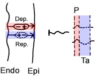
- Khử cực nhĩ (Dep.)
- Diễn ra từ nội tâm mạc (Endo) ra thượng tâm mạc (Epi)
- Vector (+) hướng về phía thượng tâm mạc (hướng về chuyển đạo tương ứng)
- Tạo ra sóng P
- Tái cực nhĩ (Rep.)
- Diễn ra từ thượng tâm mạc vào nội tâm mạc (tương tự)
- Trong cơ nhĩ, điện thế hoạt động có cùng thời khoảng ở mọi vị trí
- Vector (+) hướng về phía nội tâm mạc (hướng ngược lại)
- Tạo ra sóng Ta rộng, dẹt hoặc âm
- Diễn ra từ thượng tâm mạc vào nội tâm mạc (tương tự)
Sóng Ta
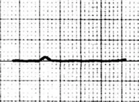
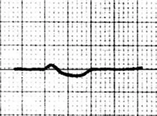
- Đại diện cho tái cực của nhĩ
- Cơ nhĩ mỏng
- Do đó, biên độ nhỏ, đôi khi không có
- Hay gặp nhất là đẳng điện
- Đôi khi dẹt – âm (< 2mm)
- Bị che khuất bởi phức bộ QRS
- Sâu thêm trong các trường hợp:
- Thiếu máu cục bộ / nhồi máu nhĩ
- Trong nhồi máu, cũng có thể xuất hiện sóng Ta chênh lên
- Nhịp nhanh xoang do tăng trương lực giao cảm
- Không có thiếu máu cục bộ nhĩ
- Thiếu máu cục bộ / nhồi máu nhĩ
- Ngắn lại trong các trường hợp:
- Nhịp nhanh
Nhồi máu nhĩ
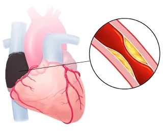
- Nhĩ ít có ý nghĩa huyết động so với thất
- Nhồi máu nhĩ đơn độc không gây biến đổi huyết động
- Thường xảy ra đồng thời với nhồi máu thất
- 10% số ca nhồi máu thất có kèm nhồi máu nhĩ
- Thường biểu hiện bằng
- Rối loạn nhịp trên thất (rung nhĩ)
- Block nhĩ thất
- Thuyên tắc huyết khối
- Vỡ thành nhĩ
- Tần suất nhồi máu nhĩ:
- 85% nhĩ phải
- 10% nhồi máu cả hai nhĩ
- 5% nhĩ trái
Đoạn PQ (PTa)
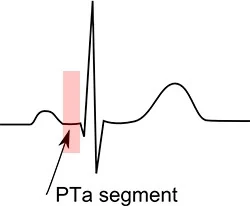
- Nhồi máu và thiếu máu cục bộ nhĩ biểu hiện trên sóng Ta
- Hay gặp nhất là chênh xuống sâu, hiếm khi là sóng Ta chênh lên
- Sóng Ta trong nhồi máu được đánh giá ở vùng đoạn PQ
- Đoạn PQ
- Là đoạn nằm giữa cuối sóng P và đầu QRS
- Đôi khi được gọi là: đoạn PR, PTa, PTp
- Cơ nhĩ mỏng
- Do đó, các biến đổi trong nhồi máu (thiếu máu cục bộ) nhĩ là tối thiểu
- Diễn biến động học không ghi nhận được (như trong nhồi máu thất)
- Dẫn tới PQ chênh lên và PQ chênh xuống
- Các biến đổi tồn tại khoảng 4 giờ sau nhồi máu
- Do đó, các biến đổi trong nhồi máu (thiếu máu cục bộ) nhĩ là tối thiểu
ECG và nhồi máu nhĩ
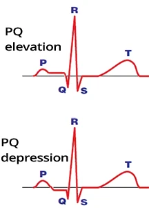
- Dựa vào ECG, không thể phân biệt nhồi máu nhĩ với thiếu máu cục bộ nhĩ
- Đánh giá đoạn PQ:
- PQ chênh lên > 0.5mm (V5, V6) và PQ chênh xuống soi gương (V1, V2)
- PQ chênh lên > 0.5mm (I) và PQ chênh xuống soi gương (II, III)
- PQ chênh xuống > 1.5mm ở các chuyển đạo trước tim (V1-V6)
- PQ chênh xuống > 1.2mm (I, II, III) và rối loạn nhịp trên thất
- Nhồi máu nhĩ phải:
- PQ chênh xuống (II, III, aVF) > 1.2mm
- PQ chênh lên (aVR, V1)
Đánh giá đoạn PQ
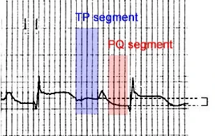
PQ chênh xuống (1mm)
- PQ được đo so với đoạn TP
- Đoạn TP là
- Khoảng giữa cuối sóng T và đầu sóng P
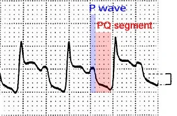
PQ chênh xuống (2mm)
- Nếu không có đoạn TP
- Khi đó "ước lượng" điểm cuối sóng P
Viêm màng ngoài tim và nhồi máu nhĩ
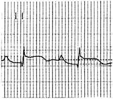
- Viêm màng ngoài tim có
- PQ chênh xuống < 0.5mm ở mọi chuyển đạo trừ (aVR, V1)
- ST chênh lên lõm (ST chênh lên kiểu "mặt cười")
- Nhồi máu nhĩ
- PQ chênh xuống > 1.2mm (không phải trên toàn bộ tim)
- Không có ST chênh lên lõm
Nhồi máu nhĩ
- PQ chênh xuống 1mm
- Tiêu chuẩn đề nghị 1.2mm, khó đo được trên thực hành
- Đoạn ST nằm trên đường đẳng điện
- Đoạn ST được đo so với đoạn TP
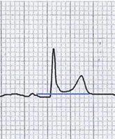
Viêm màng ngoài tim
- PQ chênh xuống 0.5mm
- Thường ở mọi chuyển đạo trừ (aVR, V1)
- ST chênh lên lõm
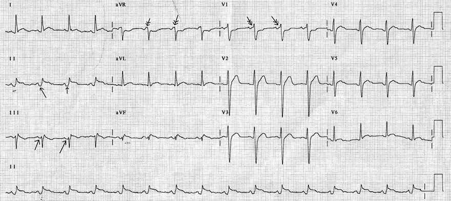
Nhồi máu nhĩ phải và STEMI thành dưới
- STEMI thành dưới
- ST chênh lên ở các chuyển đạo dưới
(II, III, aVF)
- ST chênh lên ở các chuyển đạo dưới
- Nhồi máu nhĩ phải
- PQ chênh lên (aVR, V1): mũi tên đôi
- PQ chênh xuống (II, III, aVF): mũi tên đơn
- Không thể phân biệt nhồi máu nhĩ với thiếu máu cục bộ nhĩ bằng ECG

Viêm màng ngoài tim cấp
- ST chênh lên lõm
- PQ chênh xuống ở mọi chuyển đạo trừ (aVR)
- Không có dấu hiệu "lưỡi câu" ở các chuyển đạo trước tim
- Đây là dấu hiệu đặc trưng của tái cực sớm lành tính
- Tỉ lệ ST/T = 0.33
- Điều này gợi ý viêm màng ngoài tim
- Bệnh nhân có viêm màng ngoài tim (giai đoạn 1)
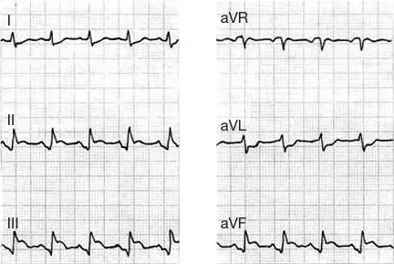
Nhồi máu nhĩ phải và STEMI thành dưới
- Mức chênh lên và chênh xuống được đánh giá so với đoạn TP
- STEMI thành dưới
- ST chênh lên ở các chuyển đạo dưới (II, III, aVF)
- Nhồi máu nhĩ phải
- PQ chênh xuống (II, III, aVF)
- Không thể phân biệt nhồi máu với thiếu máu cục bộ nhĩ bằng EKG
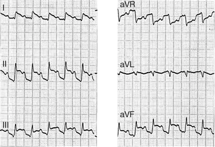
Nhồi máu nhĩ phải và STEMI thành dưới
- Mức chênh lên và chênh xuống được đánh giá so với "điểm cuối" của sóng P
- STEMI thành dưới
- ST chênh lên ở các chuyển đạo dưới (II, III, aVF)
- Nhồi máu nhĩ phải
- PQ chênh xuống (II, III, aVF)
- Không thể phân biệt nhồi máu với thiếu máu cục bộ nhĩ bằng EKG
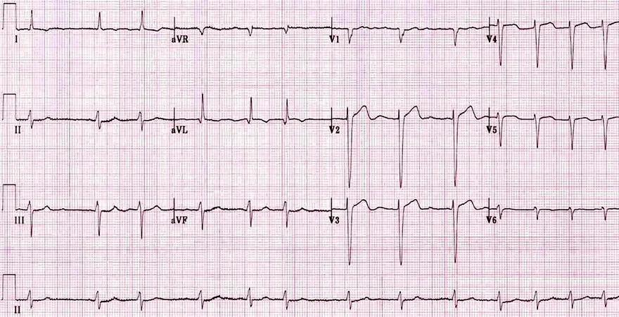
Nhồi máu nhĩ và rung nhĩ
- Nhồi máu nhĩ thường biểu hiện bằng rung nhĩ mới xuất hiện
- Cơ chất cho rung nhĩ hình thành trong nhĩ đã biến đổi cấu trúc
- Không có dấu hiệu nhồi máu nhĩ trên EKG
- Bệnh nhân có nồng độ troponin tăng nhẹ
- Câu hỏi bệnh nhân có nhồi máu nhĩ hay không chỉ mang ý nghĩa học thuật
- Rung nhĩ
- Nhịp tim không đều một cách không đều
- Tần số tim là 80/phút.
Bài 2. Đoạn ST và thiếu máu cục bộ
Đoạn ST và thiếu máu cục bộ
Thiếu máu cục bộ
- Tim là cơ quan có mức tiêu thụ oxy trên một đơn vị thể tích cao nhất trong tất cả các cơ quan
- Mức chiết tách oxy từ tuần hoàn vành là 70-80%
- Các cơ quan khác có tỉ lệ chiết tách khoảng 25%
- Cách duy nhất để tim tự bảo vệ khỏi thiếu máu cục bộ là tăng dòng máu qua các động mạch vành
- Lúc nghỉ, lưu lượng vành khoảng 250 ml/phút.
- Khi gắng sức, lưu lượng có thể tăng tới 5 lần
- Thiếu máu cục bộ (ischemia) là sự giảm dòng máu tới mô
- Thứ phát gây tình trạng thiếu oxy (hypoxia)
- Các nguyên nhân hay gặp nhất của thiếu máu cục bộ là các biến đổi ở động mạch vành:
- Xơ vữa động mạch
- Co thắt
- Huyết khối
Tổn thương cơ tim do thiếu máu cục bộ
- Hội chứng vành cấp (ACS) là tổn thương thiếu máu cục bộ cấp tính của cơ tim
- Thiếu máu cục bộ xảy ra do hẹp (stenosis) hoặc tắc nghẽn (occlusion) cấp tính một động mạch vành
- Thiếu máu cục bộ có thể là:
- Dưới nội tâm mạc (chủ yếu xảy ra khi có hẹp)
- Dưới thượng tâm mạc (chủ yếu xảy ra khi có tắc nghẽn)
- Xuyên thành (hầu như luôn khởi đầu là dưới thượng tâm mạc)
- Thiếu máu cục bộ cơ tim
- Nếu xảy ra do hẹp, thường hồi phục được
- Nếu xảy ra do tắc nghẽn, khoảng 20 phút sau sẽ xuất hiện hoại tử (nhồi máu) — chết tế bào cơ tim do thiếu máu cục bộ
- Hoại tử cơ tim (nhồi máu)
- Xảy ra khoảng 20 phút sau tắc nghẽn
- Hoại tử xuyên thành xảy ra khoảng 4-9 giờ sau tắc nghẽn
- Trong quá trình hoại tử, tế bào cơ tim vỡ ra, giải phóng troponin
Điện thế hoạt động và thiếu máu cục bộ
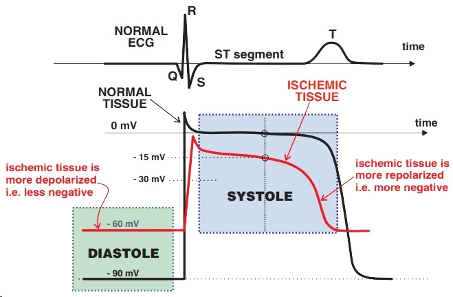
Thiếu máu cục bộ trong thì tâm trương và thì tâm thu
- Trong thiếu máu cục bộ, các kênh ion bị rối loạn, làm thay đổi phân bố ion và thứ phát làm thay đổi phân cực màng
- Thì tâm trương thất
- Là pha của chu chuyển tim khi các thất giãn ra và đổ đầy máu
- Điện thế hoạt động ở Pha 4
- Trên ECG, đó là đoạn TQ
- Cơ tim thiếu máu cục bộ trong thì tâm trương
- Khử cực nhiều hơn (ít âm hơn)
- Thì tâm thu thất
- Là pha của chu chuyển tim khi các thất co bóp và tống máu
- Điện thế hoạt động diễn tiến qua Pha 1, 2 và 3
- Trên ECG, đó là đoạn ST và sóng T
- Cơ tim thiếu máu cục bộ trong thì tâm thu
- Tái cực nhiều hơn (âm hơn)
- Khử cực chậm hơn (Pha 0 của điện thế hoạt động ít dốc hơn)
- Tái cực sớm hơn (khoảng QT ngắn hơn)
Vector thiếu máu cục bộ thì tâm trương
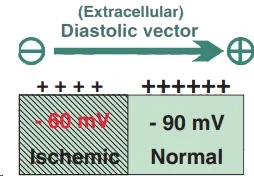
- Cơ tim thiếu máu cục bộ ít âm hơn (-60mV)
- So với cơ tim bình thường (-90mV)
- Vùng ngoại bào của vùng thiếu máu cục bộ ít dương hơn
- So với cơ tim bình thường
- Vector thiếu máu cục bộ trong thì tâm trương hướng:
- Từ cơ tim thiếu máu cục bộ về phía cơ tim bình thường
- Vector luôn hướng về vùng cơ tim dương hơn
- Điện cực ECG đặt trên cơ tim bình thường
- Sẽ ghi được đoạn QT kéo dài trong thì tâm trương
Vector thiếu máu cục bộ thì tâm thu
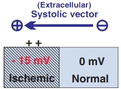
- Cơ tim thiếu máu cục bộ âm hơn (-15mV)
- So với cơ tim bình thường (0mV)
- Vùng ngoại bào của vùng thiếu máu cục bộ dương hơn
- So với cơ tim bình thường
- Vector thiếu máu cục bộ trong thì tâm thu hướng:
- Từ cơ tim bình thường về phía cơ tim thiếu máu cục bộ
- Vector luôn hướng về vùng cơ tim dương hơn
- Điện cực ECG đặt trên cơ tim thiếu máu cục bộ
- Sẽ ghi được đoạn ST và sóng T chênh lên trong thì tâm thu
ECG và đường đẳng điện
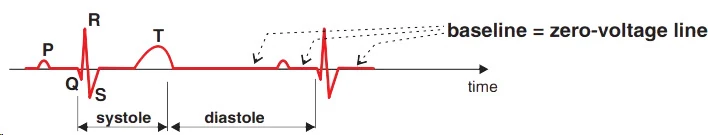
Bản ghi ECG sinh lý
- Vector tim luôn hướng về vùng có điện tích ngoại bào dương hơn
- Khi hướng của vector thay đổi theo thời gian, các sóng và các dao động xuất hiện trên ECG
- Nếu toàn bộ tim đã khử cực hoặc đã tái cực
- Toàn bộ tim có cùng điện tích và không sinh ra vector điện học nào
- Trên ECG là đường đẳng điện
Thiếu máu dưới nội tâm mạc (ST chênh xuống)
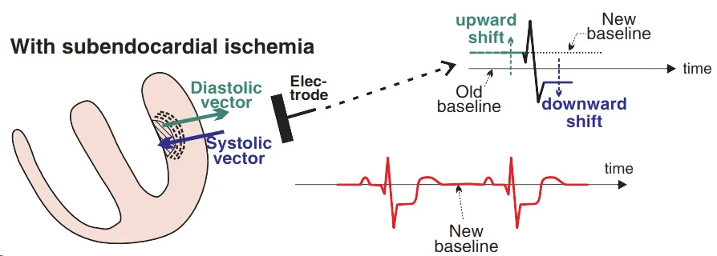
Thiếu máu dưới nội tâm mạc
- Thiếu máu dưới nội tâm mạc thường gặp hơn thiếu máu dưới thượng tâm mạc
- Vì các nhánh chính của động mạch vành nằm ở thượng tâm mạc rồi mới lan qua cơ tim tới nội tâm mạc
- Nội tâm mạc được cấp máu bởi các nhánh tận của động mạch vành
- Hiếm khi tiến triển thành thiếu máu xuyên thành
- Vector thì tâm trương
- Hướng về cơ tim bình thường (so với chuyển đạo ECG tương ứng)
- Đoạn QT dịch chuyển lên trên
- Vector thì tâm thu
- Hướng về cơ tim thiếu máu cục bộ (đi xa chuyển đạo ECG tương ứng)
- Đoạn ST dịch chuyển xuống dưới
- Hình thành một đường đẳng điện mới, cao hơn
- Trên ECG, ta thấy ST chênh xuống (ở các chuyển đạo nhìn vào vùng thiếu máu cục bộ)
ST chênh xuống và thiếu máu cục bộ
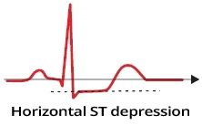
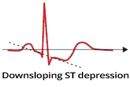
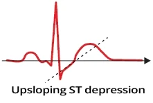
- ST chênh xuống xuất hiện trong thiếu máu dưới nội tâm mạc
- ST chênh xuống do thiếu máu cục bộ có tính động
- Nếu nghi ngờ ST chênh xuống do thiếu máu cục bộ, bệnh nhân cần được ghi ECG lặp lại
- ST chênh xuống do thiếu máu cục bộ có thể gặp trong NSTEMI và đau thắt ngực không ổn định
ST chênh xuống và thiếu máu cục bộ
- Mức ST chênh xuống được đo ở 80ms (2 ô nhỏ) sau điểm J
- ST chênh xuống do thiếu máu cục bộ chỉ hiện diện trong lúc thiếu máu cục bộ (trong cơn đau thắt ngực)
- Điển hình, ST chênh xuống hết đi khi cơn đau thắt ngực hết
- Thiếu máu dưới nội tâm mạc gây ST chênh xuống
- ST chênh xuống nằm ngang
- ST chênh xuống dốc xuống
- Ít nhất ở 2 chuyển đạo ECG liền kề ≥ 0.5mm
- ST chênh xuống dốc lên không điển hình cho thiếu máu dưới nội tâm mạc
- Tuy nhiên, nếu đoạn dốc lên đi lên từ từ, có thể gợi ý thiếu máu cục bộ
ST chênh xuống dốc lên thoai thoải và thiếu máu cục bộ
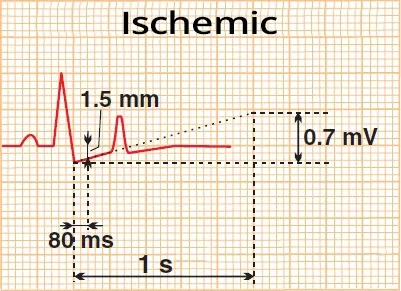
- Đoạn ST dốc lên thoai thoải (đoạn ST dốc lên chậm)
- Có độ dốc lên < 1.5mV/1s
- Đoạn ST dốc lên dựng đứng (đoạn ST dốc lên nhanh)
- Có độ dốc lên > 1.5mV/1s
ST chênh xuống dốc lên thoai thoải
- Đoạn ST dốc lên thoai thoải < 1.5mV/1s
- ST chênh xuống dốc lên 1.5mm
- ST chênh xuống được đo ở 80ms sau điểm J
- ST chênh xuống này do thiếu máu cục bộ
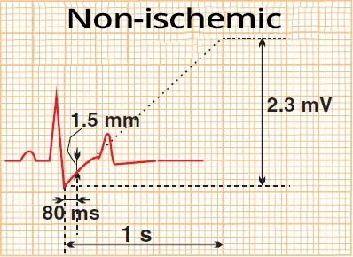
ST chênh xuống dốc lên dựng đứng
- Đoạn ST dốc lên dựng đứng > 1.5mV/1s
- ST chênh xuống dốc lên 1.5mm
- ST chênh xuống được đo ở 80ms sau điểm J
- ST chênh xuống dốc đứng không bao giờ do thiếu máu cục bộ
ST chênh xuống — chẩn đoán phân biệt
- Thiếu máu dưới nội tâm mạc / NSTEMI
- Biến đổi soi gương trong nhồi máu STEMI
- Nhồi máu STEMI thành sau
- Digoxin
- Hạ kali máu
- Nhịp nhanh trên thất (SVT)
- Block nhánh phải (RBBB)
- Block nhánh trái (LBBB)
- Phì đại thất phải
- Phì đại thất trái (LVH)
- Tạo nhịp thất
Thiếu máu dưới thượng tâm mạc (ST chênh lên)
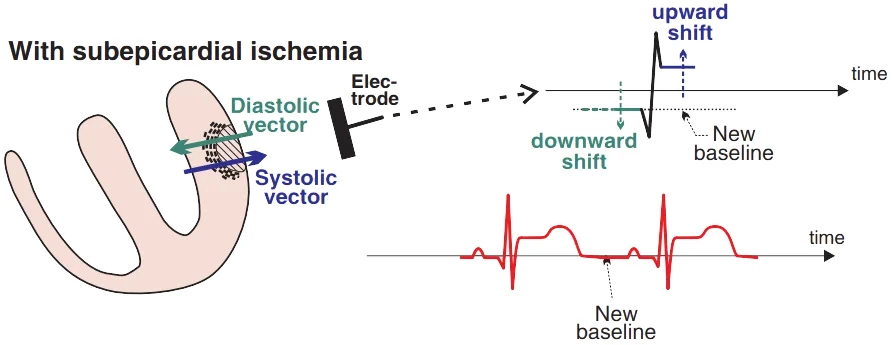
Thiếu máu dưới thượng tâm mạc
- Thiếu máu dưới thượng tâm mạc ít gặp hơn thiếu máu dưới nội tâm mạc
- Vì các nhánh chính của động mạch vành nằm ở thượng tâm mạc
- Thượng tâm mạc do đó được cấp máu phong phú hơn nội tâm mạc
- Thường tiến triển thành thiếu máu xuyên thành
- Vector thì tâm trương
- Hướng về cơ tim bình thường (đi xa chuyển đạo ECG tương ứng)
- Đoạn QT dịch chuyển xuống thấp
- Vector thì tâm thu
- Hướng về cơ tim thiếu máu cục bộ (hướng tới chuyển đạo ECG tương ứng)
- Đoạn ST dịch chuyển lên cao
- Hình thành một đường nền mới, thấp hơn
- Trên ECG, ta thấy ST chênh lên (ở các chuyển đạo "nhìn" vào vùng thiếu máu cục bộ)
ST chênh lên và thiếu máu cục bộ
- ST chênh lên xuất hiện trong thiếu máu dưới thượng tâm mạc và thiếu máu xuyên thành, chỉ điểm nhồi máu STEMI
- ST chênh lên do thiếu máu cục bộ có tính động
- Nếu nghi ngờ ST chênh lên do thiếu máu cục bộ, cần ghi lại nhiều lần ECG của bệnh nhân
- ST chênh lên do thiếu máu cục bộ gặp trong các nhồi máu STEMI
- STEMI biểu hiện bằng ST chênh lên:
- Ít nhất ở 2 chuyển đạo liền kề
- Hiện diện ở cả giai đoạn cấp và bán cấp của STEMI
- Lồi (hình mặt buồn)
- Nằm ngang
- Hiếm khi, ST chênh lên (STE) có thể:
- Dốc xuống
- Dốc lên
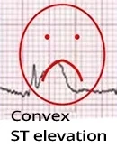
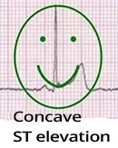
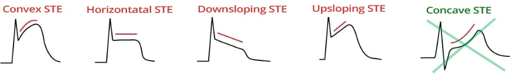
ST chênh lên (STE) trong thiếu máu cục bộ
- STEMI có đặc điểm
- STE lồi
- STE nằm ngang
- Hiếm khi, ST chênh lên (STE) có thể:
- Dốc xuống
- Dốc lên
- STEMI (thiếu máu dưới thượng tâm mạc hoặc thiếu máu xuyên thành)
- Không bao giờ tạo ra ST chênh lên lõm (hình mặt cười)
ST chênh lên — chẩn đoán phân biệt
- Nhồi máu STEMI cấp
- Đau thắt ngực Prinzmetal
- Viêm màng ngoài tim
- Tái cực sớm lành tính
- Phì đại thất trái
- Block nhánh trái
- Phình thất trái
- Hội chứng Brugada
- Tạo nhịp thất
- Tăng kali máu
- Tăng áp lực nội sọ
Đoạn ST và hội chứng vành cấp
- Hội chứng vành cấp (ACS) là tổn thương thiếu máu cục bộ cấp tính của cơ tim.
- Hay gặp nhất là do vỡ mảng xơ vữa (vỏ xơ)
- Một huyết khối hình thành tại vị trí vỡ, dẫn tới tình trạng cấp tính
- Hẹp (thu hẹp lòng mạch)
- Tắc nghẽn (bít tắc lòng mạch)
- Trong trường hợp tắc nghẽn, khoảng 20 phút sau sẽ xảy ra hoại tử cơ tim (nhồi máu)
- Các tế bào cơ tim hoại tử vỡ ra và giải phóng troponin (chết tế bào do thiếu máu cục bộ)
- Đoạn ST là dấu ấn ECG chính của ACS
- Troponin là dấu ấn xét nghiệm chính của nhồi máu
- Được giải phóng từ các tế bào cơ tim hoại tử trong nhồi máu
- Không được giải phóng từ cơ tim thiếu máu cục bộ
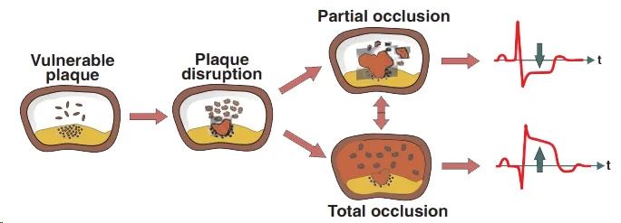
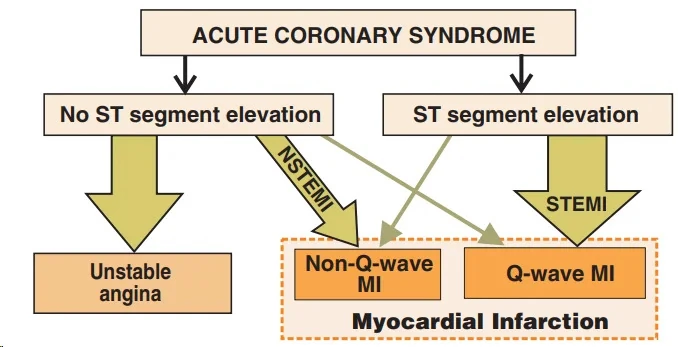
Đoạn ST và hội chứng vành cấp
- Hẹp cấp tính (thu hẹp lòng mạch)
- Dòng máu qua động mạch giảm nhưng vẫn được duy trì
- Gây thiếu máu dưới nội tâm mạc
- EKG cho thấy ST chênh xuống
- Hiếm khi, đoạn ST có thể bình thường
- Tắc nghẽn cấp tính (bít tắc lòng mạch)
- Dòng máu qua động mạch ngừng lại
- Dẫn tới thiếu máu dưới thượng tâm mạc, và sau đó là thiếu máu xuyên thành
- EKG cho thấy ST chênh lên
- 20 phút sau tắc nghẽn, hoại tử (nhồi máu) hình thành
- 4-9 giờ sau tắc nghẽn, xảy ra hoại tử xuyên thành
- Trong quá trình hoại tử, tế bào cơ tim vỡ ra và giải phóng troponin
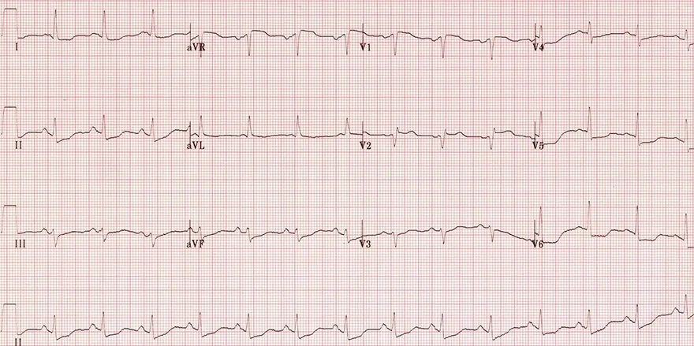
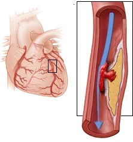
Đau thắt ngực không ổn định
- Nhịp xoang
- ST chênh xuống (I, II, V5-V6)
- Có thể có ST chênh lên ở V1-V2
- Cân nhắc các chuyển đạo EKG bên phải (V4R)
- Nghi ngờ nhồi máu thất phải
- Bệnh nhân có khoảng 10 phút đau thắt ngực và troponin sau đó bình thường
- Không có ST chênh xuống trên các bản ghi EKG trước đó
- Gợi ý đau thắt ngực không ổn định
- Nếu bệnh nhân sau đó có troponin tăng mà không có ST chênh lên
- Thì điều đó gợi ý nhồi máu NSTEMI
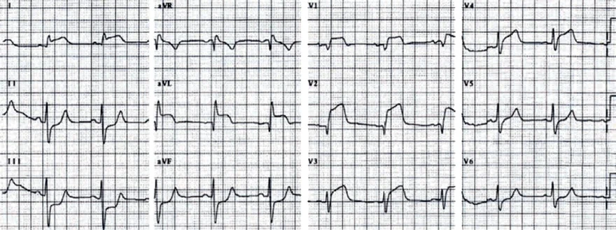
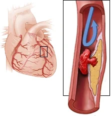
Nhồi máu STEMI cấp thành trước
- Nhịp xoang
- Nhồi máu STEMI thành trước
- ST chênh lên (V1-V4, I, aVL, aVR)
- ST chênh xuống soi gương (II, III, aVF)
- Gợi ý tắc đoạn gần RIA (LAD) trên S1 và D1
- Block phân nhánh trái trước
- Bệnh nhân có cơn đau thắt ngực và sau đó troponin tăng
Bài 3. Sóng T và thiếu máu cục bộ
Sóng T và thiếu máu cục bộ (ischemia)
Vector khử cực khi không có thiếu máu cục bộ
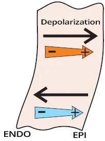
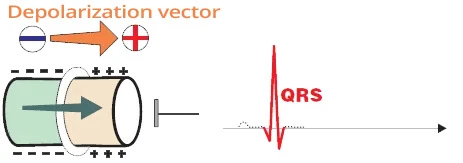
Khử cực cơ tim (myocardial depolarization)
- Biến đổi ở khoang ngoại bào (extracellular space) trở nên âm
- Luôn bắt đầu ở nội tâm mạc (endocardium) và tiến về phía thượng tâm mạc (epicardium)
- Khoang ngoại bào trở nên âm
- Vector tim (cardiac vector) di chuyển theo hướng khử cực (từ nội tâm mạc đến thượng tâm mạc)
- Vector luôn di chuyển về phía vùng dương hơn
- Khử cực diễn ra nhanh
- Một sóng R hẹp xuất hiện ở các chuyển đạo "nhìn thấy" vector
Vector tái cực khi không có thiếu máu cục bộ
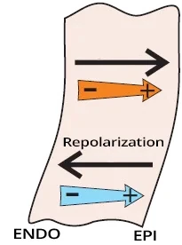
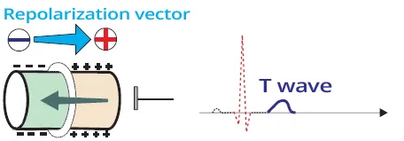
Tái cực cơ tim (myocardial repolarization)
- Biến đổi ở khoang ngoại bào trở nên dương
- Bắt đầu sau khi khử cực hoàn toàn
- Các tế bào thượng tâm mạc bắt đầu tái cực sớm hơn các tế bào nội tâm mạc
- Do đó, tái cực lan từ thượng tâm mạc đến nội tâm mạc
- Tái cực là sự đổi cực tính của khoang ngoại bào sang dương
- Vì vậy, vector hướng ngược lại (về phía thượng tâm mạc) với hướng tái cực
- Vector luôn hướng về phía vùng dương hơn
- Tái cực diễn ra chậm hơn khử cực
- Một sóng T rộng xuất hiện ở các chuyển đạo "nhìn thấy" vector
Sóng T sinh lý khi không có thiếu máu cục bộ
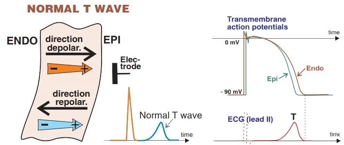
Sóng T sinh lý
- Khử cực
- Lan đến thượng tâm mạc
- Diễn ra nhanh (tạo ra sóng R hẹp)
- Vector hướng về phía thượng tâm mạc (về phía chuyển đạo tương ứng)
- Tái cực
- Lan đến nội tâm mạc, do thượng tâm mạc bắt đầu tái cực sớm hơn nội tâm mạc
- Diễn ra chậm (tạo ra sóng T rộng)
- Vector cũng hướng về phía thượng tâm mạc (về phía chuyển đạo tương ứng)
- Sóng T sinh lý là sóng đồng hướng (concordant) — cùng cực tính với phức bộ QRS
Sóng T âm và thiếu máu dưới nội tâm mạc
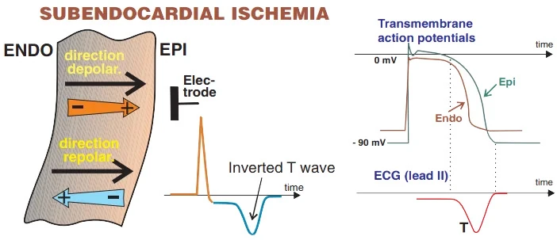
Thiếu máu dưới nội tâm mạc (subendocardial ischemia)
- Thiếu máu dưới nội tâm mạc
- Xảy ra do hẹp (chít hẹp lòng mạch) một động mạch vành
- Rút ngắn thời gian điện thế hoạt động (action potential) ở nội tâm mạc
- Khử cực
- Diễn ra như ở cơ tim không thiếu máu cục bộ
- Cả khử cực và vector đều hướng về phía thượng tâm mạc
- Tái cực
- Nội tâm mạc bắt đầu tái cực sớm hơn
- So với các tế bào thượng tâm mạc (ở cơ tim không thiếu máu cục bộ)
- Tái cực tiến về phía thượng tâm mạc
- Vector hướng về phía nội tâm mạc (về phía vùng dương hơn, ra xa chuyển đạo tương ứng)
- Hình thành sóng T âm
- Đây là sóng nghịch hướng (discordant) — ngược cực tính với phức bộ QRS
- Nội tâm mạc bắt đầu tái cực sớm hơn
Sóng T tối cấp và thiếu máu dưới thượng tâm mạc
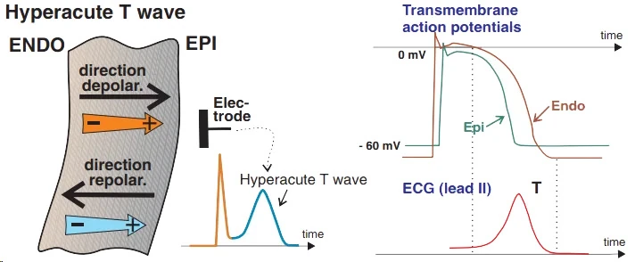
Thiếu máu dưới thượng tâm mạc (subepicardial ischemia) và thiếu máu xuyên thành (transmural ischemia)
- Thiếu máu dưới thượng tâm mạc
- Xảy ra do tắc nghẽn (bít tắc) một động mạch vành
- Tiến triển thành thiếu máu xuyên thành trong vòng vài phút
- Thời gian điện thế hoạt động bị rút ngắn ở cả nội tâm mạc và thượng tâm mạc
- Cả hai vùng đều thiếu máu cục bộ
- Tuy nhiên, thời gian điện thế hoạt động rút ngắn nhiều hơn ở thượng tâm mạc
- Thượng tâm mạc nhạy cảm với thiếu máu cục bộ hơn nội tâm mạc
- Khử cực
- Diễn ra tương tự như ở cơ tim không thiếu máu cục bộ
- Cả khử cực và vector đều hướng về phía thượng tâm mạc
- Tái cực (trong giai đoạn tối cấp của STEMI)
- Kéo dài vài phút sau khi tắc nghẽn
- Có sự rút ngắn điện thế hoạt động nhiều hơn ở thượng tâm mạc
- Tiến triển theo cùng hướng như ở cơ tim không thiếu máu cục bộ
- Tuy nhiên, tái cực bắt đầu sớm hơn và diễn ra nhanh hơn
- Tạo ra sóng T tối cấp (hyperacute T wave)
- Chỉ kéo dài vài phút sau khi tắc nghẽn
- Gần phức bộ QRS hơn
- Nhọn (tương tự tăng kali máu)
- Là sóng đồng hướng (cùng cực tính với phức bộ QRS)
Sóng T âm và thiếu máu xuyên thành giai đoạn muộn
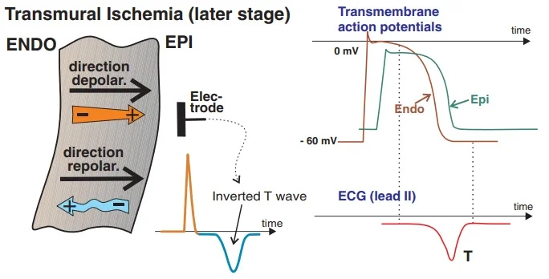
Thiếu máu xuyên thành giai đoạn muộn
- Thiếu máu dưới thượng tâm mạc
- Xảy ra do tắc nghẽn (bít tắc) một động mạch vành
- Giai đoạn tối cấp kéo dài vài phút sau khi tắc nghẽn (sóng T tối cấp)
- Tiến triển thành thiếu máu xuyên thành trong vòng vài phút
- Thiếu máu xuyên thành cấp (diễn biến của STEMI)
- Bắt đầu sau giai đoạn tối cấp
- Kéo dài vài giờ sau khi tắc nghẽn
- Sóng T dương nhưng biên độ thấp hơn
- Thiếu máu xuyên thành giai đoạn muộn
- Xảy ra sau giai đoạn cấp
- Kéo dài vài ngày đến một tuần
- Thay đổi về thời gian và tốc độ điện thế hoạt động
- Khử cực
- Diễn ra tương tự như ở cơ tim không thiếu máu cục bộ
- Cả khử cực và vector đều hướng về phía thượng tâm mạc
- Tái cực (trong thiếu máu xuyên thành giai đoạn muộn)
- Nội tâm mạc tái cực sớm hơn thượng tâm mạc
- Tái cực hướng về phía thượng tâm mạc và bị chậm lại
- Do đó vector tái cực tồn tại lâu hơn
- Tạo ra sóng T âm rộng
- Là sóng nghịch hướng (ngược cực tính với phức bộ QRS)
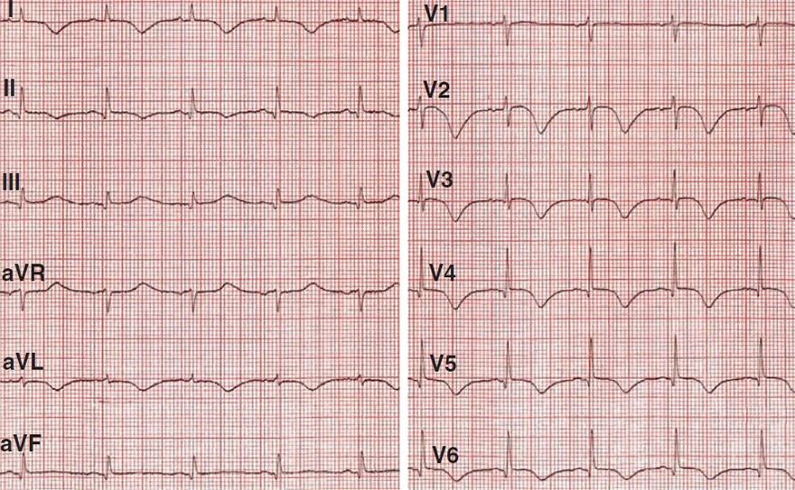
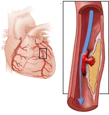
Đau thắt ngực không ổn định (unstable angina pectoris)
- Nhịp xoang
- Sóng T đảo ngược (I, aVL, V2-V6)
- Bệnh nhân có khoảng 10 phút đau thắt ngực
- Bệnh nhân không có sóng T đảo ngược trên các bản ghi EKG trước đó
- Dấu hiệu ST chênh lên 1mm ở V2-V6
- Có thể gợi ý STEMI cấp
- Tuy nhiên, ST chênh lên sau đó trở về bình thường và nồng độ troponin bình thường qua nhiều lần xét nghiệm
- Điều này phù hợp với đau thắt ngực không ổn định
- Bệnh nhân có hẹp LAD và thiếu máu dưới nội tâm mạc
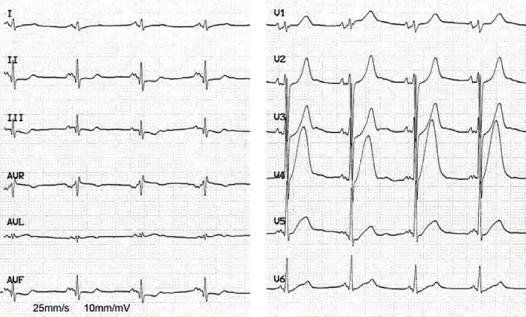
STEMI thành trước giai đoạn tối cấp
- Nhịp xoang
- Các sóng T cao (V2-V4) tối cấp
- Phát triển do thiếu máu dưới thượng tâm mạc cấp
- Chỉ kéo dài vài phút sau khi tắc nghẽn
- Bệnh nhân sau đó biểu hiện diễn biến EKG điển hình của STEMI
- Xét nghiệm cho thấy troponin tăng cao
- Đây là STEMI thành trước giai đoạn tối cấp
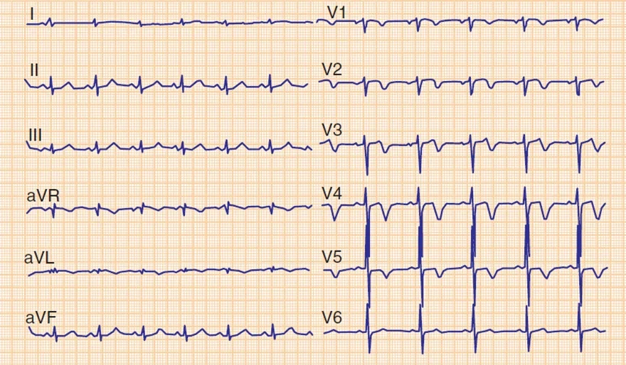
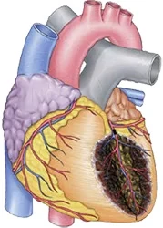
STEMI thành trước cũ
- Nhịp xoang
- Bệnh nhân đã bị STEMI thành trước cách đây 2 tuần
- Sóng T đảo ngược (V1-V5, aVL)
- Tồn tại kéo dài vài tuần sau nhồi máu STEMI
Động học của ST chênh lên trong STEMI
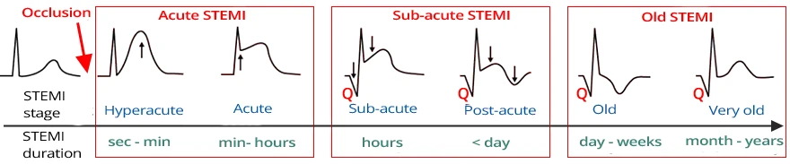
Phân loại STEMI theo giai đoạn
- Trong thực hành lâm sàng, STEMI được phân thành 3 giai đoạn dựa trên hình ảnh ECG:
- STEMI cấp
- Đặc trưng bởi ST chênh lên không có sóng Q
- Thời gian: vài phút - vài giờ
- STEMI bán cấp
- Đặc trưng bởi ST chênh lên và sóng Q
- Thời gian: vài giờ - vài ngày
- STEMI cũ
- Đặc trưng bởi sóng Q không có ST chênh lên
- Thời gian: > một tuần
- STEMI cấp
Bài 4. Hội chứng vành cấp
Hội chứng vành cấp (ACS)
Thiếu máu cục bộ
- Tim có, tính theo tỉ lệ với thể tích của nó, mức tiêu thụ oxy cao nhất trong tất cả các cơ quan
- Mức chiết tách oxy từ tuần hoàn vành là 70-80%
- Các cơ quan khác có tỉ lệ chiết tách khoảng 25%
- Cách duy nhất để tim tự bảo vệ khỏi thiếu máu cục bộ là tăng lưu lượng máu qua các động mạch vành
- Khi nghỉ, lưu lượng máu vành khoảng 250 ml máu mỗi phút.
- Khi gắng sức, lưu lượng có thể tăng tới 5 lần
- Thiếu máu cục bộ là sự giảm lưu lượng máu trong mô
- Xảy ra tình trạng thiếu oxy mô (hypoxia) thứ phát
- Nguyên nhân hay gặp nhất của thiếu máu cục bộ là các biến đổi ở động mạch vành:
- Xơ vữa động mạch
- Co thắt
- Huyết khối
Xơ vữa động mạch
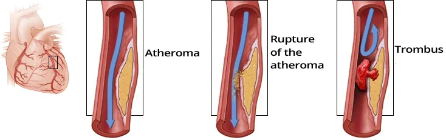
Xơ vữa động mạch và hội chứng vành cấp
- Mảng xơ vữa (atherosclerotic plaque, atheroma)
- Là sự tích tụ lipid và bạch cầu trong thành động mạch, được phủ bởi một "mũ" xơ
- Gây hẹp (thu nhỏ lòng) động mạch
- Mảng xơ vữa phát triển qua nhiều năm, nên một mạng lưới động mạch bàng hệ hình thành quanh chỗ hẹp
- Hội chứng vành cấp (ACS) là tổn thương cơ tim cấp do thiếu máu cục bộ
- Hay gặp nhất là xảy ra khi vỡ mảng xơ vữa ("mũ" xơ)
- Tại vùng vỡ, một huyết khối hình thành, dẫn đến tình trạng cấp tính
- Hẹp (hẹp tiến triển - thu hẹp lòng mạch)
- Tắc nghẽn (bít tắc hoàn toàn)
Diễn tiến của thiếu máu cục bộ trong tắc nghẽn
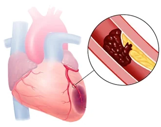
- Sau khi tắc nghẽn một nhánh của động mạch vành,
một nhồi máu STEMI bắt đầu hình thành - Nhồi máu (hoại tử) hình thành dần trong thành cơ tim
- Các khoảng thời gian là riêng biệt ở từng bệnh nhân
- Khả năng sống của cơ tim phụ thuộc vào tuần hoàn bàng hệ
- Thiếu máu cục bộ (<20 phút)
- Cơ tim bị thiếu oxy (hypoxia)
- Tình trạng thiếu oxy (tắc nghẽn) kéo dài dưới 20 phút
- Đây là tổn thương hồi phục được
- Trên ECG, có sóng T tối cấp
- Cơ tim bị thiếu oxy (hypoxia)
- Tổn thương do thiếu máu cục bộ (>20 phút)
- Cơ tim bị thiếu oxy (hypoxia)
- Tình trạng thiếu oxy (tắc nghẽn) kéo dài hơn 20 phút
- Đây là tổn thương hồi phục được
- Trên ECG, đã có ST chênh lên
- Cơ tim bị thiếu oxy (hypoxia)
- Nhồi máu (>2 giờ)
- Cơ tim bị thiếu oxy (hypoxia)
- Tình trạng thiếu oxy (tắc nghẽn) kéo dài hơn 2 giờ
- Đây là tổn thương không hồi phục
- Trên ECG, sóng Q bệnh lý bắt đầu hình thành
- Cơ tim bị thiếu oxy (hypoxia)
Diễn tiến của thiếu máu cục bộ sau tắc nghẽn
- Tổn thương cơ tim sau tắc nghẽn rất riêng biệt ở từng người
- Phụ thuộc vào khả năng sống của cơ tim và tuần hoàn bàng hệ vành
- Ở một quả tim có dự trữ thiếu máu cục bộ đã cạn kiệt, nhồi máu (hoại tử) có thể xảy ra:
- Ở thời điểm 20 phút sau tắc nghẽn
- Ở thời điểm 4-9 giờ sau tắc nghẽn, có thể hình thành nhồi máu xuyên thành 100% (hoại tử)
Đoạn ST và hội chứng vành cấp
- Đoạn ST là dấu ấn ECG chính của hội chứng vành cấp
- Troponin là dấu ấn xét nghiệm chính của nhồi máu
- Nó được giải phóng từ các tế bào cơ tim hoại tử trong nhồi máu
- Nó không được giải phóng từ cơ tim thiếu máu cục bộ
Đoạn ST và hội chứng vành cấp
- Hẹp cấp tính (thu hẹp lòng mạch)
- Dòng máu động mạch giảm nhưng vẫn được bảo tồn
- Dẫn đến thiếu máu dưới nội tâm mạc
- Trên ECG, có ST chênh xuống
- Hiếm khi, đoạn ST có thể bình thường
- Tắc nghẽn cấp tính (bít tắc hoàn toàn)
- Dòng máu động mạch ngừng lại
- Dẫn đến thiếu máu dưới thượng tâm mạc, về sau là thiếu máu xuyên thành
- Trên ECG, có ST chênh lên
- Nhồi máu (hoại tử) có thể xảy ra trong vòng 20 phút sau tắc nghẽn
- Hoại tử xuyên thành có thể xảy ra trong vòng 4-9 giờ sau tắc nghẽn
- Trong quá trình hoại tử, các tế bào cơ tim vỡ ra và giải phóng troponin
Thiếu máu dưới nội tâm mạc
- Xảy ra khi có hẹp cấp tính
- Có ST chênh xuống
- Không xảy ra hoại tử xuyên thành
- Không xuất hiện sóng Q bệnh lý
Thiếu máu dưới thượng tâm mạc
- Xảy ra khi có tắc nghẽn cấp tính
- Có ST chênh lên
- Hoại tử xuyên thành xảy ra về sau
- Xuất hiện sóng Q bệnh lý (sau 9 giờ)
Troponin và nhồi máu
- Troponin (TnT) là dấu ấn xét nghiệm chính của nhồi máu
- Nó đặc hiệu cho cơ tim
- Nó được giải phóng vào máu trong nhồi máu (tế bào cơ tim vỡ ra)
- Nó không được giải phóng khi cơ tim thiếu máu cục bộ
- Các enzyme khác (CK, AST, LDH) không đặc hiệu bằng
- Vì chúng cũng có ở các cơ quan khác
- Sự giải phóng troponin:
- Bắt đầu được giải phóng 2-4 giờ sau tắc nghẽn
- Đạt đỉnh vào khoảng 12-24 giờ
- Tồn tại khoảng 7 ngày
Hội chứng vành cấp (ACS)
- ACS là tổn thương cấp tính do thiếu máu cục bộ ở cơ tim, gây ra bởi:
- Hẹp cấp tính
- Tắc nghẽn cấp tính
- Nguyên nhân hay gặp nhất của ACS là huyết khối từ vỡ mảng xơ vữa
- Triệu chứng của ACS:
- Đau thắt ngực (đau ngực kéo dài hơn 20 phút)
- Thường lan lên cổ, vai, cánh tay và xương bả vai
- Khó thở, lo âu, sợ hãi, mệt yếu
- Triệu chứng thay đổi theo từng người
- Bệnh nhân đái tháo đường có thể có
- Bệnh đa dây thần kinh và giảm ngưỡng đau
- Triệu chứng có thể rất ít, hiếm khi không có triệu chứng nào!
- Bệnh nhân đái tháo đường có thể có
- Đau thắt ngực (đau ngực kéo dài hơn 20 phút)
- ACS được phân loại theo mức độ lan rộng thành:
- Đau thắt ngực không ổn định (không xảy ra hoại tử)
- Nhồi máu NSTEMI (dẫn đến hoại tử một phần thành cơ tim)
- Non-ST Elevation Myocardial Infarction (nhồi máu không có ST chênh lên)
- Nhồi máu STEMI (dẫn đến hoại tử xuyên thành)
- ST Elevation Myocardial Infarction (nhồi máu có ST chênh lên)
Hội chứng vành cấp
- Trong hội chứng vành cấp, có thể xảy ra:
- ST chênh lên, ST chênh xuống (hiếm khi đoạn ST bình thường)
- ST chênh lên
- Xuất hiện trong vòng vài phút sau tắc nghẽn
- Trên ECG, là nhồi máu STEMI (ST Elevation Myocardial Infarction)
- Tắc nghẽn gây thiếu máu dưới thượng tâm mạc
- Trong 20 phút, xảy ra hoại tử dưới thượng tâm mạc
- Trong 4-9 giờ, xảy ra hoại tử xuyên thành
- Trong 3-8 giờ, troponin bắt đầu được giải phóng từ các tế bào cơ tim hoại tử
- Trong 9 giờ, sóng Q bệnh lý hình thành
- Hiếm khi sóng Q bệnh lý không hình thành
- ST chênh xuống
- Xuất hiện trong vòng vài phút sau hẹp
- Hẹp gây thiếu máu dưới nội tâm mạc
- Trên ECG, thấy ST chênh xuống
- Hiếm khi đoạn ST bình thường trong thiếu máu dưới nội tâm mạc
- Điểm khác biệt duy nhất giữa đau thắt ngực không ổn định và nhồi máu NSTEMI là:
- NSTEMI có hoại tử dưới nội tâm mạc (troponin được giải phóng)
- Đau thắt ngực không ổn định không có hoại tử (troponin không được giải phóng)
- Nhồi máu NSTEMI (Non-ST Elevation Myocardial Infarction)
- Trong 20 phút, xảy ra hoại tử dưới nội tâm mạc
- Không xảy ra hoại tử xuyên thành
- Do đó, không hình thành sóng Q bệnh lý
- Hiếm khi, có thể hình thành hoại tử xuyên thành và sóng Q bệnh lý
- Trong 3-8 giờ, troponin bắt đầu được giải phóng từ các tế bào cơ tim hoại tử
- Trong 20 phút, xảy ra hoại tử dưới nội tâm mạc
- Đau thắt ngực không ổn định
- Xảy ra khi có hẹp
- Nhưng thiếu máu cục bộ nhẹ hơn so với NSTEMI
- Không xảy ra hoại tử
- Do đó, troponin không được giải phóng
- Xảy ra khi có hẹp
Danh pháp nhồi máu
- Nhồi máu là hoại tử cơ tim
- Troponin được giải phóng
- Theo ECG, phân biệt 2 loại nhồi máu:
- Nhồi máu STEMI
- Nhồi máu NSTEMI
Nhồi máu STEMI
- Xảy ra do tắc nghẽn
- Hoại tử là:
- Dưới thượng tâm mạc
- Về sau trở thành xuyên thành
- Trên ECG, thấy ST chênh lên
Nhồi máu NSTEMI
- Xảy ra do hẹp
- Hoại tử là:
- Dưới nội tâm mạc
- Không xuyên thành
- Trên ECG, thấy ST chênh xuống
- Danh pháp sau đây đã lỗi thời
- Không còn được sử dụng vì mức độ lan rộng của hoại tử cơ tim không phải lúc nào cũng tương ứng với hình ảnh ECG:
- Nhồi máu xuyên thành
- Đây là thuật ngữ lỗi thời để chỉ STEMI
- STEMI thường là hoại tử xuyên thành, nhưng đây không phải là quy luật
- Nhồi máu Q
- Đây là thuật ngữ lỗi thời để chỉ STEMI
- STEMI thường gây hoại tử xuyên thành và sóng Q bệnh lý, nhưng đây không phải là quy luật
- Nhồi máu không xuyên thành
- Đây là thuật ngữ lỗi thời để chỉ NSTEMI
- NSTEMI thường là hoại tử không xuyên thành, nhưng đây không phải là quy luật
- Nhồi máu không Q
- Đây là thuật ngữ lỗi thời để chỉ NSTEMI
- NSTEMI thường có hoại tử không xuyên thành và không tạo ra sóng Q bệnh lý, nhưng đây không phải là quy luật
- Nhồi máu xuyên thành
Thiếu máu cục bộ sau nghiệm pháp gắng sức (ergometry)
- ECG của bệnh nhân được ghi ngay sau nghiệm pháp gắng sức xe đạp
- Nhịp nhanh xoang
- Sóng T đảo ngược và ST chênh xuống (I, aVL, V2-V6)
- ST chênh lên ở aVR có thể gợi ý tổn thương thiếu máu cục bộ nặng
- Trong trường hợp này, đó là một biến đổi soi gương
- Về sau, nhịp nhanh hết và ECG trở về bình thường
- Bệnh nhân có đau thắt ngực ổn định
- Không phải hội chứng vành cấp
Đau thắt ngực không ổn định
- Nhịp xoang
- Sóng T đảo ngược (I, aVL, V2-V6)
- Bệnh nhân có khoảng 10 phút đau thắt ngực và troponin về sau bình thường
- Các sóng T đảo ngược không có trên những bản ghi ECG cũ
- Triệu chứng xuất hiện tự phát, không do gắng sức
- Chẩn đoán là đau thắt ngực không ổn định
- Đây được xem là một hội chứng vành cấp
- Nếu bệnh nhân về sau có troponin tăng mà không có ST chênh lên
- Thì sẽ được xếp loại là NSTEMI
STEMI cấp của thành trước
- Nhịp xoang
- Nhồi máu STEMI thành trước
- ST chênh lên (V1-V4, I, aVL, aVR)
- ST chênh xuống soi gương (II, III, aVF)
- Đây là tắc nghẽn đoạn gần RIA (LAD) ở phía xa S1 và D1
- Block phân nhánh trái trước
- Bệnh nhân có đau thắt ngực và về sau troponin cũng tăng
- Đây là một hội chứng vành cấp - nhồi máu STEMI
Bài 5. Nhồi máu STEMI
Nhồi máu cơ tim ST chênh lên, cơn đau tim STEMI
Hội chứng vành cấp (ACS)
- Hội chứng vành cấp (ACS) là tổn thương cấp tính do thiếu máu cục bộ ở cơ tim
- Hay gặp nhất là hậu quả của vỡ mảng xơ vữa (vỏ xơ)
- Huyết khối hình thành tại vị trí vỡ, dẫn tới tình trạng cấp tính
- Hẹp (mức độ hẹp tiến triển)
- Tắc nghẽn (bít tắc)
Hội chứng vành cấp
- Trong hội chứng vành cấp, có thể xảy ra những biến đổi sau:
- ST chênh lên, ST chênh xuống (hiếm khi đoạn ST bình thường)
- ST chênh lên
- Xuất hiện vài phút sau khi tắc nghẽn
- Trên ECG, đây là nhồi máu STEMI (ST Elevation Myocardial Infarction)
- Tắc nghẽn gây thiếu máu dưới thượng tâm mạc
- Sau 20 phút, xuất hiện hoại tử dưới thượng tâm mạc
- Sau 4-9 giờ, xuất hiện hoại tử xuyên thành
- Sau 3-8 giờ, troponin bắt đầu được phóng thích từ các tế bào cơ tim hoại tử
- Sau 9 giờ, có thể xuất hiện sóng Q bệnh lý
- Hiếm khi không hình thành sóng Q bệnh lý
- ST chênh xuống
- Xuất hiện vài phút sau khi hẹp
- Hẹp gây thiếu máu dưới nội tâm mạc
- Trên ECG, có thể thấy ST chênh xuống
- Hiếm khi đoạn ST bình thường trong thiếu máu dưới nội tâm mạc
- Khác biệt duy nhất giữa đau thắt ngực không ổn định và NSTEMI là:
- NSTEMI có hoại tử dưới nội tâm mạc (phóng thích troponin)
- Đau thắt ngực không ổn định không có hoại tử (không phóng thích troponin)
- Nhồi máu NSTEMI (Non-ST Elevation Myocardial Infarction)
- Sau 20 phút, xuất hiện hoại tử dưới nội tâm mạc
- Không hình thành hoại tử xuyên thành
- Do đó, không xuất hiện sóng Q bệnh lý
- Hiếm khi có thể xuất hiện hoại tử xuyên thành và sóng Q bệnh lý
- Sau 3-8 giờ, troponin bắt đầu được phóng thích từ các tế bào cơ tim hoại tử
- Sau 20 phút, xuất hiện hoại tử dưới nội tâm mạc
- Đau thắt ngực không ổn định
- Xảy ra khi có hẹp
- Tuy nhiên, mức độ thiếu máu cục bộ nhẹ hơn so với NSTEMI
- Không hình thành hoại tử
- Do đó, không phóng thích troponin
- Xảy ra khi có hẹp
Danh pháp nhồi máu
- Nhồi máu cơ tim là hoại tử cơ tim
- Phóng thích troponin
- Theo ECG, chúng ta phân biệt 2 loại nhồi máu
- Nhồi máu STEMI
- Nhồi máu NSTEMI
Nhồi máu STEMI
- Xảy ra do tắc nghẽn
- Hoại tử là:
- Dưới thượng tâm mạc
- Về sau xuyên thành
- Trên ECG có ST chênh lên
Nhồi máu NSTEMI
- Xảy ra do hẹp
- Hoại tử là:
- Dưới nội tâm mạc
- Không xuyên thành
- Trên ECG có ST chênh xuống
- Danh pháp sau đây đã lỗi thời
- Không còn được dùng vì mức độ hoại tử cơ tim không phải lúc nào cũng tương ứng với hình ảnh ECG:
- Nhồi máu xuyên thành
- Là thuật ngữ lỗi thời chỉ STEMI
- STEMI thường dẫn tới hoại tử xuyên thành, nhưng không phải lúc nào cũng vậy
- Nhồi máu Q
- Là thuật ngữ lỗi thời chỉ STEMI
- STEMI thường tạo ra hoại tử xuyên thành và sóng Q bệnh lý, nhưng không phải lúc nào cũng vậy
- Nhồi máu không xuyên thành
- Là thuật ngữ lỗi thời chỉ NSTEMI
- NSTEMI thường dẫn tới hoại tử không xuyên thành, nhưng không phải lúc nào cũng vậy
- Nhồi máu không Q
- Là thuật ngữ lỗi thời chỉ NSTEMI
- NSTEMI thường dẫn tới hoại tử không xuyên thành và không tạo ra sóng Q bệnh lý, nhưng không phải lúc nào cũng vậy
- Nhồi máu xuyên thành
Nhồi máu STEMI
- Nhồi máu STEMI xảy ra do tắc nghẽn cấp tính một động mạch vành
- Hiếm khi có thể xảy ra do hẹp cấp tính
- Tắc nghẽn cấp tính gây thiếu máu dưới thượng tâm mạc
- Trong vòng 5 phút, xuất hiện sóng T tối cấp
- Sau 20 phút, xảy ra hoại tử dưới thượng tâm mạc
- Sau 4-9 giờ, xảy ra hoại tử xuyên thành
- Sau 3-8 giờ, troponin bắt đầu được phóng thích
- Sau 9 giờ, xuất hiện sóng Q bệnh lý
Troponin và nhồi máu
- Troponin (TnT) là dấu ấn xét nghiệm chính của nhồi máu
- Nó đặc hiệu cho cơ tim
- Nó được phóng thích vào máu trong nhồi máu (do ly giải tế bào cơ tim)
- Nó không được phóng thích trong thiếu máu cục bộ cơ tim
- Các enzym khác (CK, AST, LDH) không đặc hiệu bằng
- Vì chúng cũng có mặt ở các cơ quan khác
- Nồng độ troponin
- Bắt đầu tăng 2-4 giờ sau tắc nghẽn
- Đạt đỉnh vào khoảng 12-24 giờ
- Còn tăng kéo dài khoảng 7 ngày
ST chênh lên và STEMI
- ST chênh lên trong STEMI có tính động học
- Khi nghi ngờ STEMI, ghi lại EKG nhiều lần cho bệnh nhân
- STEMI biểu hiện ST chênh lên:
- Ít nhất ở 2 chuyển đạo liền kề
- Hiện diện trong giai đoạn cấp và bán cấp của STEMI
- Lồi (mặt mếu)
- Nằm ngang
- Hiếm khi, ST chênh lên (STE) có thể:
- Đi xuống
- Đi lên
ST chênh lên (STE) trong STEMI
- STEMI đặc trưng bởi
- STE dạng lồi
- STE nằm ngang
- Hiếm khi, ST chênh lên (STE) có thể:
- Đi xuống
- Đi lên
- STEMI (thiếu máu dưới thượng tâm mạc hoặc xuyên thành)
- Không bao giờ tạo ra STE dạng lõm (mặt cười)
Sóng Pardee
- Nếu ST chênh lên trông giống một bia mộ
- ST chênh lên trùm lên cả sóng R và sóng T
- Tiên lượng của bệnh nhân rất xấu
- Kiểu STEMI này được gọi là nhồi máu cơ tim ST chênh lên dạng bia mộ (Tombstoning ST Elevation Myocardial Infarction, MI)
- Xảy ra khi tắc nghẽn đoạn gần của động mạch vành
- Dẫn tới ổ nhồi máu STEMI lớn, lan rộng
Động học của ST chênh lên trong STEMI
Phân loại STEMI theo giai đoạn
- Trong thực hành lâm sàng, STEMI được phân thành 3 giai đoạn dựa trên hình ảnh EKG:
- STEMI cấp
- Đặc trưng bởi ST chênh lên không có sóng Q
- Thời gian: phút - giờ
- STEMI bán cấp
- Đặc trưng bởi ST chênh lên và sóng Q
- Thời gian: giờ - ngày
- STEMI cũ
- Đặc trưng bởi sóng Q không có ST chênh lên
- Thời gian: > tuần
- STEMI cấp
ST chênh lên dai dẳng và phình thất trái
- ST chênh lên trong STEMI có động học đặc trưng
- Và thoái lui trong vòng 2 tuần
- Phình thất trái xảy ra
- Nếu thành hoại tử giãn rộng
- 60% bệnh nhân sau STEMI thành trước có phình thất trái
- 5% bệnh nhân sau STEMI thành dưới có phình thất trái
- ST chênh lên trong phình thất trái:
- Không có động học (không thay đổi)
- Tồn tại hơn 2 tuần sau STEMI
- Không có ST chênh xuống soi gương
ECG và biên độ ST chênh lên trong STEMI
- ST chênh lên phải hiện diện ở ít nhất 2 chuyển đạo liền kề
- Nam ≥ 40 tuổi:
- ≥ 2mm (V2-V3)
- ≥ 1mm ở các chuyển đạo khác
- Nam < 40 tuổi:
- ≥ 2.5mm (V2-V3)
- ≥ 1mm ở các chuyển đạo khác
- Nữ (bất kể tuổi)
- ≥ 1.5mm (V2-V3)
- ≥ 1mm ở các chuyển đạo khác
- Nam và nữ (V4R, V3R)
- ≥ 0.5mm
- Nam < 30 tuổi ≥ 1mm
- Nam và nữ (V7-V9)
- ≥ 0.5mm
ST chênh lên - chẩn đoán phân biệt
- Nhồi máu STEMI cấp
- Đau thắt ngực Prinzmetal
- Viêm màng ngoài tim
- Tái cực sớm lành tính
- Phì đại thất trái
- Block nhánh trái
- Phình thất trái
- Hội chứng Brugada
- Tạo nhịp thất
- Tăng kali máu
- Tăng áp lực nội sọ
Biến đổi soi gương và STEMI
- Biến đổi soi gương chỉ do nhồi máu STEMI gây ra (không phải NSTEMI)
- STEMI biểu hiện ST chênh lên ở ít nhất 2 chuyển đạo liền kề
- Là hướng mà vector thiếu máu chỉ tới
- Biến đổi soi gương là
- ST chênh xuống ở các chuyển đạo đối diện
- Vì vector hướng ra xa các chuyển đạo đối diện
- Chuyển đạo đối diện
- Nhìn vector từ phía đối diện chính xác (180°)
- Tuy nhiên, EKG chỉ có 12 chuyển đạo
- Do đó, vector thiếu máu hiếm khi chỉ chính xác
- Tới một chuyển đạo cụ thể
- Từ một chuyển đạo cụ thể
- Do đó, vector thiếu máu hiếm khi chỉ chính xác
- Không chuyển đạo EKG nào có chuyển đạo đối diện chính xác (180°)
- Các chuyển đạo đối diện không hoàn toàn
- Nhồi máu thành sau
- Trên EKG chuẩn chỉ biểu hiện ST chênh xuống soi gương (V1-3)
- Khi đó đặt thêm các chuyển đạo V7-9
- Tim có hình dạng đặc thù (không phải hình cầu cũng không phải hình lập phương)
- Cần hình dung tim trong không gian 3 chiều cùng với các chuyển đạo EKG
- Vì vậy biến đổi soi gương được thấy ở các chuyển đạo đối diện không hoàn toàn
- Nếu bệnh nhân có STEMI và ST chênh xuống ở các chuyển đạo đối diện
- Đó là ST chênh xuống soi gương
- Đó không phải là một tình trạng thiếu máu dưới nội tâm mạc thứ hai
- Thiếu máu dưới nội tâm mạc đơn thuần gây ST chênh xuống
Biến đổi soi gương và STEMI thành dưới cấp
- STEMI thành dưới cấp
- ST chênh lên ở các chuyển đạo dưới
- Vector thiếu máu chỉ về các chuyển đạo dưới (II, III, aVF)
- ST chênh xuống soi gương ở các chuyển đạo đối diện không hoàn toàn (I, aVL, V2,3)
- Vector thiếu máu chỉ ra xa các chuyển đạo bên (I, aVL) và xa các chuyển đạo ngực (V2-3)
- Cần hình dung tim và các chuyển đạo EKG trong không gian 3 chiều
- Các chuyển đạo đối diện không bao giờ đối diện chính xác với các chuyển đạo có ST chênh lên
- ST chênh lên ở các chuyển đạo dưới
STEMI theo vị trí
- Nhồi máu xảy ra ở vùng cơ tim phía sau chỗ tắc nghẽn
- Vùng nhồi máu được "nhìn" bởi các chuyển đạo EKG
- Là nơi xuất hiện ST chênh lên
- Chỉ có nhồi máu STEMI mới định khu được, không phải NSTEMI
- EKG 12 chuyển đạo chuẩn không cung cấp cửa sổ quan sát
- Tới mọi phần của cơ tim
- Trong trường hợp nghi ngờ nhồi máu
- Nhồi máu thất phải được đánh giá bằng các chuyển đạo V3R-V6R
- Nhồi máu thành sau được đánh giá bằng các chuyển đạo V7-V9
- Nguồn cấp máu cơ bản của động mạch vành:
- RCA (động mạch vành phải)
- LCA (động mạch vành trái)
- LAD (động mạch liên thất trước)
- LCx (động mạch mũ)
- PDA (động mạch liên thất sau)
Nhồi máu | ST chênh lên | Biến đổi soi gương | Mạch máu bị tắc |
Vách | V1-V2 | LAD | |
Trước | V3-V4 (V2, V5) | II, III, aVF | LAD |
Trước - vách | V1-V4 | II, III, aVF | LAD |
Bên | V5-V6 (I, aVL) | II, III, aVF | LCx |
Bên cao | I, aVL | II, III, aVF | LAD |
Dưới | II, III, aVF | V2, V3 (I, aVL) | RCA, LCx |
Sau | V7-V9 | V1-V3 | RCA, LCA |
Thất phải | V1, V4R | I, aVL | RCA |
Nhĩ | Pta (V5, V6, I) | Pta (I, II, III) | RCA |
STEMI thành trước tối cấp
- Nhịp xoang
- Sóng T cao (V2-V4) tối cấp
- Chỉ tồn tại vài phút sau tắc nghẽn
- Bệnh nhân sau đó biểu hiện động học EKG điển hình của STEMI
- Xét nghiệm cho thấy troponin cao
- Đây là STEMI thành trước tối cấp
Đau thắt ngực không ổn định
- Nhịp xoang
- Sóng T đảo ngược (V1-V5, aVL)
- Bệnh nhân chỉ có cảm giác khó chịu chủ quan tối thiểu
- Bệnh nhân có hẹp đoạn gần LAD mạn tính
- Đây là đau thắt ngực không ổn định
- Xem EKG tiếp theo
Giả bình thường hoá - STEMI tối cấp
- Đây là EKG của bệnh nhân ở phần trước
- Bệnh nhân có cơn đau thắt ngực dữ dội
- Sóng T và đoạn ST bình thường
- Bệnh nhân có tắc LAD
- Dẫn tới STEMI thành trước tối cấp
- Sóng T tối cấp xuất hiện trên nền các sóng T âm trước đó
- Do đó, sóng T trông có vẻ bình thường
- Về sau, bệnh nhân có troponin tăng và động học EKG của STEMI
STEMI thành dưới cấp
- ST chênh lên ở các chuyển đạo dưới
(II, III, aVF)- ST chênh xuống soi gương (V2-V4)
- Nguyên nhân là tắc động mạch vành phải
- ST chênh lên III > II
- Đây là STEMI thành dưới cấp
- Thời gian phút - giờ
STEMI thành trước bán cấp
- ST chênh lên ở các chuyển đạo trước (V2-V5)
- Sóng Q bệnh lý (V2-V3) - chỉ điểm giai đoạn bán cấp
- Nguyên nhân là tắc LAD (động mạch liên thất trước)
- Đây là STEMI thành trước bán cấp
- Thời gian giờ - ngày
Nhồi máu thành dưới cũ
- Sóng Q bệnh lý ở các chuyển đạo dưới (III, aVF)
- Không có ST chênh lên
- Bệnh nhân có tắc động mạch vành phải hoặc LCx
- Đây là nhồi máu thành dưới cũ
- Thời gian tuần - năm
- Sóng Q bệnh lý hay gặp nhất sau nhồi máu STEMI
- Tuy nhiên, cũng có thể xuất hiện sau nhồi máu NSTEMI
STEMI thành dưới và thành bên bán cấp
- ST chênh lên ở các chuyển đạo dưới và bên (II, III, aVF, V5-V6)
- Sóng Q bệnh lý (II, III, aVF)
- Bệnh nhân có tắc LCx ưu thế (ramus circumflexus)
- ST chênh lên II > III
- Đây là STEMI bán cấp thành dưới và thành bên - thành trái
- Thời gian giờ - ngày
Bài 6. NSTEMI và đau thắt ngực không ổn định
Nhồi máu cơ tim không ST chênh lên (Non-ST Elevation Myocardial Infarction), cơn nhồi máu NSTEMI, đau thắt ngực không ổn định
Hội chứng vành cấp (ACS)
- Hội chứng vành cấp (ACS) là tổn thương thiếu máu cục bộ cấp tính của cơ tim
- Hay gặp nhất là hậu quả của vỡ mảng xơ vữa (nứt lớp "vỏ" xơ)
- Huyết khối hình thành tại vị trí vỡ, dẫn tới cấp tính
- Hẹp (tiến triển của sự thu hẹp lòng mạch)
- Tắc nghẽn (nghẽn tắc hoàn toàn)
Hội chứng vành cấp
- Trong hội chứng vành cấp, có thể xảy ra những điều sau:
- ST chênh lên, ST chênh xuống (hiếm khi đoạn ST bình thường)
- ST chênh lên
- Xảy ra trong vòng vài phút sau tắc nghẽn
- Trên ECG là nhồi máu STEMI (ST Elevation Myocardial Infarction)
- Tắc nghẽn gây thiếu máu dưới thượng tâm mạc
- Trong 20 phút, hoại tử dưới thượng tâm mạc xảy ra
- Trong 4-9 giờ, hoại tử xuyên thành xảy ra
- Trong 3-8 giờ, troponin bắt đầu được phóng thích từ các tế bào cơ tim hoại tử
- Trong 9 giờ, một sóng Q bệnh lý hình thành
- Hiếm khi sóng Q bệnh lý không hình thành
- ST chênh xuống
- Xảy ra trong vòng vài phút sau khi hẹp
- Hẹp gây thiếu máu dưới nội tâm mạc
- Trên ECG, quan sát thấy ST chênh xuống
- Hiếm khi đoạn ST bình thường trong thiếu máu dưới nội tâm mạc
- Khác biệt duy nhất giữa đau thắt ngực không ổn định và nhồi máu NSTEMI là:
- NSTEMI có hoại tử dưới nội tâm mạc (troponin được phóng thích)
- Đau thắt ngực không ổn định không có hoại tử (troponin không được phóng thích)
- Nhồi máu NSTEMI (Non-ST Elevation Myocardial Infarction)
- Trong 20 phút, hoại tử dưới nội tâm mạc xảy ra
- Hoại tử xuyên thành không xảy ra
- Do đó, không hình thành sóng Q bệnh lý
- Hiếm khi, hoại tử xuyên thành và sóng Q bệnh lý có thể xảy ra
- Trong 3-8 giờ, troponin bắt đầu được phóng thích từ các tế bào cơ tim hoại tử
- Trong 20 phút, hoại tử dưới nội tâm mạc xảy ra
- Đau thắt ngực không ổn định
- Xảy ra khi có hẹp
- Nhưng thiếu máu cục bộ ít nặng hơn so với NSTEMI
- Không xảy ra hoại tử
- Do đó, troponin không được phóng thích
- Xảy ra khi có hẹp
Đau thắt ngực
- Đau thắt ngực (angina pectoris, AP) theo nghĩa đen là "sự bóp nghẹt lồng ngực"
- Angina bắt nguồn từ chữ Latin angere = bóp nghẹt
- Pectoris nghĩa là ngực
- Nó là hậu quả của thiếu máu cơ tim cục bộ
- Trong đau thắt ngực, hoại tử không bao giờ xảy ra (Hoại tử = nhồi máu)
- Không có troponin được phóng thích từ tế bào cơ tim
- Đau thắt ngực ổn định (AP)
- Xảy ra khi có hẹp mạn tính ít nhất 70% của một động mạch vành
- Đau ngực
- Xảy ra khi gắng sức
- Hết trong vòng 20 phút khi nghỉ
- Trên ECG, quan sát thấy ST chênh xuống (hiếm khi đoạn ST không thay đổi)
- Thiếu máu cục bộ là dưới nội tâm mạc
- Đau thắt ngực không ổn định
- Là hậu quả của vỡ mảng xơ vữa và huyết khối
- Dẫn tới tiến triển cấp tính của hẹp, không phải tắc nghẽn
- Đau ngực không liên quan tới gắng sức và kéo dài hơn 20 phút
- Trên ECG, quan sát thấy ST chênh xuống (hiếm khi đoạn ST không thay đổi)
- Thiếu máu cục bộ là dưới nội tâm mạc
- Nếu hoại tử xảy ra, đó là một nhồi máu (NSTEMI, hiếm khi STEMI)
- Là hậu quả của vỡ mảng xơ vữa và huyết khối
- Đau thắt ngực do co thắt mạch (đau thắt ngực Prinzmetal)
- Xảy ra chủ yếu ở người trẻ không có xơ vữa động mạch
- Hay gặp nhất là biểu hiện vào khoảng 4:00 sáng
- Đau ngực không liên quan tới gắng sức và hết trong vòng 30 phút
- Nó liên quan tới co thắt của động mạch thượng tâm mạc
- Gây hẹp hoặc tắc nghẽn cấp tính
- ECG giống STEMI
- ST chênh lên xảy ra
- ST chênh xuống hiếm khi có thể xảy ra
- Không xảy ra hoại tử và troponin không được phóng thích
- ST chênh lên xảy ra
- Xảy ra chủ yếu ở người trẻ không có xơ vữa động mạch
ECG và ACS không có ST chênh lên
- Hội chứng vành cấp không có ST chênh lên
- Là hậu quả của tiến triển cấp tính của hẹp
- Gây thiếu máu dưới nội tâm mạc
- ACS không có ST chênh lên được phân loại thành:
- Đau thắt ngực không ổn định (UAP) (gây thiếu máu cục bộ dưới nội tâm mạc)
- Nhồi máu NSTEMI (gây hoại tử dưới nội tâm mạc)
- UAP và NSTEMI không thể phân biệt bằng ECG
- Chúng tạo ra các biến đổi ECG tương tự nhau
- Tuy nhiên, các biến đổi ECG trong ACS mang tính động
- Nếu nghi ngờ ACS không có ST chênh lên, bệnh nhân nên được ghi ECG lặp lại
Hội chứng vành cấp không có ST chênh lên
- ACS không có ST chênh lên có thể biểu hiện với các dấu hiệu ECG sau:
- ST chênh xuống (70%)
- Sóng T âm (20%)
- Cả ST chênh xuống và sóng T âm
- ECG bình thường
- NSTEMI và UAP không thể phân biệt bằng ECG
- Khác biệt duy nhất là NSTEMI có troponin tăng trong xét nghiệm
ST chênh xuống và ACS không có ST chênh lên
- ST chênh xuống xảy ra trong thiếu máu dưới nội tâm mạc
- Hiện diện ở cả UAP và NSTEMI (NSTEMI cuối cùng tiến triển thành hoại tử dưới nội tâm mạc)
- ST chênh xuống trong thiếu máu cục bộ mang tính động
- Nếu nghi ngờ ST chênh xuống do thiếu máu cục bộ, bệnh nhân nên được ghi ECG lặp lại
ST chênh xuống và thiếu máu cục bộ
- Biên độ ST chênh xuống được đo ở 80ms (2 ô nhỏ) sau điểm J
- ST chênh xuống do thiếu máu cục bộ hiện diện chỉ trong lúc thiếu máu cục bộ (trong cơn đau thắt ngực)
- ST chênh xuống thường biến mất khi cơn đau thắt ngực dịu đi
- Nếu NSTEMI xảy ra (hoại tử), ST chênh xuống có thể tồn tại nhiều ngày đến nhiều tuần
- Thiếu máu dưới nội tâm mạc tạo ra ST chênh xuống
- ST chênh xuống nằm ngang
- ST chênh xuống dốc xuống
- Hiện diện ở ít nhất 2 chuyển đạo liền kề trên ECG ≥ 0.5mm
- ST chênh xuống dốc lên không điển hình cho thiếu máu dưới nội tâm mạc
- Tuy nhiên, nếu độ dốc thoải, nó chỉ điểm thiếu máu cục bộ
ST chênh xuống dốc lên thoai thoải và ACS không có ST chênh lên
- Đoạn ST dốc lên thoai thoải (đoạn ST dốc lên chậm)
- Có tốc độ đi lên < 1.5mV/1s
- Đoạn ST dốc lên dựng đứng (đoạn ST dốc lên nhanh)
- Có tốc độ đi lên > 1.5mV/1s
ST chênh xuống dốc lên thoai thoải
- Đoạn ST dốc lên thoai thoải < 1.5mV/1s
- ST chênh xuống đi lên 1.5mm
- ST chênh xuống được đo ở 80ms sau điểm J
- ST chênh xuống này là do thiếu máu cục bộ
ST chênh xuống dốc lên dựng đứng
- Đoạn ST dốc lên dựng đứng > 1.5mV/1s
- ST chênh xuống đi lên 1.5mm
- ST chênh xuống được đo ở 80ms sau điểm J
- ST chênh xuống dốc đứng không bao giờ do thiếu máu cục bộ
Sóng T âm và ACS không có ST chênh lên
- Sóng T sinh lý là:
- Đồng hướng (có cùng hướng với phức bộ QRS)
- Dương ở
- Các chuyển đạo bên (I, II, V5, V6)
- Các chuyển đạo sau (V7-V9)
- Âm ở aVR
- Có thể âm đơn độc (III, aVL, aVF, V1)
- Không được âm ở 2 chuyển đạo liền kề đã nêu
- Sóng T âm trong thiếu máu cục bộ là
- Nghịch hướng (sóng T có hướng ngược với phức bộ QRS)
- Đối xứng
- Sâu ≥ 2mm (ít nhất ở 2 chuyển đạo liền kề)
- Đôi khi có ý kiến cho rằng sóng T do thiếu máu cục bộ cũng phải có ST chênh xuống?
ECG và thiếu máu dưới nội tâm mạc
- Thiếu máu dưới nội tâm mạc
- Có thể không biểu hiện biến đổi trên ECG
- ECG có thể bình thường
- Sẽ không thấy được trên ECG nếu có những điều sau:
- Phì đại thất trái
- Block nhánh trái
- Không thể định khu vùng thiếu máu cục bộ
- Khác với STEMI
- NAP và NSTEMI có cùng các biến đổi ECG
- Trong NSTEMI, hoại tử xảy ra (troponin được phóng thích)
- Có thể không biểu hiện biến đổi trên ECG
- Đau thắt ngực Prinzmetal
- Là thiếu máu dưới thượng tâm mạc
- Do tắc nghẽn tạm thời từ co thắt của động mạch vành
- Trên ECG, nó giống STEMI cấp
- Tuy nhiên, ECG trở về bình thường trong khoảng 30 phút
- Không có hoại tử (không có nhồi máu)
Động học ECG trong ACS không có ST chênh lên
- Đau thắt ngực không ổn định biểu hiện biến đổi ECG chỉ trong cơn đau thắt ngực (khoảng 30 phút)
- Khi cơn đau thắt ngực hết, thiếu máu cục bộ hết và các biến đổi ECG biến mất
- NSTEMI có hoại tử dưới nội tâm mạc
- Các biến đổi ECG tồn tại nhiều ngày, đôi khi nhiều tuần
- Hiếm khi, các biến đổi không đặc hiệu của đoạn ST và sóng T từ một NSTEMI đã qua có thể tồn tại suốt đời
- Hiếm khi, một sóng Q sau nhồi máu có thể xuất hiện
- NSTEMI thiếu động học ECG đặc trưng của STEMI
Chẩn đoán ECG trong ACS không có ST chênh lên
ST chênh xuống
- ST chênh xuống phải hiện diện ở ít nhất 2 chuyển đạo liền kề
- ST chênh xuống nằm ngang (dốc xuống) ≥ 0.5mm
- ST chênh xuống dốc lên thoai thoải ≥ 1.5mm
Sóng T âm
- Không nhất thiết phải hiện diện trong lúc thiếu máu cục bộ
- Nghịch hướng (sóng T có hướng ngược với phức bộ QRS)
- Đối xứng
- Sâu ≥ 2mm (ít nhất ở 2 chuyển đạo liền kề)
ST chênh xuống - chẩn đoán phân biệt
- Thiếu máu dưới nội tâm mạc / NSTEMI
- Biến đổi soi gương trong nhồi máu STEMI
- Nhồi máu STEMI thành sau
- Digoxin
- Hạ kali máu
- Nhịp nhanh trên thất
- Block nhánh phải
- Block nhánh trái
- Phì đại thất phải
- Phì đại thất trái
- Tạo nhịp thất
Đau thắt ngực không ổn định
- Nhịp xoang
- Sóng T đảo ngược (I, aVL, V2-V6)
- Bệnh nhân có khoảng 10 phút đau thắt ngực và troponin bình thường về sau
- Sóng T đảo ngược không hiện diện trên các bản ghi ECG cũ hơn
- Chỉ điểm đau thắt ngực không ổn định
- Nếu về sau bệnh nhân có troponin tăng mà không có ST chênh lên
- Điều đó sẽ chỉ điểm một nhồi máu NSTEMI
Đau thắt ngực không ổn định
- Nhịp xoang
- Sóng T đảo ngược (I, aVL, V2-V6)
- Bệnh nhân có khoảng 10 phút đau thắt ngực
- Sóng T đảo ngược không hiện diện trên các bản ghi ECG cũ hơn
- ST chênh lên 1mm ở V2-V6
- Điều này có thể chỉ điểm một nhồi máu STEMI cấp
- Tuy nhiên, ST chênh lên về sau đã trở về bình thường và troponin lặp lại đều bình thường
- Điều này chỉ điểm đau thắt ngực không ổn định
Thiếu máu cục bộ sau nghiệm pháp gắng sức (ergometry)
- Bệnh nhân được ghi ECG ngay sau nghiệm pháp gắng sức xe đạp
- Nhịp nhanh xoang
- Sóng T đảo ngược và ST chênh xuống (I, aVL, V2-V6)
- ST chênh lên ở aVR có thể chỉ điểm tổn thương thiếu máu cục bộ nặng
- Trong trường hợp này, nó biểu thị một biến đổi soi gương
- Nhịp nhanh về sau đã hết và ECG trở về bình thường
- Bệnh nhân có đau thắt ngực ổn định
- Đây không phải là hội chứng vành cấp
Đau thắt ngực không ổn định
- Nhịp xoang
- Sóng T đảo ngược (I, aVL, V2-V6)
- Bệnh nhân trải qua khoảng 10 phút đau thắt ngực
- Bệnh nhân không có sóng T đảo ngược trên các bản ghi ECG trước đó
- Gợi ý ST chênh lên 1mm ở V1-V2
- Điều này có thể chỉ điểm một STEMI cấp
- Có thể là thiếu máu cục bộ hoặc STEMI cấp
- Chẩn đoán sẽ được xác định bằng ghi ECG lặp lại và nồng độ troponin
Đau thắt ngực không ổn định
- Nhịp xoang
- Sóng T đảo ngược (V1-V5, aVL)
- Bệnh nhân chỉ có khó chịu chủ quan tối thiểu
- Bệnh nhân có hẹp mạn tính đoạn gần LAD
- Đây là đau thắt ngực không ổn định
- Xem ECG tiếp theo
Giả bình thường hoá - STEMI tối cấp
- Đây là ECG của bệnh nhân ở phần trước
- Bệnh nhân trải qua cơn đau thắt ngực nặng
- Sóng T và đoạn ST bình thường
- Bệnh nhân có tắc nghẽn LAD
- Một STEMI thành trước tối cấp đã hình thành
- Sóng T tối cấp hình thành ở vùng có sóng T âm trước đó
- Do đó, các sóng T trông có vẻ bình thường
- Về sau, bệnh nhân có troponin tăng và động học ECG kiểu STEMI
Bài 7. Sóng Q và nhồi máu cơ tim
Sóng Q bệnh lý sau nhồi máu cơ tim (myocardial infarction)
Diễn biến thiếu máu cục bộ (ischemia) khi tắc nghẽn động mạch
- Sau tắc nghẽn một động mạch vành (coronary artery)
- Nhồi máu STEMI (đôi khi NSTEMI) thường bắt đầu hình thành
- Nhồi máu cơ tim (hoại tử) dần hình thành trong thành cơ tim
- Khoảng thời gian diễn tiến thay đổi riêng ở từng bệnh nhân
- Khả năng sống của cơ tim phụ thuộc vào tuần hoàn bàng hệ (collateral circulation)
- Thiếu máu cục bộ (<20 phút)
- Cơ tim ở tình trạng thiếu oxy (hypoxia)
- Tình trạng thiếu oxy (tắc nghẽn) kéo dài dưới 20 phút
- Đây là tổn thương hồi phục được
- Trên ECG có sóng T tối cấp
- Cơ tim ở tình trạng thiếu oxy (hypoxia)
- Tổn thương do thiếu máu cục bộ (>20 phút)
- Cơ tim ở tình trạng thiếu oxy (hypoxia)
- Tình trạng thiếu oxy (tắc nghẽn) kéo dài trên 20 phút
- Đây là tổn thương hồi phục được
- Trên ECG đã có ST chênh lên
- Cơ tim ở tình trạng thiếu oxy (hypoxia)
- Nhồi máu (>2 giờ)
- Cơ tim ở tình trạng thiếu oxy (hypoxia)
- Tình trạng thiếu oxy (tắc nghẽn) kéo dài trên 2 giờ
- Đây là tổn thương không hồi phục
- Trên ECG bắt đầu hình thành sóng Q bệnh lý (pathological Q wave)
- Cơ tim ở tình trạng thiếu oxy (hypoxia)
Diễn biến thiếu máu cục bộ sau tắc nghẽn
- Tổn thương cơ tim sau tắc nghẽn rất khác nhau ở từng người
- Phụ thuộc vào khả năng sống của cơ tim và tuần hoàn bàng hệ mạch vành
- Ở quả tim đã cạn kiệt dự trữ thiếu máu cục bộ, có thể xảy ra:
- Nhồi máu (hoại tử) có thể hình thành 20 phút sau tắc nghẽn
- Nhồi máu xuyên thành 100% (hoại tử) có thể hình thành 4-9 giờ sau tắc nghẽn
Động học của ST chênh lên trong STEMI
- Chỉ trong nhồi máu STEMI mới có diễn biến ECG đặc trưng của nhồi máu
- Dựa vào ECG có thể xác định thời gian tiến triển của nhồi máu STEMI và động mạch bị tổn thương
- Nhồi máu NSTEMI không có diễn biến ECG đặc trưng này
- Trên thực tế, đôi khi nhồi máu NSTEMI có thể có ECG bình thường
Diễn biến ECG của nhồi máu STEMI
- Trên thực hành lâm sàng, STEMI được chia thành 3 giai đoạn dựa trên hình ảnh ECG:
- STEMI cấp
- Biểu hiện ST chênh lên, không có sóng Q
- Thời gian: phút - giờ
- STEMI bán cấp
- Biểu hiện ST chênh lên và sóng Q
- Thời gian: giờ - ngày
- STEMI cũ
- Biểu hiện sóng Q, không có ST chênh lên
- Thời gian: > một tuần
- STEMI cấp
Sóng Q sinh lý
- Sóng Q sinh lý xuất hiện do khử cực vách liên thất (S)
- Vector vách hướng ra xa các chuyển đạo bên (aVL, I, V5-V6)
- Sau đó, thất phải (RV) và thất trái (LV) khử cực đồng thời
- ECG và sóng Q sinh lý
- Bề rộng < 0.03s (< 1 ô nhỏ)
- Độ sâu < 3mm (< 3 ô nhỏ)
- Chỉ xuất hiện ở (aVL, I, V5, V6)
- Không vượt quá 1/4 sóng R ở chuyển đạo tương ứng
- Hiếm khi có ở các chuyển đạo aVR và III
Nhồi máu và sóng Q
- Sóng Q bệnh lý rộng hơn và sâu hơn
- Xuất hiện khi có hoại tử xuyên thành trong nhồi máu STEMI
- Hình thành do cửa sổ điện học (electrical window)
- Gán nhầm STEMI thành nhồi máu có sóng Q
- NSTEMI cũng hiếm khi có thể tạo ra sóng Q bệnh lý
- STEMI có 3 giai đoạn:
- Cấp (Không có sóng Q bệnh lý)
- Bán cấp (Có sóng Q bệnh lý)
- Bắt đầu hình thành cửa sổ điện học
- STEMI cũ (Có sóng Q bệnh lý)
- Sóng Q bệnh lý trong STEMI xuất hiện
- Hay gặp nhất là 9 giờ sau tắc nghẽn
- Nhưng có thể xuất hiện sớm ngay từ 2 giờ sau tắc nghẽn
- Hiếm khi có thể xuất hiện:
- Vài phút sau tắc nghẽn
- 24 giờ sau tắc nghẽn
- Thời điểm xuất hiện phụ thuộc vào tuần hoàn bàng hệ
- Sóng Q bệnh lý
- Không nhất thiết chỉ điểm hoại tử cơ tim
- Sau tái tưới máu (reperfusion), sóng Q có thể biến mất
- Không loại trừ nhồi máu cấp
- Không nhất thiết chỉ điểm hoại tử cơ tim
- 50% nhồi máu STEMI có sóng Q bệnh lý trong giờ đầu
- Sóng Q này không nhất thiết chỉ điểm tổn thương cơ tim không hồi phục
- Nó phản ánh sự rối loạn điện thế hoạt động (action potential) ở vùng thiếu máu cục bộ phía sau chỗ tắc nghẽn
ECG và sóng Q sau nhồi máu
- Sóng Q sau nhồi máu hay gặp nhất
- Ở ít nhất 2 chuyển đạo liền kề (adjacent leads)
- Phải thoả một trong các điều kiện sau:
- Bề rộng > 0.04s
- Độ sâu > 3mm
- Vượt quá 1/4 sóng R ở chuyển đạo tương ứng
- Có mặt ở các chuyển đạo V1-V3
- Sóng Q ở các chuyển đạo sau (V7-V9)
- Tạo ra biến đổi soi gương ở V1-V2:
- Sóng R ≥ 40ms
- Tỉ lệ R/S ≥ 1
STEMI thành dưới cũ
- Sóng Q bệnh lý ở các chuyển đạo dưới (II, III, aVF)
- Gợi ý STEMI thành dưới cũ
ECG và R tiến triển kém
- Sau nhồi máu thành trước
- Có cửa sổ điện học ở thành trước
- Và xuất hiện R tiến triển kém
- R tiến triển kém là:
- Mất sóng R (V1-V3)
- Không có sóng R (V1-V3)
- Hoặc sóng R ở V3 < 4mm
- Mất sóng R (V1-V3)
- Chưa có đồng thuận về tiêu chuẩn ECG
Block phân nhánh trái trước và nhồi máu trước vách cũ
- Các chuyển đạo trước tim (V1-V2) được đặt cạnh ức ở khoang liên sườn 4
- Sóng P sinh lý (V1-V2) có dạng đẳng pha (dương-âm)
- Các chuyển đạo (V1-V2) được dùng để chẩn đoán phân biệt:
- Block phân nhánh trái trước (left anterior hemiblock) so với nhồi máu trước vách cũ
Chẩn đoán phân biệt bằng V1-V2
- Điện cực V1-V2 đặt đúng ở khoang liên sườn 4
- Sóng P đẳng pha
- Đôi khi V1-V2 có dạng QS, có thể chỉ điểm:
- Block phân nhánh trái trước hoặc nhồi máu trước vách cũ
- Nếu V1-V2 đặt thấp hơn (khoang liên sườn 6)
- Sóng P một pha dương
- Xuất hiện dạng rS (V1-V2)
- Điều này chỉ điểm block phân nhánh trái trước
- Nhồi máu cũ vẫn phải có dạng QS (không có sóng r)
- Nếu V1-V2 đặt cao hơn (khoang liên sườn 2)
- Sóng P một pha âm
STEMI thành trước bán cấp
- ST chênh lên ở thành trước (V2-V5)
- Sóng Q bệnh lý (V2-V3)
- Độ sâu > 3mm
- Chỉ điểm tắc nghẽn LAD (động mạch liên thất trước)
- Biểu hiện STEMI thành trước bán cấp
- Thời gian giờ - ngày
Nhồi máu thành dưới cũ
- Sóng Q bệnh lý ở thành dưới (III, aVF)
- Độ sâu > 3mm
- Không có ST chênh lên
- Bệnh nhân có tắc nghẽn động mạch vành phải hoặc LCx
- Biểu hiện nhồi máu thành dưới cũ
- Thời gian tuần - năm
STEMI bán cấp thành dưới và thành bên
- ST chênh lên ở các chuyển đạo dưới và bên (II, III, aVF, V5-V6)
- Sóng Q bệnh lý (II, III, aVF)
- Độ sâu > 3mm
- Bệnh nhân có tắc nghẽn LCx ưu thế (ramus circumflexus)
- ST chênh lên II > III
- Biểu hiện STEMI bán cấp ở thành dưới và thành bên - thành trái
- Thời gian giờ - ngày
Bài 8. STEMI thành trước (định khu vị trí tắc LAD)
Nhồi máu cơ tim STEMI thành trước và định khu vị trí tắc nghẽn (động mạch thủ phạm) của động mạch liên thất trước (LAD)
Cấp máu của thành trước
- Thành trước được cấp máu bởi LAD:
- Động mạch liên thất trước
- S1 (nhánh vách đầu tiên)
- Là nhánh gần gốc nhất của LAD
- Cấp máu cho 2/3 trước của vách liên thất
- Tương ứng với chuyển đạo (aVR)
- D1 (nhánh chéo đầu tiên)
- Là nhánh gần gốc thứ hai của LAD
- Cấp máu cho phần bên của thất trái
- Tương ứng với các chuyển đạo (I, aVL)
- Các chuyển đạo quan sát thành trước:
- Các chuyển đạo trước tim (V1-V6)
- Các chuyển đạo chi bên (aVL, I)
- Một phần vách liên thất (aVR)
- Cấp máu cơ bản của tim:
- RCA (động mạch vành phải)
- LCA (động mạch vành trái)
- LAD (động mạch liên thất trước)
- LCx (động mạch mũ)
- PDA (động mạch liên thất sau)
STEMI thành trước
- Xảy ra do tắc nghẽn LAD
- Tắc nghẽn càng gần gốc, vùng nhồi máu càng lớn
- Có tiên lượng xấu nhất trong tất cả các loại nhồi máu
- Dựa vào ST chênh lên và biến đổi soi gương, có thể định khu:
- Vị trí tắc nghẽn trong LAD
- Vùng hoại tử ở thành trước
- Chỉ nhồi máu STEMI mới định khu được
- NSTEMI không thể định khu bằng ECG
Biến đổi soi gương và STEMI trước bên
- Trong nhồi máu STEMI, ST chênh lên xuất hiện
- Ở các chuyển đạo ECG "nhìn vào vùng nhồi máu"
- Biến đổi soi gương (ST chênh xuống) xuất hiện trong STEMI
- Ở các chuyển đạo đối diện với nơi ST chênh lên
- STEMI thành trước (ST chênh lên V1-V4)
- Không tạo ra biến đổi soi gương
- Vì không có chuyển đạo nào đối diện với các chuyển đạo V1-V4
- Biến đổi soi gương gặp trong STEMI trước bên
- Vùng bên cao phải bị ảnh hưởng
- Vì các chuyển đạo đối diện với (aVL, I) là (III, aVF)
- Nhồi máu NSTEMI không bao giờ tạo ra biến đổi soi gương
Động học của ST chênh lên trong STEMI
Phân loại STEMI theo giai đoạn
- Trong thực hành lâm sàng, STEMI được phân loại theo hình ảnh ECG thành 3 giai đoạn:
- STEMI cấp
- Có ST chênh lên nhưng chưa có sóng Q
- Thời gian: vài phút - vài giờ
- STEMI bán cấp
- Có ST chênh lên và sóng Q
- Thời gian: vài giờ - vài ngày
- STEMI cũ
- Có sóng Q nhưng không còn ST chênh lên
- Thời gian: > 1 tuần
- STEMI cấp
ECG và STEMI thành trước
- STEMI cấp được định khu theo ST chênh lên
- Ở ít nhất 2 chuyển đạo liền kề
- Mức ST chênh lên trong STEMI
- Nam ≥ 40 tuổi:
- ≥ 2mm (V2-V3)
- ≥ 1mm ở các chuyển đạo khác
- Nam < 40 tuổi:
- ≥ 2.5mm (V2-V3)
- ≥ 1mm ở các chuyển đạo khác
- Nữ (bất kể tuổi)
- ≥ 1.5mm (V2-V3)
- ≥ 1mm ở các chuyển đạo khác
- Nam ≥ 40 tuổi:
Tắc nghẽn LAD kiểu "wraparound"
- "Wraparound" quanh mỏm tim
- Gặp ở 0.1% dân số
- LAD vòng quanh mỏm tim và đi tiếp thành PDA ở thành dưới
- PDA thường là nhánh tận của động mạch vành trái hoặc động mạch vành phải
- PDA quyết định ưu thế động mạch vành
- Trong trường hợp tắc nghẽn LAD kiểu wraparound, nhồi máu xảy ra ở:
- Thành trước (ST chênh lên V2-V4)
- Thành dưới (ST chênh lên II, III, aVF)
- Đây là tình huống rất hiếm gặp
- ST chênh lên sẽ không rõ rệt
- Vì các chuyển đạo của thành trước và thành dưới đối bên nhau một phần
- Vector của thành trước và thành dưới hướng ra xa nhau một phần
Phân loại STEMI thành trước
- Tắc nghẽn LAD càng gần gốc, vùng nhồi máu càng lớn
- ST chênh lên xuất hiện ở các chuyển đạo "nhìn" vào vùng nhồi máu
- Dựa vào ST chênh lên, có thể định khu:
- Vùng nhồi máu
- Vị trí tắc nghẽn LAD
STEMI | ST chênh lên | ST chênh xuống soi gương |
Vách | V1-V2 | Không có |
Trước | V2-V5 | Không có |
Trước vách | V1-V4 | Không có |
Trước bên | V3-V6, I, aVL | III, aVF |
Trước rộng | V1-V6, I, aVL | III, aVF |
Trước dưới (LAD kiểu wraparound) | (V2-V4) + (II, III, aVF) | Không có |
Định khu vị trí tắc nghẽn trong LAD
- S1 (nhánh vách đầu tiên)
- Là nhánh gần gốc nhất của LAD
- Cấp máu cho 2/3 trước của vách liên thất
- Tương ứng với chuyển đạo (aVR)
- Tắc nghẽn LAD ở phía gần so với S1 biểu hiện trên ECG:
- ST chênh lên (V1, aVR)
- Block nhánh phải
- D1 (nhánh chéo đầu tiên)
- Là nhánh gần gốc thứ hai của LAD
- Cấp máu cho phần bên của thất trái
- Tương ứng với các chuyển đạo (I, aVL)
- Tắc nghẽn LAD ở phía gần so với D1 biểu hiện trên ECG:
- ST chênh lên (aVL, I)
- ST chênh xuống (III, II)
- Tắc nghẽn (động mạch thủ phạm) của LAD có thể ở:
- Phía gần so với S1, D1
- Giữa S1 và D1
- Giữa D1 và S1 (D1 tách ra trước, sau đó mới tới S1)
- Phía xa so với S1, D1
ECG và tắc nghẽn LAD ở phía gần so với S1, D1
- Thiếu máu cục bộ ảnh hưởng tới
- Thành trước
- Thành bên
- 2/3 vách liên thất
- Vector thiếu máu hướng
- Về khoảng giữa các chuyển đạo (aVR, aVL)
- Ra xa các chuyển đạo dưới (II, III, aVF)
- ECG và tắc nghẽn LAD ở phía gần so với S1, D1
- ST chênh lên (V1-V4, I, aVL, aVR)
- V1 > 2mm
- aVL > aVR
- V2 > V3 > V1
- ST chênh xuống soi gương (II, III, aVF)
- Chênh xuống ở III > II
- Chênh xuống V6 > V5
- Block nhánh phải
- Hầu như luôn xuất hiện
- ST chênh lên (V1-V4, I, aVL, aVR)
- Hội chứng Wellens là
- Hẹp đoạn gần của LAD
- Động mạch Windowmaker là
- Hẹp hoặc tắc nghẽn đoạn gần của LAD
ECG và tắc nghẽn LAD giữa S1 và D1
- Vị trí tắc nghẽn
- Phía xa so với S1
- Phía gần so với D1
- Thiếu máu cục bộ ảnh hưởng tới
- Thành trước
- Thành bên
- Vector thiếu máu hướng
- Về phía các chuyển đạo (I, aVL)
- Ra xa các chuyển đạo (III, aVF)
- ECG và tắc nghẽn LAD giữa S1 và D1
- ST chênh lên (V2-V4, I, aVL)
- Không có ở V1, aVR
- ST chênh xuống soi gương (II, III, aVF)
- Chênh xuống ở III > II
- ST chênh lên (V2-V4, I, aVL)
ECG và tắc nghẽn LAD giữa D1 và S1
- Đây là một biến thể của LAD, trong đó D1 là nhánh đầu tiên và S1 là nhánh thứ hai
- Vị trí tắc nghẽn
- Phía xa so với D1
- Phía gần so với S1
- Thiếu máu cục bộ ảnh hưởng tới
- Thành trước
- 2/3 vách liên thất
- Vector thiếu máu hướng
- Về phía các chuyển đạo (II, III, aVF)
- Ra xa các chuyển đạo (I, aVL)
- ECG và tắc nghẽn LAD giữa D1 và S1
- ST chênh lên (V1-V4, II, III, aVF)
- III > II
- Cũng có ở V1
- ST chênh xuống soi gương
- I, aVL
- ST chênh lên (V1-V4, II, III, aVF)
ECG và tắc nghẽn LAD ở phía xa so với S1, D1
- Thiếu máu cục bộ ảnh hưởng tới
- Thành trước
- Mỏm tim
- Vector thiếu máu hướng
- Về phía các chuyển đạo (V3-V6, aVF, II)
- Ra xa chuyển đạo (aVR)
- ECG và tắc nghẽn LAD ở phía xa so với S1, D1
- ST chênh lên (V3-V6)
- Cũng có thể thấy ở (II, III, aVF)
- Nếu có, ST chênh lên ở II > III
- Không có ở (V1, aVR)
- Cũng có thể thấy ở (II, III, aVF)
- ST chênh xuống soi gương (aVR)
- ST chênh lên (V3-V6)
STEMI thành trước cấp
- Nhịp xoang
- ST chênh lên (V1-V4, I, aVL, aVR)
- ST chênh xuống soi gương (II, III, aVF)
- Chỉ điểm tắc nghẽn LAD (động mạch liên thất trước) ở phía gần so với S1 và D1
- ST chênh lên (V1-V4, I, aVL, aVR)
- V1 > 2mm
- aVL > aVR
- ST chênh xuống soi gương (II, III, aVF)
- Chênh xuống ở III > II
- ST chênh lên (V1-V4, I, aVL, aVR)
- Block phân nhánh trái trước
Nhồi máu cơ tim thành trước cũ
- Nhịp xoang
- Sóng Q bệnh lý (V1-V3)
- Sóng T sâu (V1-V5)
- Có thể chỉ điểm thiếu máu cục bộ cấp ở vùng nhồi máu cũ
STEMI thành trước cấp
- Nhịp xoang
- ST chênh lên (V1-V4, I, aVL, aVR)
- ST chênh xuống soi gương (II, III, aVF)
- Chỉ điểm tắc nghẽn LAD ở phía gần so với S1 và D1
- ST chênh lên (V1-V4, I, aVL, aVR)
- V1 > 2mm
- aVL > aVR
- ST chênh xuống soi gương (II, III, aVF)
- Chênh xuống ở III > II
- ST chênh lên (V1-V4, I, aVL, aVR)
- Block phân nhánh trái trước
STEMI thành trước cấp
- Nhịp xoang
- ST chênh lên (V3-V6, I, II)
- Ngoại tâm thu thất
- Chỉ điểm tắc nghẽn LAD ở phía xa so với S1 và D1
- ST chênh lên (V3-V6)
- Gợi ý ST chênh xuống ở aVR
STEMI thành trước cấp
- Nhịp xoang
- ST chênh lên (V2-V5, I, aVL)
- Đồng thời chỉ điểm STEMI bên cao
(ST chênh lên I, aVL)
- Đồng thời chỉ điểm STEMI bên cao
- ST chênh xuống soi gương (II, III, aVF)
- Chỉ điểm tắc nghẽn LAD giữa S1 và D1
- ST chênh lên (V2-V4, I, aVL)
- ST chênh xuống (II, III, aVF)
- Chênh xuống ở III > II
STEMI thành trước cấp
- Nhịp xoang
- ST chênh lên (V2-V6, I, aVL)
- Đồng thời chỉ điểm STEMI bên cao
(ST chênh lên I, aVL)
- Đồng thời chỉ điểm STEMI bên cao
- ST chênh xuống soi gương (II, III, aVF)
- Chỉ điểm tắc nghẽn LAD giữa S1 và D1
- ST chênh lên (V2-V6, I, aVL)
- ST chênh xuống (II, III, aVF)
- Chênh xuống ở III > II
STEMI thành trước và thành dưới cấp
- Nhịp xoang
- STEMI thành dưới
- ST chênh lên (II, III, aVF)
- STEMI thành trước
- ST chênh lên (V1-V5)
- STEMI thành trước phối hợp thành dưới rất hiếm gặp
- Bệnh nhân có tắc nghẽn LAD với động mạch kiểu wraparound
- Đoạn xa của LAD vòng quanh mỏm tim và đi tiếp thành RIP
STEMI thành trước cấp
- Nhịp xoang
- Block nhánh phải
- Không che lấp nhồi máu STEMI (RBBB che lấp nhồi máu STEMI)
- STEMI thành trước
- ST chênh lên (V1-V3)
Bài 9. Phình thất trái (LV aneurysm)
Phình thất trái (left ventricular aneurysm)
STEMI và thất trái
- STEMI là nhồi máu cơ tim xuyên thành
- ST chênh lên xuất hiện, có diễn biến theo thời gian và điển hình là thoái lui trong vòng 2 tuần
- Xảy ra hoại tử thành cơ tim (cửa sổ điện học)
- Thành cơ tim bị suy yếu do hoại tử; nếu giãn ra, có thể tạo thành túi phình
- STEMI là nguyên nhân hay gặp nhất của phình thất trái
- Phình thất phải hiếm gặp vì thất phải có áp lực thấp
Phình thất trái
- Nguyên nhân của phình thất trái:
- STEMI của thất trái (nguyên nhân hay gặp nhất)
- 60% bệnh nhân STEMI thành trước hình thành túi phình
- 5% bệnh nhân STEMI thành dưới hình thành túi phình
- Bệnh cơ tim (cardiomyopathy)
- Nhiễm trùng tim
- Suy tim mạn
- STEMI của thất trái (nguyên nhân hay gặp nhất)
- Nguy cơ của phình thất trái
- Nhịp nhanh thất (thất trái bị tổn thương về cấu trúc)
- Vỡ túi phình (bệnh nhân có thể mất máu tử vong ngay lập tức)
- Thuyên tắc vào tuần hoàn hệ thống
(huyết khối có thể hình thành trong túi phình)
ECG và phình thất trái
- Biến đổi ECG thấy ở các chuyển đạo trước tim (precordial leads) (V1-V6)
- Hiếm khi ở các chuyển đạo dưới (II, III, aVF)
- ST chênh lên (lõm hoặc lồi)
- Chúng cố định (không thay đổi)
- Tồn tại hơn 2 tuần sau STEMI
- Không có ST chênh xuống soi gương (reciprocal ST depression)
- Sóng Q bệnh lý
- Sóng T dẹt đến âm
- ST chênh lên sau phẫu thuật cắt túi phình:
- Không thay đổi (61% số trường hợp)
- Giảm đi (26% số trường hợp)
- Tiến triển thêm (13% số trường hợp)
Động học của ST chênh lên trong STEMI
- Nhồi máu STEMI tiến triển qua 6 giai đoạn trong khoảng 2 tuần
- ST chênh lên
- Xuất hiện trong giờ đầu tiên của STEMI
- Hay gặp nhất là thoái lui trong vòng 24 giờ
- Sóng Q bệnh lý tồn tại suốt đời
- ST chênh lên
- Nếu ST chênh lên tồn tại 2 tuần sau STEMI, nhiều khả năng đã hình thành phình thất trái
Phân loại STEMI theo giai đoạn
- Trên thực hành lâm sàng, STEMI được chia thành 3 giai đoạn dựa trên hình ảnh ECG:
- STEMI cấp
- Đặc trưng bởi ST chênh lên, không có sóng Q
- Thời gian: phút đến giờ
- STEMI bán cấp
- Đặc trưng bởi ST chênh lên và sóng Q
- Thời gian: giờ đến ngày
- STEMI cũ
- Đặc trưng bởi sóng Q, không có ST chênh lên
- Thời gian: hơn một tuần
- STEMI cấp
Tỉ số T/QRS (V1-4)
T/QRS = 0.38
- Dùng để chẩn đoán phân biệt:
- Phình thất trái với STEMI
- Trên thực tế, ít khi được dùng (chỉ có giá trị gợi ý sơ bộ)
- Phình thất trái có T/QRS < 0.36 ở tất cả các chuyển đạo trước tim (V1-V6)
- STEMI cấp có T/QRS > 0.36 ở ít nhất một chuyển đạo trước tim
Nhồi máu STEMI cấp
- Cả 4 chuyển đạo đều của cùng một bệnh nhân
- Bệnh nhân có đau ngực, và ECG cũ không có các biến đổi này
- Tỉ số T/QRS = 0.38 (V4) là > 0.36 (gợi ý STEMI cấp)
Phình thành trước
- ST chênh lên (V1-3)
- Sóng Q bệnh lý (V1-3)
- Sóng T âm (V1-5, aVL)
- Bệnh nhân không có STEMI thành trước cấp
- ST chênh xuống soi gương (II, III, aVF) không hiện diện
- Bệnh nhân không có triệu chứng, và các bản ECG ghi lặp lại đều giống nhau
- Bệnh nhân có tiền sử STEMI thành trước
Phình thành dưới
- ST chênh lên (II, III, aVF)
- Sóng Q bệnh lý (III, aVF)
- Bệnh nhân không có STEMI thành dưới cấp
- ST chênh xuống soi gương (V1-3) không hiện diện
- Bệnh nhân không có triệu chứng, và các bản ECG ghi lặp lại đều giống nhau
- Bệnh nhân có tiền sử STEMI thành dưới
- Đây là phình thất trái thành dưới, rất hiếm gặp
STEMI thành trước cấp
- Bệnh nhân đau ngực và vã mồ hôi
- STEMI thành trước cấp
- ST chênh lên (V2-5, I, aVL)
- ST chênh xuống soi gương (III)
- Sóng Q bệnh lý (V2-3)
- Ở 60% bệnh nhân sau STEMI thành trước sẽ hình thành túi phình
- Trong trường hợp có túi phình: ST chênh lên sẽ không thoái lui trong vòng 2 tuần và sẽ giảm bớt
STEMI thành dưới cấp
- Bệnh nhân đau ngực và vã mồ hôi
- STEMI thành dưới cấp
- ST chênh lên (II, III, aVF)
- ST chênh lên III > II (tắc nghẽn ở đoạn xa của động mạch vành phải)
- ST chênh xuống soi gương (aVL)
- Sóng Q bệnh lý (III, aVF)
- ST chênh lên (II, III, aVF)
- Ở 5% bệnh nhân sau STEMI thành dưới sẽ hình thành túi phình
- Trong trường hợp có túi phình: ST chênh lên sẽ không thoái lui trong vòng 2 tuần và sẽ giảm bớt
Phình thành trước
- ST chênh lên (V1-3)
- Sóng Q bệnh lý (V1-3)
- Sóng T âm (V1-4, aVL)
- Bệnh nhân không có STEMI thành trước cấp:
- ST chênh xuống soi gương không hiện diện
(II, III, aVF) - Bệnh nhân không có triệu chứng và các bản ECG ghi lặp lại đều giống nhau
- ST chênh xuống soi gương không hiện diện
- Bệnh nhân có tiền sử STEMI trước vách
Phình thành trước
- Nhịp xoang
- ST chênh lên (V2-V5)
- Nhồi máu thành trước cũ
- Sóng Q bệnh lý (V1-4)
- Block nhánh phải
- Sóng T âm (V1-4)
- Bệnh nhân không có STEMI thành trước cấp:
- ST chênh xuống soi gương không hiện diện
(II, III, aVF) - Bệnh nhân không có triệu chứng và các bản ECG ghi lặp lại đều giống nhau
- ST chênh xuống soi gương không hiện diện
- Bệnh nhân có tiền sử STEMI trước vách
Phình thành trước
- Nhịp xoang
- ST chênh lên (V1-V5)
- Nhồi máu thành trước cũ
- Sóng Q bệnh lý (V1-5)
- Sóng T âm (V1-5)
- Bệnh nhân không có STEMI thành trước cấp:
- ST chênh xuống soi gương không hiện diện
(II, III, aVF) - Bệnh nhân không có triệu chứng và các bản ECG ghi lặp lại đều giống nhau
- ST chênh xuống soi gương không hiện diện
- Bệnh nhân có tiền sử STEMI thành trước
Bài 10. Nhồi máu cơ tim và aVR (chuyển đạo bị lãng quên)
Nhồi máu cơ tim và ST chênh lên ở aVR (chuyển đạo bị lãng quên)
Chuyển đạo aVR
- Chuyển đạo aVR "nhìn vào"
- Phần trên của thất phải
- Phần đáy của vách liên thất
- Có ý nghĩa quan trọng trong chẩn đoán:
- Hội chứng vành cấp (ACS)
- Thường bị bỏ sót trong ACS
- Do đó nó được gọi là "chuyển đạo bị lãng quên"
- Cấp máu động mạch vành cơ bản của tim:
- RCA (động mạch vành phải)
- LCA (động mạch vành trái)
- LAD (động mạch liên thất trước)
- LCx (động mạch mũ)
- PDA (động mạch liên thất sau)
3 động mạch chính
- Tim được cấp máu bởi 3 động mạch chính:
- Động mạch vành phải (RCA)
- Động mạch liên thất sau (PDA)
- Động mạch vành trái (LCA):
- Động mạch liên thất trước (LAD)
- Động mạch mũ (LCx)
- Động mạch vành phải (RCA)
- PDA quyết định ưu thế động mạch vành:
- Ưu thế RCA (PDA xuất phát từ RCA)
- Ưu thế LCA (PDA xuất phát từ LCA)
- Ưu thế cân bằng (PDA xuất phát từ cả RCA và LCA)
- Tắc nghẽn (bít tắc) một động mạch chính gây ra:
- Nhồi máu (hoại tử) vùng cơ tim tương ứng
- Hẹp (thu hẹp lòng mạch) một động mạch chính gây ra:
- Thiếu máu cục bộ (đến mức hoại tử dưới nội tâm mạc) vùng cơ tim tương ứng
ST chênh lên ở aVR và ST chênh xuống lan toả
- Hội chứng vành cấp (ACS) kèm ST chênh lên ở aVR và ST chênh xuống lan toả
- Có tiên lượng rất xấu và chuyển đạo aVR thường bị bỏ sót
- ST chênh lên ở aVR có 4 nguyên nhân:
- Tắc đoạn gần LAD
- Tắc thân chung động mạch vành trái (LMCA)
- Hẹp thân chung động mạch vành trái
- Bệnh ba nhánh mạch vành
Tắc đoạn gần LAD
- Tắc đoạn gần LAD phía trên các nhánh S1 và D1
- Có thể không phải lúc nào cũng tạo ra hình ảnh điển hình của nhồi máu STEMI thành trước và thành bên
- ST chênh lên ở thành trước (V1-V4)
- ST chênh lên ở thành bên (V5-V6, I, aVL)
- Có thể không phải lúc nào cũng tạo ra hình ảnh điển hình của nhồi máu STEMI thành trước và thành bên
- Các vector của thành trước và thành bên hướng ra xa nhau một phần
- Do đó chúng đổi hướng đáng kể
- Kết quả là vector thiếu máu hướng ra xa mặt trước tim
- Điều này có thể gây ST chênh xuống trên thành trước và thành bên
- Nhồi máu vách liên thất do tắc nhánh vách đầu tiên (S1)
- Gây ST chênh lên ở chuyển đạo aVR
- ECG và tắc đoạn gần LAD:
- ST chênh lên ở aVR ≥ 1mm
- ST chênh xuống lan toả
Tắc thân chung động mạch vành trái
- Rất hiếm gặp trên ECG, vì bệnh nhân gần như luôn tử vong đột ngột
- Trong trường hợp tắc thân chung động mạch vành trái
- Gây ổ nhồi máu còn lớn hơn cả trong tắc đoạn gần LAD
- Vì cả LAD và LCx đều bị ảnh hưởng
- Dẫn đến ổ nhồi máu rất rộng ảnh hưởng tới:
- Thành trước (do LAD cấp máu) - ST chênh lên (V1-V4)
- Thành bên (do cả LAD và LCx cấp máu) - ST chênh lên (I, aVL, V5-V6)
- Thành sau (một phần do LCx cấp máu) - ST chênh lên (V7-V9)
- Thành dưới (nếu LCx ưu thế) - ST chênh lên (II, III, aVF)
- Các vector của từng thành ảnh hưởng lẫn nhau
- Kết quả là vector thiếu máu hướng ra xa mặt trước tim
- Gây ST chênh xuống gần như trên toàn bộ tim
- Nhồi máu vách liên thất do tắc nhánh vách đầu tiên (S1)
- Gây ST chênh lên ở chuyển đạo aVR
- ECG và tắc thân chung động mạch vành trái:
- ST chênh lên ở aVR ≥ 1mm
- ST chênh xuống lan toả
Hẹp thân chung động mạch vành trái
- Trong hẹp khít thân chung động mạch vành trái, xảy ra những điều sau:
- Thiếu máu dưới nội tâm mạc lan rộng gần như toàn bộ tim trái
- Hẹp (thiếu máu dưới nội tâm mạc) gây ST chênh xuống
- Tắc nghẽn (thiếu máu xuyên thành, hoại tử) gây ST chênh lên
- Dòng chảy qua thân chung động mạch vành trái cực kỳ thấp nhưng vẫn được duy trì
- Nguy cơ tắc thân chung động mạch vành trái và đột tử do tim
- Cơ chế của ST chênh xuống gần như trên toàn bộ tim là:
- Thiếu máu dưới nội tâm mạc
- ST chênh xuống (V4-V6, I, II, aVL) đối diện về mặt giải phẫu với chuyển đạo aVR
- Ở chuyển đạo aVR, xảy ra ST chênh lên soi gương
- ECG và hẹp thân chung động mạch vành trái:
- ST chênh lên ở aVR ≥ 1mm
- ST chênh xuống lan toả
Bệnh ba nhánh mạch vành
- Là hẹp nặng cả 3 động mạch chính
- Dẫn đến thiếu máu dưới nội tâm mạc lan rộng ở toàn bộ tim
- Bệnh ba nhánh mạch vành và hẹp thân chung động mạch vành trái có cùng một hình ảnh ECG
- Mặc dù trong bệnh ba nhánh mạch vành vẫn còn hẹp động mạch vành phải
- Vector thiếu máu nhỏ của thất phải
- Bị vector lớn của thất trái đồ sộ che lấp
- Cơ chế của ST chênh lên ở aVR hoàn toàn giống như trong hẹp thân chung động mạch vành trái
- ECG và hẹp thân chung động mạch vành trái:
- ST chênh lên ở aVR ≥ 1mm
- ST chênh xuống lan toả
Phẫu thuật bắc cầu động mạch vành (CABG)
- Hội chứng vành cấp kèm ST chênh lên ở aVR
- Có tiên lượng rất xấu
- Đặc biệt là tắc thân chung động mạch vành trái
- Không tái thông tự phát thì bệnh nhân tử vong đột ngột
- Bệnh nhân NSTEMI kèm ST chênh lên ở aVR có thể có:
- Hẹp thân chung động mạch vành trái
- Bệnh ba nhánh mạch vành
- NSTEMI kèm ST chênh lên ở aVR
- Cần can thiệp phẫu thuật tim mạch
- Đặt cầu nối chủ - vành
- Do đó, những bệnh nhân này không nên dùng clopidogrel
- Cần can thiệp phẫu thuật tim mạch
Tắc cấp đoạn gần LAD
- Bệnh nhân không có biểu hiện điển hình của STEMI thành trước
- ST chênh lên ở aVR và V1
- ST chênh xuống (V3-V6, I, II, III, aVF)
- Bệnh nhân được chụp mạch vành cho thấy tắc đoạn gần LAD
Tắc cấp đoạn gần LAD
- Bệnh nhân không có biểu hiện điển hình của STEMI thành trước
- ST chênh lên ở aVR
- ST chênh xuống (I, II, III, aVF, V3-V6)
- STEMI vách bán cấp
- ST chênh lên và sóng Q (V1-V2)
- Bệnh nhân có tắc đoạn gần LAD trên chụp mạch vành
Tắc cấp thân chung động mạch vành trái
- ST chênh lên ở aVR và V1
- ST chênh xuống lan toả gần như khắp toàn bộ tim (V4-V6, I, II, aVL)
- Bệnh nhân có tắc thân chung động mạch vành trái trên chụp mạch vành
- Đây là dấu hiệu ECG hiếm gặp, vì bệnh nhân như vậy thường tử vong đột ngột
- ECG thường không được ghi kịp
Bệnh ba nhánh mạch vành
- ST chênh lên ở aVR
- ST chênh xuống lan toả gần như khắp toàn bộ tim (V5-V6, I, II, aVL, aVF)
- STEMI vách bán cấp
- ST chênh lên và sóng Q (V1-V2)
- Bệnh nhân có hẹp 3 nhánh mạch chính trên chụp mạch vành
Hẹp thân chung động mạch vành trái
- ST chênh lên ở aVR và V1
- ST chênh xuống lan toả gần như khắp toàn bộ tim (V4-V6, I, II, aVL)
- Bệnh nhân có hẹp thân chung động mạch vành trái trên chụp mạch vành
Tắc cấp thân chung động mạch vành trái
- ST chênh lên ở aVR và V1
- ST chênh xuống lan toả gần như trên toàn bộ tim (V3-V6, I, II, aVL)
- Bệnh nhân có tắc thân chung động mạch vành trái trên chụp mạch vành
- Đây là dấu hiệu ECG hiếm gặp vì bệnh nhân như vậy thường tử vong đột ngột
- ECG thường không được ghi kịp
Tắc cấp thân chung động mạch vành trái
- ST chênh lên rất lớn ở gần như tất cả các chuyển đạo
- ST chênh lên có hình dạng sóng Pardee
- Tắc động mạch chính cũng có thể gây ra "hình ảnh STEMI kinh điển"
- Bệnh nhân bị tắc thân chung động mạch vành trái ưu thế
- Đây là dấu hiệu ECG hiếm gặp vì bệnh nhân như vậy thường tử vong đột ngột
- ECG thường không được ghi kịp
Bài 11. Sóng T de Winter
Sóng T de Winter (tương đương STEMI thành trước, tắc cấp đoạn gần LAD)
Tắc cấp đoạn gần động mạch liên thất trước (LAD)
- Tắc nghẽn (occlusion) là sự bít tắc hoàn toàn, hẹp (stenosis) là sự thu hẹp lòng mạch
- De Winter và Wellens năm 2008
- Đã phân tích các bản ghi ECG của 1500 bệnh nhân
- Là những người có tắc cấp đoạn gần LAD
- Họ nhận thấy 2% bệnh nhân không có hình ảnh ECG của STEMI nhưng lại có:
- ST chênh xuống và sóng T nhọn cao ở các chuyển đạo (V1-V6)
- (Được họ đặt tên là sóng T de Winter)
- 2% này chủ yếu là nam giới trẻ tuổi có tăng cholesterol máu
- Bệnh nhân có triệu chứng của STEMI
- ST chênh xuống và sóng T nhọn cao ở các chuyển đạo (V1-V6)
Sóng T de Winter
- Gặp ở 2% bệnh nhân có tắc cấp đoạn gần LAD
- Được coi là tương đương với STEMI
- Bệnh nhân có tắc cấp đoạn gần LAD
- Bệnh nhân thường không được xử trí như STEMI vì họ có
- ST chênh xuống
- Sóng T nhọn cao (sóng T de Winter)
Sóng T de Winter và hội chứng Wellens
Sóng T de Winter
- Chỉ điểm tắc đoạn gần LAD
- Bệnh nhân có đau thắt ngực (đau ngực)
- Được coi là tương đương STEMI
Hội chứng Wellens
- Chỉ điểm hẹp khít đoạn gần LAD
- Bệnh nhân không có đau thắt ngực
- STEMI xuất hiện trong vòng một tuần
ECG và sóng T de Winter
- Biến đổi thấy ở V1-V6
- Sóng T cao đối xứng
- ST chênh xuống dốc lên
ECG và hội chứng Wellens
- Biến đổi thấy ở V2-V3
- Hội chứng Wellens có 2 type:
- Sóng T sâu đối xứng (Type I)
- Sóng T hai pha (Type II)
ECG và sóng T de Winter
- Biến đổi ECG nằm ở các chuyển đạo trước tim (V1-V6)
- Sóng T cao, nhọn và đối xứng
- ST chênh xuống dốc lên chuyển tiếp liên tục vào sóng T
- Kèm điểm J chênh xuống > 1mm
- Không có ST chênh lên
- ST chênh lên tới 1mm ở aVR
- Sóng T de Winter có thể tiến triển thành hình ảnh điển hình của STEMI trước bên
- Bệnh nhân có tắc đoạn gần LAD
Sóng T de Winter
- Trên ECG, 8 bệnh nhân (các chuyển đạo V1-V6)
- Mỗi bệnh nhân đều có sóng T de Winter
(chủ yếu ở các chuyển đạo V2-V5)- Các bệnh nhân có tắc cấp đoạn gần LAD
Sóng T de Winter
- Sóng T cao nhọn (V2-V6)
- ST chênh xuống dốc lên (kèm điểm J chênh xuống > 1mm)
- ST chênh lên tới 1mm (aVR)
- Bệnh nhân có triệu chứng của STEMI
- Sóng T de Winter được coi là tương đương STEMI
Sóng T de Winter
- Sóng T cao nhọn (V2-V6)
- ST chênh xuống dốc lên (kèm điểm J chênh xuống > 1mm)
- ST chênh lên tới 1mm (aVR)
- Bệnh nhân có triệu chứng của STEMI
- Sóng T de Winter được coi là tương đương STEMI
Sóng T de Winter
- Sóng T cao nhọn (V2-V6, I, II)
- ST chênh xuống dốc lên (kèm điểm J chênh xuống > 1mm)
- ST chênh lên tới 1mm (aVR)
- Bệnh nhân có triệu chứng của STEMI
- Sóng T de Winter được coi là tương đương STEMI
Sóng T de Winter và STEMI thành trước
- Sóng T de Winter được coi là tương đương STEMI
- Do đó sóng T de Winter có thể tiến triển thành STEMI thành trước
- Sóng T de Winter
- Sóng T cao nhọn (V3-V6)
- ST chênh xuống dốc lên (kèm điểm J chênh xuống > 1mm)
- ST chênh lên tới 1mm (aVR)
- Sóng T cao nhọn (V3-V6)
- STEMI trước bên cấp
- ST chênh lên (V1-V2, I, aVL)
- ST chênh xuống soi gương (II, III, aVF)
- Bệnh nhân có triệu chứng của STEMI
Sóng T de Winter
- Sóng T cao nhọn (V2-V5)
- ST chênh xuống dốc lên (kèm điểm J chênh xuống > 1mm)
- ST chênh lên tới 1mm (aVR)
- Bệnh nhân có triệu chứng của STEMI
- Sóng T de Winter được coi là tương đương STEMI
Hội chứng Wellens (Type I)
- Sóng T âm sâu đối xứng (V1-V6, aVL, I)
- Biến đổi có thể hiếm khi gặp ở (V1-V6), nhưng hay gặp nhất ở (V2-V3)
- R tiến triển được bảo tồn (R ở V3 > 3mm)
- Bệnh nhân có hẹp khít đoạn gần LAD không triệu chứng
- 75% bệnh nhân sẽ có STEMI thành trước trong vòng 7 ngày
- Block phân nhánh trái trước
- Hội chứng Wellens
Bài 12. Hội chứng Wellens
Hội chứng Wellens (hẹp khít động mạch liên thất trước – left anterior descending artery, LAD)
Hẹp khít đoạn gần LAD
- Tắc nghẽn (occlusion) là tình trạng bít tắc hoàn toàn,
còn hẹp (stenosis) là tình trạng thu hẹp lòng mạch - Bệnh nhân bị xơ vữa động mạch
- Có các động mạch vành bị hẹp
- Trong trường hợp hẹp tiến triển cấp tính (vỡ mảng xơ vữa),
có thể xảy ra:- Đau thắt ngực không ổn định
- Không xảy ra hoại tử cơ tim (Không phóng thích troponin)
- Nhồi máu NSTEMI
- Có hoại tử cơ tim (Troponin được phóng thích)
- Đau thắt ngực không ổn định
- Hội chứng Wellens là tình trạng hẹp khít đoạn gần LAD
- Bệnh nhân điển hình sẽ tiến triển thành STEMI thành trước trong khoảng một tuần
Hội chứng Wellens
- Wellens và De Zwann đã mô tả vào năm 1982
- Ở những bệnh nhân đau thắt ngực không ổn định
- Sóng T không điển hình ở các chuyển đạo (V2-V3)
- Trong vòng một tuần, những bệnh nhân này tiến triển thành STEMI thành trước
- Những bệnh nhân này có hẹp khít đoạn gần LAD
- Mạn tính hoặc cấp tính
- Ở những bệnh nhân đau thắt ngực không ổn định
- Hội chứng Wellens
- Là tình trạng tiền nhồi máu (dấu báo trước của nhồi máu)
- 75% bệnh nhân sẽ tiến triển thành STEMI thành trước
- Trên ECG, biểu hiện bằng sóng T không điển hình (V2-V3)
- Gặp ở 15% bệnh nhân đau thắt ngực không ổn định
- Bệnh nhân không được làm nghiệm pháp gắng sức (ECG gắng sức)
- Trong khi làm nghiệm pháp gắng sức, bệnh nhân có thể bị nhồi máu
- Bệnh nhân phải được đặt stent ở đoạn gần LAD
- Là tình trạng tiền nhồi máu (dấu báo trước của nhồi máu)
ECG và hội chứng Wellens
- Bệnh nhân có hẹp khít đoạn gần LAD và không có triệu chứng
- Trong tiền sử, bệnh nhân có đau thắt ngực
- Biến đổi ECG nằm ở các chuyển đạo V2-V3 (hiếm khi ở các chuyển đạo V1-V6)
- Có 2 týp hội chứng Wellens:
- Týp I – thể hay gặp hơn (75%)
- Sóng T âm sâu, đối xứng
- Đi xuống gần như thẳng đứng
- Sóng T âm sâu, đối xứng
- Týp II – thể ít gặp hơn (25%)
- Sóng T hai pha
- Phần đầu dương, phần sau âm
- Có thể có ST chênh lên tới 2mm ở các chuyển đạo trước tim (V1-V6)
- Sóng T hai pha
- Cả hai týp hội chứng Wellens đều có thể luân phiên trên cùng một bệnh nhân
- Týp I – thể hay gặp hơn (75%)
ECG và hội chứng Wellens (Týp I)
- Sóng T âm sâu, đối xứng (V2-V3)
- Đi xuống gần như thẳng đứng
- ST chênh lên tối thiểu < 1mm
- Không có sóng Q (V1-V6)
- R tiến triển được bảo tồn
- Biến đổi ECG xuất hiện khi bệnh nhân không có triệu chứng
ECG và hội chứng Wellens (Týp II)
- Sóng T hai pha (V2-V3)
- Phần đầu dương, phần sau âm
- ST chênh lên tối thiểu < 1mm
- Không có sóng Q (V1-V6)
- R tiến triển được bảo tồn
- Biến đổi ECG xuất hiện khi bệnh nhân không có triệu chứng
Động mạch widowmaker
- Chỉ tình trạng
- Hẹp khít hoặc tắc đoạn gần LAD (động mạch liên thất trước)
- Hẹp khít đoạn gần LAD
- Là hội chứng Wellens
- Bệnh nhân sẽ bị STEMI thành trước trong vòng một tuần
- Tắc đoạn gần LAD
- Là STEMI thành trước cấp
- 2% bệnh nhân tắc cấp đoạn gần LAD
- Biểu hiện bằng sóng T De Winter
- Động mạch widowmaker có tiên lượng rất xấu
Chụp mạch vành LAD và hội chứng Wellens
- Bệnh nhân 50 tuổi, đã có các cơn đau thắt ngực lặp lại tại nhà
- Trong lần chụp mạch vành sau đó, bệnh nhân không có triệu chứng
Động mạch widowmaker
- Bệnh nhân có hội chứng Wellens (Týp I) trên ECG
- Sóng T âm sâu, đối xứng (V2-V3)
- 75% số bệnh nhân này sẽ bị STEMI thành trước trong vòng một tuần
- Bệnh nhân không có triệu chứng chủ quan
- Chỉ có các cơn đau ngực tái diễn tại nhà
- Chụp mạch vành cho thấy hẹp 95% đoạn gần LAD
- Hẹp (hoặc tắc) đoạn gần LAD được gọi là động mạch widowmaker
Đặt stent
- Bệnh nhân được đặt stent ở đoạn gần LAD
Động mạch widowmaker (góc trên bên trái)
Tái thông hoàn toàn (sau khi đặt stent)
Tái thông LAD
- Sau khi đặt stent, đoạn gần LAD được tái thông hoàn toàn
- Bệnh nhân có ECG sinh lý
- Đau ngực tái diễn đã hết
Giả bình thường hoá sóng T và hội chứng Wellens
- Hội chứng Wellens chủ yếu xảy ra ở bệnh nhân hẹp LAD mạn tính (xơ vữa động mạch)
- Khi mảng xơ vữa vỡ, xảy ra tắc LAD
- STEMI thành trước bắt đầu hình thành (Bệnh nhân đau ngực)
- Giai đoạn này không ghi lại được trên EKG
- Sau đó, LAD tự tái thông (trong vòng vài phút)
- (do dùng aspirin, tiêu sợi huyết tự phát)
- Sau khi LAD tái thông
- Mức độ hẹp nặng hơn so với trước khi tái thông
- Bệnh nhân lúc này có hẹp khít LAD không triệu chứng
- Bệnh nhân không có triệu chứng
- 75% bệnh nhân sẽ bị STEMI thành trước (tắc LAD) trong vòng một tuần
- Ở giai đoạn này, bệnh nhân sẽ biểu hiện hội chứng Wellens (V2-V3) trên EKG
- Bệnh nhân không có triệu chứng
- Giả bình thường hoá sóng T và tái tắc LAD
- Bệnh nhân không có triệu chứng và có hội chứng Wellens trên EKG (sóng T âm V2-V3, rất hiếm khi V1-V6)
- Nếu bệnh nhân bị tái tắc LAD, thì STEMI thành trước sẽ bắt đầu hình thành
- Bệnh nhân đau ngực
- STEMI tối cấp tạo ra sóng T cao
- STEMI tối cấp (sóng T cao) trên nền hội chứng Wellens (sóng T sâu)
- Tạo ra sóng T bình thường — sóng T trở về bình thường (đây là giả bình thường hoá)
- Vì sóng T tối cấp hình thành trên nền sóng T âm (hội chứng Wellens)
- Tạo ra sóng T bình thường — sóng T trở về bình thường (đây là giả bình thường hoá)
- Tắc LAD
- Nếu tắc LAD vẫn tồn tại
- Sau giai đoạn tối cấp, diễn tiến EKG kinh điển của STEMI sẽ nối tiếp
- Nếu tắc LAD vẫn tồn tại
Chẩn đoán phân biệt và hội chứng Wellens
- Hội chứng Wellens
- Bệnh nhân có tiền sử đau thắt ngực
- 15% bệnh nhân đau thắt ngực không ổn định có hội chứng này
- Biến đổi EKG nằm ở V2-V3 (rất hiếm khi V1-V6)
- Biến đổi EKG hiện diện khi bệnh nhân không đau ngực
- Nếu xuất hiện đau ngực, STEMI sẽ bắt đầu hình thành
- Không xảy ra hoại tử cơ tim (troponin không tăng)
- Bệnh nhân có tiền sử đau thắt ngực
- Sóng T âm tương tự, nhưng không kèm các đặc điểm nêu trên, được tạo ra bởi:
- Thuyên tắc phổi
- Block nhánh phải
- Phì đại thất phải
- Phì đại thất trái
- Bệnh cơ tim phì đại
- Tăng áp lực nội sọ
- Sóng T thiếu niên tồn tại dai dẳng
- Hội chứng Brugada
- Hạ kali máu
- EKG sinh lý ở trẻ em
Sóng T De Winter và hội chứng Wellens
Sóng T De Winter
- Chỉ tình trạng tắc đoạn gần LAD
- Bệnh nhân có cơn đau thắt ngực (đau ngực)
- Được coi là tương đương STEMI
Hội chứng Wellens
- Chỉ tình trạng hẹp khít đoạn gần LAD
- Bệnh nhân không có cơn đau thắt ngực
- STEMI sẽ xuất hiện trong vòng một tuần
ECG và sóng T De Winter
- Biến đổi nằm ở V1-V6
- Sóng T cao, đối xứng
- ST chênh xuống dốc lên
- (sóng T De Winter)
ECG và hội chứng Wellens
- Biến đổi nằm ở V2-V3
- Hội chứng Wellens có 2 týp:
- Sóng T sâu, đối xứng (Týp I)
- Sóng T hai pha (Týp II)
Hội chứng Wellens (Týp II)
- Sóng T hai pha (V2-V3)
- Phần đầu dương, phần sau âm
- ST chênh lên tối thiểu < 1mm
- R tiến triển (R ở V3 > 3mm) được bảo tồn
- Bệnh nhân có hẹp khít đoạn gần LAD không triệu chứng
- 75% bệnh nhân sẽ tiến triển thành STEMI thành trước trong vòng 7 ngày
Hội chứng Wellens (Týp II)
- Sóng T hai pha (V2-V3)
- Phần đầu dương, phần sau âm
- ST chênh lên tối thiểu < 1mm
- R tiến triển (R ở V3 > 3mm) được bảo tồn
- Bệnh nhân có hẹp khít đoạn gần LAD không triệu chứng
- 75% bệnh nhân sẽ tiến triển thành STEMI thành trước trong vòng 7 ngày
Hội chứng Wellens (Týp II)
- Sóng T hai pha (V1-V4)
- Biến đổi có thể hiếm khi gặp ở (V1-V6), nhưng thường quan sát thấy nhất ở (V2-V3)
- Phần đầu dương, phần sau âm
- ST chênh lên tối thiểu < 1mm
- R tiến triển (R ở V3 > 3mm) được bảo tồn
- Bệnh nhân có hẹp khít đoạn gần LAD không triệu chứng
- 75% bệnh nhân sẽ tiến triển thành STEMI thành trước trong vòng 7 ngày
Hội chứng Wellens (Týp I)
- Sóng T âm sâu, đối xứng (V1-V6, aVL, I)
- Biến đổi có thể hiếm khi gặp ở (V1-V6), nhưng hay quan sát thấy nhất ở (V2-V3)
- R tiến triển (R ở V3 > 3mm) được bảo tồn
- Bệnh nhân có hẹp khít đoạn gần LAD không triệu chứng
- 75% bệnh nhân sẽ tiến triển thành STEMI thành trước trong vòng 7 ngày
- Block phân nhánh trái trước
Sóng T De Winter
- Sóng T cao, nhọn (V2-V5)
- ST chênh xuống dốc lên (kèm điểm J chênh xuống > 1mm)
- ST chênh lên tới 1mm (aVR)
- Bệnh nhân có triệu chứng của STEMI
- Sóng T De Winter được coi là tương đương STEMI
Bài 13. Nhồi máu STEMI thành bên
Nhồi máu STEMI thành bên
Cấp máu của thành bên
- Tim có 2 mặt bên (trái và phải)
- Nhồi máu thành bên
- Chỉ nhồi máu thành bên của thất trái (không phải thất phải)
- Đây là thuật ngữ quy ước
- Thành bên được cấp máu bởi các nhánh từ
- LAD (động mạch liên thất trước)
- D1 (nhánh chéo thứ nhất)
- Là nhánh thứ hai của LAD
- Nhánh thứ nhất là nhánh vách (S1)
- Cấp máu cho phần bên cao
- Tương ứng với các chuyển đạo (I, aVL)
- D1 (nhánh chéo thứ nhất)
- LCx (động mạch mũ trái)
- LAD (động mạch liên thất trước)
- Thành bên được quan sát rõ nhất từ:
- Các chuyển đạo bên (V5-V6, I, aVL)
- Biến đổi soi gương thường thấy ở các chuyển đạo (III, aVF)
Nhồi máu thành bên
- STEMI thành bên đơn độc rất hiếm gặp
- Phải có tắc nghẽn một nhánh bên tận cùng
- Hay gặp nhất là D1 (nhánh chéo thứ nhất)
- Phải có tắc nghẽn một nhánh bên tận cùng
- Thành bên được cấp máu bởi các nhánh từ LAD và LCx
- Khi có tắc nghẽn, nhồi máu xảy ra ở phía sau chỗ tắc
- Các kiểu phối hợp hay gặp nhất của nhồi máu thành bên:
- Trước – bên (tắc thân LAD)
- Dưới – sau – bên (tắc thân LCx)
- Bên cao đơn độc (tắc D1)
ECG và STEMI thành bên
- ST chênh lên (I, aVL) ≥ 1mm
- ST chênh xuống (III, aVF) soi gương
- STEMI thành bên đơn độc rất hiếm gặp
- STEMI thành bên hay gặp nhất khi phối hợp với:
- Trước – bên (tắc thân LAD)
- Dưới – sau – bên (tắc thân LCx)
STEMI bên cao đơn độc
- Xảy ra do tắc D1
- Vector thiếu máu hướng về phía (aVL, I)
- ECG và STEMI bên cao
- ST chênh lên (I, aVL)
- ST chênh xuống soi gương (III, aVF)
STEMI trước – bên
- Xảy ra do tắc đoạn gần LAD
- Vector thiếu máu hướng vào khoảng giữa (aVR, aVL)
- ECG và STEMI trước – bên
- ST chênh lên (V1-V4, I, aVL)
- ST chênh xuống soi gương (III, aVF)
- Block nhánh phải
- Hầu như luôn xảy ra
STEMI dưới – sau – bên
- Xảy ra do tắc đoạn gần RCx
- Vector thiếu máu hướng xuống dưới – ra sau – sang bên
- ECG và STEMI dưới – sau – bên
- ST chênh lên ở các chuyển đạo sau (V7-V9) ≥ 0.5mm
- ST chênh lên ở các chuyển đạo dưới (II, III, aVF)
- ST chênh lên ở các chuyển đạo bên (I, aVL, V5-V6)
STEMI sau – bên cấp
- Nhịp xoang
- Ngoại tâm thu nhĩ
- STEMI thành bên
- ST chênh lên (V5-V6)
- STEMI thành sau
- ST chênh xuống (V1-V3)
- Nên mắc thêm các chuyển đạo sau V7-V9 cho bệnh nhân
- Trên chụp mạch vành:
- A: Tắc đoạn gần nhánh mũ (RCx)
- B: RCx sau PCI và đặt stent
STEMI thành bên cấp
- Nhịp chậm xoang
- Đánh dấu ST chênh lên (I, aVL)
- Đánh dấu ST chênh xuống (III, aVF) soi gương
- Bệnh nhân có tắc đoạn gần nhánh mũ (RCx) trên chụp mạch vành
- Thành dưới và thành sau có tuần hoàn bàng hệ phong phú
- Bệnh nhân có ưu thế động mạch vành phải
- RCx không cấp máu cho thành dưới
Chụp mạch vành
- A: Tắc đoạn gần RCx
- B: RCx sau can thiệp mạch vành qua da và đặt stent
STEMI trước – bên cấp
- Nhịp xoang
- STEMI thành trước
- ST chênh lên (V2-V5)
- STEMI thành bên
- ST chênh lên (I, aVL)
- ST chênh xuống soi gương (II, III, aVF)
- Đây là tắc LAD giữa S1 và D1
- ST chênh lên (V2-V4, I, aVL)
- ST chênh xuống (II, III, aVF)
- Chênh xuống ở III > II
STEMI trước – bên cấp
- Nhịp xoang
- ST chênh lên (V1-V4, I, aVL, aVR)
- STEMI thành trước (V1-V4, aVR)
- STEMI thành bên (I, aVL)
- ST chênh xuống soi gương (II, III, aVF)
- Đây là tắc LAD ở đoạn gần phía trước S1 và D1
- ST chênh lên (V1-V4, I, aVL, aVR)
- V1 > 2mm
- aVL > aVR
- ST chênh xuống soi gương (II, III, aVF)
- Chênh xuống ở III > II
- ST chênh lên (V1-V4, I, aVL, aVR)
- Block phân nhánh trái trước
STEMI bên cao đơn độc cấp
- Nhịp xoang
- ST chênh lên (I, aVL)
- ST chênh xuống (III, aVF, V1-V3) soi gương
- Bệnh nhân được chụp mạch vành cho thấy tắc nhánh chéo thứ nhất của LAD
STEMI bên cao đơn độc cấp
- Nhịp xoang
- ST chênh lên (I, aVL)
- ST chênh xuống (III, aVF) soi gương
- Nhồi máu trước – vách cũ
- Sóng Q bệnh lý (V1-V4)
- Bệnh nhân được chụp mạch vành cho thấy tắc nhánh chéo thứ nhất của LAD
STEMI bên cao đơn độc bán cấp
- Nhịp xoang
- ST chênh lên (I, aVL)
- Giai đoạn bán cấp được gợi ý bởi:
- Sóng Q bệnh lý (aVL)
- Sóng T âm (I, aVL)
- Không có ST chênh xuống soi gương
- Vì chỉ quan sát thấy chúng trong giai đoạn cấp của nhồi máu STEMI
STEMI dưới – sau – bên cấp
- Nhịp xoang
- STEMI thành dưới
- ST chênh lên (II, III, aVF)
- ST chênh lên II > III (gợi ý tắc RCx)
- STEMI thành bên
- ST chênh lên (I, V5-V6)
- STEMI thành sau
- ST chênh xuống (V1-V3)
- Tỉ lệ R/S ở V2 > 1
- Nên mắc thêm các chuyển đạo sau (V7-V9) cho bệnh nhân
- Bệnh nhân có tắc đoạn gần RCx ưu thế
Bài 14. Nhồi máu STEMI thành dưới
Nhồi máu STEMI thành dưới
Ưu thế động mạch vành
- Thành trước được cấp máu bởi động mạch liên thất trước (RIA)
- Thành dưới được cấp máu bởi động mạch liên thất sau (RIP)
- RIP quyết định ưu thế động mạch vành
- Ưu thế động mạch vành phải
- 70% dân số có động mạch vành phải ưu thế
- RIP xuất phát từ động mạch vành phải
- Ưu thế động mạch vành trái
- 10% dân số có động mạch vành trái ưu thế
- RIP xuất phát từ động mạch vành trái
- Ưu thế cân bằng động mạch vành
- 20% dân số có ưu thế cân bằng
- RIP xuất phát từ cả động mạch vành trái và phải
- Wraparound quanh mỏm tim
- 0.1% dân số có động mạch kiểu wraparound quanh mỏm tim
- RIA vòng quanh mỏm tim và đi tiếp thành RIP đến thành dưới
Nhồi máu cơ tim thành dưới
- Xảy ra do tắc nghẽn RIP
- RIP hay gặp nhất là nhánh của động mạch vành phải
- Chiếm 50% tổng số ca nhồi máu cơ tim
- 40% nhồi máu thành dưới có kèm nhồi máu thất phải
- Do động mạch vành phải chiếm ưu thế (70% dân số)
- 20% nhồi máu thành dưới có
- Nhịp chậm xoang
- Block nhĩ thất độ II hoặc độ III
- Tụt huyết áp
- Do kích thích dây thần kinh phế vị và thiếu máu cục bộ nút nhĩ thất
- Vị trí của nhồi máu thành dưới phụ thuộc vào
- Ưu thế động mạch vành
- Động mạch vành phải ưu thế cấp máu cho
- Phần bên phải của thành sau
- Phần giữa của thành dưới
- Phần dưới của vách liên thất
- Động mạch vành trái ưu thế cấp máu cho (qua RCx)
- Phần bên của thành dưới
- Thành sau
- Phần đáy của thất trái
ECG và STEMI thành dưới
- ST chênh lên ở các chuyển đạo dưới:
- II, III, aVF
- ST chênh xuống soi gương ở các chuyển đạo đối bên:
- aVL (đôi khi cả ở chuyển đạo I)
- Sóng Q bệnh lý (II, III, aVF)
- Xuất hiện ở giai đoạn bán cấp (khoảng 9 giờ)
Động học của ST chênh lên trong STEMI
Các giai đoạn STEMI theo thời kỳ
- Trong thực hành lâm sàng, STEMI được phân thành 3 giai đoạn dựa trên hình ảnh ECG:
- STEMI cấp
- Đặc trưng bởi ST chênh lên không có sóng Q
- Thời gian: phút - giờ
- STEMI bán cấp
- Đặc trưng bởi ST chênh lên và sóng Q
- Thời gian: giờ - ngày
- STEMI cũ
- Đặc trưng bởi sóng Q không có ST chênh lên
- Thời gian: > một tuần
- STEMI cấp
Tắc nghẽn động mạch vành phải
- 80% nhồi máu thành dưới
- Là do tắc nghẽn động mạch vành phải ưu thế
- Động mạch vành phải ưu thế cấp máu cho
- Phần bên phải của thành sau
- Phần giữa của thành dưới
- Phần dưới của vách liên thất
- 40% nhồi máu thành dưới có kèm nhồi máu thất phải
- Tắc nghẽn động mạch vành phải (RCA) phải ở đoạn gần
- Tắc nghẽn đoạn xa của RCA sẽ gây nhồi máu thành dưới đơn độc
ECG và tắc nghẽn RCA ưu thế
- Trong trường hợp tắc nghẽn động mạch vành phải ưu thế (RCA)
- Vector thiếu máu hướng nhiều hơn về chuyển đạo III
- ECG và nhồi máu thành dưới (tắc đoạn xa RCA)
- ST chênh lên (II, III, aVF)
- Chênh lên III > II
- ST chênh xuống soi gương (aVL, I)
- Hiếm khi xuất hiện ST chênh lên ở V5-V6
- Khi RCA cấp máu cho vùng mỏm bên
- ST chênh lên (II, III, aVF)
- ECG và nhồi máu thành dưới + thất phải (tắc đoạn gần RCA)
- ST chênh lên (II, III, aVF)
- Chênh lên III > II
- ST chênh xuống soi gương (aVL, I)
- Nhồi máu thất phải
- ST chênh lên (V4R, V1)
- ST chênh lên (II, III, aVF)
Tắc nghẽn động mạch vành trái (LCx)
- 18% nhồi máu thành dưới
- Là do tắc nghẽn động mạch mũ trái ưu thế (LCx)
- Động mạch vành trái ưu thế cấp máu cho (qua LCx)
- Phần bên của thành dưới
- Thành sau
- Phần đáy của thất trái
- Tắc nghẽn đoạn gần động mạch mũ (LCx) dẫn đến:
- Nhồi máu thành bên
- Nhồi máu thành sau
- Nhồi máu thành dưới
- Động mạch LCx cấp máu cho một vùng cơ tim
- Được theo dõi kém bằng ECG 12 chuyển đạo
- Đôi khi được gọi là vùng LCx câm trên ECG
ECG và tắc nghẽn LCx ưu thế (động mạch mũ trái)
- Trong trường hợp tắc nghẽn LCx thuộc động mạch vành trái ưu thế (LCx)
- Vector thiếu máu có xu hướng hướng nhiều hơn về chuyển đạo II
- ECG và nhồi máu thành dưới (tắc đoạn xa LCx)
- ST chênh lên (II, III, aVF)
- Chênh lên II ≥ III
- ST chênh xuống soi gương (aVR)
- ST chênh lên (II, III, aVF)
- ECG và nhồi máu thành dưới + bên + sau (tắc đoạn gần LCx)
- Nhồi máu thành dưới
- ST chênh lên (II, III, aVF)
- Chênh lên II ≥ III
- ST chênh xuống soi gương (aVR)
- ST chênh lên (II, III, aVF)
- Nhồi máu thành bên
- ST chênh lên (V5-V6, I, aVL)
- Nhồi máu thành sau
- ST chênh xuống soi gương (V1-V3)
- ST chênh lên (V7-V9)
- Nhồi máu thành dưới
Tắc nghẽn RIA kiểu "wraparound"
- Wraparound quanh mỏm tim
- 0.1% dân số
- RIA vòng quanh mỏm tim và đi tiếp thành RIP đến thành dưới
- Trong trường hợp tắc nghẽn RIA, nhồi máu sẽ xảy ra ở:
- Thành trước (ST chênh lên V2-V4)
- Thành dưới (ST chênh lên II, III, aVF)
- Đây là tình huống rất hiếm gặp
- ST chênh lên sẽ không rõ rệt
- Vì các chuyển đạo của thành trước và thành dưới đối bên nhau một phần
- Vector của thành trước và thành dưới hướng ra xa nhau một phần
STEMI thành dưới bán cấp
- Nhịp xoang
- ST chênh lên (II, III, aVF)
- Gợi ý tắc nghẽn động mạch vành phải ưu thế (ST chênh lên III > II)
- Sóng Q bệnh lý (II, III, aVF)
- Sóng Q bệnh lý chỉ điểm giai đoạn bán cấp của STEMI
STEMI thành dưới cũ
- Nhịp xoang
- Sóng Q bệnh lý (II, III, aVF)
- Không có ST chênh lên (II, III, aVF)
- Sóng T âm (III, aVF)
- Gợi ý nhồi máu thành dưới cũ
- Sóng Q bệnh lý hay gặp nhất là do STEMI
- Hiếm khi sóng Q bệnh lý cũng có thể xảy ra với NSTEMI
STEMI thành dưới cấp và STEMI thất phải
- Nhịp xoang
- STEMI thành dưới
- ST chênh lên (II, III, aVF)
- ST chênh xuống soi gương rõ rệt (I, aVL)
- STEMI thất phải
- ST chênh lên (V1)
- Đặt thêm chuyển đạo bên phải V4R cho bệnh nhân
- Gợi ý tắc nghẽn đoạn gần động mạch vành phải ưu thế
STEMI thành dưới và thành sau cấp
- Nhịp xoang
- STEMI thành dưới
- ST chênh lên (II, III, aVF) (V5-V6)
- ST chênh lên III > II
- STEMI thành sau
- ST chênh xuống V1-V3
- Đặt thêm các chuyển đạo sau V7-V9 cho bệnh nhân
- Gợi ý tắc nghẽn đoạn gần động mạch vành phải ưu thế
- Động mạch vành phải có thể cấp máu cho thành sau cũng như mỏm thất trái
STEMI thành dưới và thành sau cấp
- Nhịp xoang
- STEMI thành dưới
- ST chênh lên (II, III, aVF)
- ST chênh lên III > II
- STEMI thành sau
- ST chênh xuống V1-V3
- Đặt thêm các chuyển đạo sau V7-V9 cho bệnh nhân
- Gợi ý tắc nghẽn đoạn gần động mạch vành phải ưu thế
STEMI thành trước và thành dưới cấp (wraparound)
- Nhịp xoang
- STEMI thành dưới
- ST chênh lên (II, III, aVF)
- ST chênh lên III > II
- ST chênh xuống V1-V3
- Gợi ý nhồi máu thành sau
- Tuy nhiên, bệnh nhân có động mạch kiểu "wraparound" trên chụp mạch vành
- Dẫn đến nhồi máu cả thành trước và thành dưới
- Tuy nhiên, thành dưới bị tổn thương rộng hơn
- Do đó vector hướng nhiều hơn về phía thành dưới
- Vì vậy quan sát thấy ST chênh xuống ở V1-V3
- Gợi ý tắc nghẽn động mạch RCA kiểu "wrap-around"
Chụp mạch vành
- A: Tắc nghẽn đoạn xa RCA
- B: RCA đoạn xa sau tái thông
- Đoạn xa RCA vòng quanh mỏm tim
- Gợi ý động mạch kiểu wraparound
- Gặp ở khoảng 0.1% dân số
STEMI thành dưới cấp và STEMI thất phải
- Nhịp xoang
- STEMI thành dưới
- ST chênh lên (II, III, aVF)
- ST chênh lên III > II
- ST chênh xuống soi gương rõ rệt (I, aVL)
- STEMI thất phải
- ST chênh lên (V1)
- ST chênh lên ở các chuyển đạo bên phải > 1 mm (V3R-V6R)
- Trên chụp mạch vành, ghi nhận
- Tắc nghẽn đoạn gần động mạch vành phải ưu thế (RCA)
Bài 15. Nhồi máu STEMI thất phải
Nhồi máu cơ tim thất phải (RVMI)
Động mạch vành phải
- Thành trước được cấp máu bởi nhánh liên thất trước (AIV)
- Thành dưới được cấp máu bởi nhánh liên thất sau (PIV)
- PIV quyết định ưu thế động mạch vành
- Ưu thế động mạch vành phải
- 70% số người có động mạch vành phải (RCA) ưu thế
- PIV xuất phát từ động mạch vành phải
- Tắc đoạn gần RCA dẫn đến nhồi máu cơ tim ở:
- Thất phải
- Thành dưới
- Ưu thế động mạch vành trái
- 10% số người có động mạch vành trái (LCA) ưu thế
- PIV xuất phát từ động mạch vành trái (từ LCx)
- Tắc đoạn gần LCA gây ra nhồi máu thất phải đơn độc
- Vì thành dưới được cấp máu qua PIV xuất phát từ LCA (qua LCx)
Nhồi máu thất phải
- Thất phải được cấp máu bởi các nhánh đoạn gần của động mạch vành phải
- Nhồi máu thất phải (RV) thường xảy ra cùng với nhồi máu thành dưới
- 40% các trường hợp nhồi máu thành dưới có kèm nhồi máu thất phải
- Do tắc đoạn gần của RCA ưu thế
- Nhồi máu thất phải đơn độc rất hiếm gặp
- Vì đòi hỏi phải có tắc đoạn gần của một RCA không ưu thế
- 40% các trường hợp nhồi máu thành dưới có kèm nhồi máu thất phải
- Chẩn đoán nhồi máu thất phải có vai trò then chốt đối với điều trị
- Không được điều trị nhồi máu thất phải bằng nitrat
- Bệnh nhân thường có tụt huyết áp do giảm sức co bóp của thất phải
- Nitrat làm nặng thêm tình trạng tụt huyết áp này (giảm tiền gánh)
- Không được điều trị nhồi máu thất phải bằng nitrat
- Luôn nghĩ đến nhồi máu thất phải trong trường hợp nhồi máu thành dưới
- ST chênh lên trong STEMI thất phải
- Kéo dài tối đa 10 giờ
- ST chênh lên trong STEMI thất trái
- Có thể tồn tại tới 2 tuần
- Vì cơ tim của thất trái có khối lượng lớn hơn nhiều
Nhồi máu thành dưới
- Luôn nghĩ đến STEMI thành dưới khi chẩn đoán STEMI thất phải
- STEMI thành dưới (do tắc RCA ưu thế)
- ST chênh lên (II, III, aVF)
- ST chênh lên III > II
- ST chênh xuống soi gương (aVL, I)
- ST chênh lên (II, III, aVF)
- STEMI thất phải:
- ST chênh lên (V1-V2)
- ST chênh lên V1 > V2
Các chuyển đạo bên phải (V4R-V6R)
- Khi nghi ngờ STEMI thất phải, tiến hành các bước sau:
- Mắc các chuyển đạo trước tim bên phải (V3R-V6R)
- V3R-V6R là ảnh gương của các chuyển đạo trước tim V3-V6
- Chuyển đạo V4R nhìn trực tiếp vào thất phải
- Vector thiếu máu hướng thẳng về phía chuyển đạo V4R
- Mắc các chuyển đạo trước tim bên phải (V3R-V6R)
V4R và STEMI thành dưới
- Chuyển đạo V4R giúp định vị chỗ tắc nghẽn trong STEMI thành dưới
- Dựa vào đoạn ST (V4R), có thể định vị:
- Tắc đoạn gần động mạch vành phải (RCA)
- Tắc đoạn xa động mạch vành phải (RCA)
- Tắc động mạch mũ trái (LCx)
Tắc đoạn gần RCA
- ST chênh lên ở V4R ≥ 1mm
- Bệnh nhân đồng thời có
- STEMI thất phải
- STEMI thành dưới (do RCA ưu thế)
Tắc đoạn xa RCA
- Đoạn ST đẳng điện ở V4R
- Bệnh nhân chỉ có đơn độc
- STEMI thành dưới (do RCA ưu thế)
Tắc động mạch mũ trái
- ST chênh xuống ở V4R ≥ 1mm
- Bệnh nhân đồng thời có
- STEMI thành bên
- STEMI thành dưới (do LCx ưu thế)
ECG và STEMI thất phải
- Ở các chuyển đạo bên phải (V1, V2), có thể gặp 3 biến thể:
- ST chênh lên ở V1 và V2
- ST chênh lên V1 > V2
- ST chênh lên ở V1 và ST chênh xuống ở V2
- ST đẳng điện ở V1 và ST chênh xuống ở V2
- ST chênh lên ở V1 và V2
- Khi nghi ngờ STEMI thất phải, mắc các chuyển đạo bên phải (V3R-V6R)
- ST chênh lên ≥ 0.5mm (V3R-V4R)
- Cho cả nam và nữ
- ST chênh lên ≥ 1mm (V3R-V4R)
- Cho nam giới < 30 tuổi
- ST chênh lên ≥ 0.5mm (V3R-V4R)
STEMI thành dưới và thất phải cấp
- Nhịp xoang
- STEMI thành dưới
- ST chênh lên (II, III, aVF)
- ST chênh lên III > II (gợi ý tắc RCA)
- ST chênh xuống soi gương rõ rệt (I, aVL)
- STEMI thất phải
- ST chênh lên (V1)
- Có thể có ST chênh xuống (V2)
- Nên mắc thêm chuyển đạo bên phải V4R cho bệnh nhân
- ST chênh lên (V1)
- Điều này chỉ ra tắc đoạn gần của động mạch vành phải (RCA) ưu thế
STEMI thành dưới và thất phải cấp
- Nhịp xoang
- STEMI thành dưới
- ST chênh lên (II, III, aVF)
- ST chênh lên III > II (chỉ ra tắc RCA)
- ST chênh xuống soi gương rõ rệt (I, aVL)
- STEMI thất phải
- ST chênh lên (V1)
- Có thể có ST chênh xuống (V2)
- ST chênh lên ở các chuyển đạo bên phải > 1 mm (V3R-V6R)
- ST chênh lên (V1)
- Trên chụp mạch vành ghi nhận:
- Tắc đoạn gần động mạch vành phải (RCA) ưu thế
STEMI thành dưới và thất phải cấp
- Nhịp xoang
- Block nhĩ thất độ I
- STEMI thành dưới
- ST chênh lên (II, III, aVF)
- ST chênh lên III > II (chỉ ra tắc RCA)
- ST chênh xuống soi gương rõ rệt (I, aVL)
- STEMI thất phải
- Đoạn ST đẳng điện (V1)
- ST chênh xuống (V2)
- ST chênh lên ở chuyển đạo bên phải > 1 mm (V4R)
- Đoạn ST đẳng điện (V1)
- Trên chụp mạch vành ghi nhận:
- Tắc đoạn gần động mạch vành phải (RCA) ưu thế
STEMI thành dưới và thất phải cấp
- Nhịp xoang
- STEMI thành dưới
- ST chênh lên (II, III, aVF)
- ST chênh lên III > II (chỉ ra tắc RCA)
- ST chênh xuống soi gương rõ rệt (I, aVL)
- STEMI thất phải
- Đoạn ST đẳng điện (V1)
- ST chênh xuống (V2)
- ST chênh lên ở các chuyển đạo bên phải > 1 mm (V3R-V6R)
- Đoạn ST đẳng điện (V1)
- Trên chụp mạch vành ghi nhận:
- Tắc đoạn gần động mạch vành phải (RCA) ưu thế
Bài 16. Nhồi máu STEMI thành sau
Nhồi máu STEMI thành sau
Ưu thế động mạch vành
- Thành trước được cấp máu bởi động mạch liên thất trước (LAD)
- Thành dưới được cấp máu bởi động mạch vành phải (RCA)
- RCA quyết định ưu thế động mạch vành
- Ưu thế vành phải
- 70% số người có ưu thế vành phải
- RCA xuất phát từ động mạch vành phải
- Ưu thế vành trái
- 10% số người có ưu thế vành trái
- RCA xuất phát từ động mạch vành trái
- Ưu thế cân bằng của các động mạch vành
- 20% số người có ưu thế cân bằng
- RCA xuất phát từ cả động mạch vành trái và phải
- Wraparound
- 0.1% số người có động mạch kiểu wraparound
- LAD vòng quanh mỏm tim và đi tiếp thành RCA đến thành dưới
Nhồi máu thành sau
- Động mạch vành phải ưu thế cấp máu cho:
- Thất phải
- Phần bên phải của thành sau
- Phần giữa của thành dưới
- Phần dưới của vách liên thất
- Tuỳ vị trí tắc nghẽn, nhồi máu có thể xảy ra ở:
- Thất phải
- Thành sau
- Thành dưới
- Động mạch vành trái ưu thế cấp máu (qua LCx) cho:
- Phần bên của thành dưới
- Thành sau
- Phần đáy của thất trái
- Tuỳ vị trí tắc nghẽn, nhồi máu có thể xảy ra ở:
- Thành bên
- Thành sau
- Thành dưới
- Nhồi máu thành sau đơn độc hiếm gặp (10%)
- Thường bị diễn giải nhầm thành thiếu máu cục bộ
- Vì nó tạo ra ST chênh xuống ở V1-V4
- Và điển hình là các chuyển đạo sau (V7-V9) không được sử dụng
- Thường bị diễn giải nhầm thành thiếu máu cục bộ
- Hay gặp nhất là do tắc LCx
- Nhồi máu thành sau hầu như luôn (90%) đi kèm với:
- Nhồi máu thành dưới
- Nhồi máu thành bên
Thành sau và ECG 12 chuyển đạo chuẩn
- ECG 12 chuyển đạo chuẩn bao gồm:
- Các chuyển đạo ngực (V1-V6)
- Các chuyển đạo chi (I, II, III, aVF, aVL, aVR)
- ECG chuẩn không
- "nhìn vào" thành sau
- STEMI thành sau biểu hiện:
- ST chênh xuống (V1-V4)
- Đây là ST chênh xuống soi gương
- ST chênh lên (V7-V9)
- Các chuyển đạo V7-V9 được sử dụng thường quy
- ST chênh xuống (V1-V4)
- STEMI thành sau đơn độc
- Thường bị diễn giải nhầm thành thiếu máu cục bộ
- Do ST chênh xuống ở V1-V4
- Các chuyển đạo V7-V9 thường bị bỏ sót
- Thường bị diễn giải nhầm thành thiếu máu cục bộ
STEMI thành sau và ST chênh xuống soi gương
- Vector thiếu máu trong STEMI thành sau hướng:
- Từ (V1-V4) các chuyển đạo trước
- Đến (V7-V9) các chuyển đạo sau
- Các chuyển đạo trước (V1-V4) và các chuyển đạo sau (V7-V9)
- Được đặt đối diện nhau
- Vector được "quan sát" từ phía đối diện
- Do đó, chúng biểu hiện biến đổi soi gương
- ST chênh xuống (V1-V4) và ST chênh lên (V7-V9)
- Các chuyển đạo V7-V9 không được sử dụng thường quy
- Do đó, chỉ thấy được ST chênh xuống soi gương (V1-V4)
- Vốn thường bị diễn giải nhầm thành thiếu máu cục bộ
- Trong khi thực chất đó là STEMI thành sau
- Do đó, chỉ thấy được ST chênh xuống soi gương (V1-V4)
Các chuyển đạo sau (V7-V9)
- Các chuyển đạo V4-V6 được tháo ra và đặt ở phía bên trái của lưng
- Trên bản ghi ECG, chúng khi đó được ký hiệu là (V7-V9)
- Các chuyển đạo sau (V7-V9) được đặt
- Ở ngang mức chuyển đạo V6 (khoang liên sườn 5)
- V7 (đường nách trái)
- V8 (đường xương bả vai trái – mỏm xương bả vai)
- V9 (đường cạnh sống trái)
- STEMI thành sau biểu hiện ST chênh lên ở ít nhất 1 chuyển đạo (V7-V9)
- ST chênh lên không cần phải có ở 2 chuyển đạo liền kề
ECG và STEMI thành sau
- Các chuyển đạo (V1-V4)
- ST chênh xuống
- Đây là ST chênh lên ở dạng ảnh gương
- Sóng R cao (R/S > 1) ở V1-V2
- Đây là sóng Q ở dạng ảnh gương
- Sóng T rộng và cao
- Đây là các sóng T âm (đảo ngược) ở dạng ảnh gương
- ST chênh xuống
- Khi lật gương các chuyển đạo V1-V4 trong STEMI thành sau
- Sẽ thu được hình ảnh điển hình của STEMI
- Lưu ý, đây không phải biến đổi soi gương (V7-V9)
- Sẽ thu được hình ảnh điển hình của STEMI
- Các chuyển đạo (V7-V9)
- ST chênh lên ≥ 0.5mm
- Chỉ cần có ở 1 chuyển đạo
- ST chênh lên ≥ 0.5mm
STEMI thành dưới, thành sau và thành bên cấp
- Nhịp xoang
- STEMI thành dưới
- ST chênh lên (II, III, aVF) (V5-V6)
- ST chênh lên III > II (gợi ý tắc động mạch vành phải)
- STEMI thành bên
- Động mạch vành phải thường cấp máu cho thành sau và mỏm thất trái
- Do đó, có thể xuất hiện ST chênh lên (V5-V6)
- STEMI thành sau
- ST chênh xuống ở V1-V3
- Nên mắc các chuyển đạo sau V7-V9 cho bệnh nhân
- Đây là tắc đoạn gần của động mạch vành phải ưu thế
STEMI thành dưới và thành sau cấp
- Nhịp xoang
- STEMI thành dưới
- ST chênh lên (II, III, aVF)
- ST chênh lên III > II (gợi ý tắc động mạch vành phải)
- STEMI thành sau
- ST chênh xuống ở V1-V3
- Nên mắc các chuyển đạo sau V7-V9 cho bệnh nhân
- Đây là tắc đoạn gần của động mạch vành phải ưu thế
STEMI thành sau – bên cấp
- Nhịp xoang
- Ngoại tâm thu nhĩ
- STEMI thành bên
- ST chênh lên (V5-V6)
- STEMI thành sau
- ST chênh xuống (V1-V3)
- Nên mắc các chuyển đạo sau V7-V9 cho bệnh nhân
- Trên chụp mạch vành:
- A: Tắc đoạn gần động mạch mũ trái (LCx)
- B: LCx sau PCI và đặt stent
STEMI thành sau cũ
- Nhịp xoang
- Block phân nhánh trái trước
- Đánh dấu ST chênh lên (V5-V6)
- Bệnh nhân không có triệu chứng của nhồi máu cơ tim và nồng độ troponin bình thường
- Sóng R ưu thế (V1)
- Sóng R ≥ 40ms và tỉ số R/S ≥ 1
- Đây chính là sóng Q bệnh lý soi gương ở thành sau
- Sẽ có sóng Q bệnh lý ở các chuyển đạo sau V7-V9
STEMI thành dưới và thành sau cấp
- Nhịp xoang
- Block nhĩ thất độ II dẫn truyền xuống thất tỉ lệ 2:1
- Thường xảy ra trong nhồi máu thành dưới
- Cứ mỗi sóng P thứ 2 lại bị block
- Tần số sóng P: 96/phút.
- Tần số QRS: 48/phút.
- ST chênh lên có hình dạng sóng Pardee
- STEMI thành dưới
- ST chênh lên ở các chuyển đạo dưới (II, III, aVF)
- ST chênh lên III > II
- ST chênh xuống soi gương (I, aVL)
- Gợi ý tắc động mạch vành phải ưu thế
- ST chênh lên ở các chuyển đạo dưới (II, III, aVF)
- STEMI thành sau
- ST chênh xuống soi gương ở V1-V3
- Nên mắc các chuyển đạo sau V7-V9 cho bệnh nhân
- Nhiều khả năng còn có cả STEMI thất phải
- Các chuyển đạo V1 và V2 bị biến đổi soi gương do STEMI thành sau
- Để chẩn đoán STEMI thất phải, cần mắc chuyển đạo bên phải V4R
STEMI cấp?
- Nhịp xoang
- ST chênh lên ở V6
- Bệnh nhân sau đó được mắc thêm các chuyển đạo sau (V7-V9)
- Bệnh nhân có tắc RCx không ưu thế trên chụp mạch vành
- Đó là tắc các nhánh cấp máu cho thành sau
STEMI thành sau cấp
- Đây là ECG của bệnh nhân trước đó
- Bệnh nhân đã được mắc các chuyển đạo ECG thành sau
- ST chênh lên ở các chuyển đạo sau (V7-V9)
STEMI thành dưới sau bên bán cấp
- Nhịp xoang
- STEMI thành dưới
- ST chênh lên (II, III, aVF)
- ST chênh lên III > II
- STEMI thành bên
- ST chênh lên (V5-V6)
- STEMI thành sau
- ST chênh xuống ở V1
- Đây là STEMI bán cấp vì ngoài ST chênh lên, sóng Q đã bắt đầu hình thành
- Sóng R cao soi gương ở chuyển đạo V1
- Sẽ có sóng Q bệnh lý ở các chuyển đạo sau
- Bệnh nhân có tắc đoạn gần động mạch vành phải ưu thế
Bài 17. Nhồi máu STEMI và block nhánh trái (LBBB)
Nhồi máu STEMI kèm block nhánh trái (LBBB), tiêu chuẩn Sgarbossa
Block nhánh trái
- LBBB xảy ra chủ yếu do quá trình thoái hoá ở hệ thống dẫn truyền
- Tỉ lệ hiện mắc LBBB trong dân số:
- Ở tuổi 50, LBBB gặp ở 1% dân số
- Ở tuổi 80, LBBB gặp ở 17% dân số
- Tỉ lệ hiện mắc LBBB trong dân số:
- Thân nhánh trái (Main Left Bundle Branch – LBB)
- Được cấp máu bởi các nhánh từ LAD
- Thường còn có thêm các nhánh bàng hệ từ RCA và LCx
- LBBB ảnh hưởng đến quá trình khử cực của thất trái
- Toàn bộ thất trái được khử cực từ nhánh phải
- LBBB cũng có thể xuất hiện trong nhồi máu STEMI do tắc nghẽn đoạn gần của LAD
- Tới 50% bệnh nhân có LBBB và STEMI
- Không có triệu chứng đau thắt ngực điển hình (đau ngực)
- LBBB mới xuất hiện kèm triệu chứng nhồi máu
- Được xem là tương đương STEMI
- Vấn đề là LBBB mới xuất hiện hay đã có từ trước?
- Nhồi máu có thể xảy ra:
- Đồng thời với LBBB
- Trên nền LBBB có từ trước
ECG và LBBB
- Phức bộ QRS giãn rộng ≥ 0.12s
- ST chênh lên (V1-V3) và sóng S ưu thế
- ST chênh xuống (V5-V6, I, aVL) và sóng R ưu thế
- Tính nghịch hướng
- Đoạn ST và sóng T có cực tính ngược với phức bộ QRS
- LBBB trên ECG tạo ra hình ảnh giống
- STEMI vách
- ST chênh lên (V1-V3)
- Thiếu máu cục bộ
- ST chênh xuống (V5-V6, I, aVL)
- STEMI vách
STEMI và LBBB
- Trong trường hợp tắc nghẽn đoạn gần, của LAD
- STEMI thành trước (trước – bên)
- Và hầu như luôn kèm LBBB
- Nhánh trái được cấp máu
- Qua các nhánh đoạn gần của LAD, và thường còn qua tuần hoàn bàng hệ từ RCA và LCx
- Khi tắc đoạn gần LAD, LBBB có thể không phải lúc nào cũng xuất hiện
- Do được cấp máu bàng hệ từ RCA và LCx
- STEMI có thể xảy ra:
- Đồng thời với LBBB
- Trên nền LBBB có từ trước
Tiêu chuẩn Sgarbossa
- Dùng để chẩn đoán trên ECG STEMI cấp trên nền LBBB
- Không quan trọng LBBB là mới hay cũ
- STEMI cấp gây ST chênh lên làm thay đổi độ cao của đoạn ST trong LBBB
- Trên nền LBBB, chỉ có thể chẩn đoán STEMI cấp dựa vào ECG
- Không chẩn đoán được NSTEMI cấp hay thiếu máu cục bộ
- Máy tạo nhịp (tạo nhịp thất) tạo ra hình ảnh ECG giống hệt LBBB
- Vì thất trái cũng được khử cực từ vùng thất phải
- Tiêu chuẩn Sgarbossa được dùng để chẩn đoán trên ECG STEMI cấp trên nền
- Block nhánh trái
- Tạo nhịp thất bằng máy tạo nhịp đã cấy
ECG và STEMI cấp kèm LBBB
- 1. ST chênh lên đồng hướng > 1mm (V4-V6, aVL, I)
- Ở các chuyển đạo có phức bộ QRS dương
- 5 điểm
- 2. ST chênh lên nghịch hướng ≥ 5mm (V1-V3)
- Hoặc ST chênh lên > 25% độ sâu sóng S
- Ở các chuyển đạo có phức bộ QRS âm
- 2 điểm
- 3. ST chênh xuống đồng hướng > 1mm (V1-V3)
- Ở các chuyển đạo có phức bộ QRS âm
- 3 điểm
- Nếu tổng điểm ≥ 3 (đạt tiêu chuẩn Sgarbossa)
- Thì bệnh nhân có STEMI trên nền
- LBBB
- Hoặc tạo nhịp thất
- Thì bệnh nhân có STEMI trên nền
- ST chênh lên = 3.2mm
- Độ sâu sóng S = 10mm
- 3.2/10 = 0.32 (32%)
- ST chênh lên bằng 32% độ sâu sóng S
- Tiêu chuẩn thứ 2 dương tính
- (2 điểm)
ECG LBBB so với LBBB + STEMI
LBBB:
LBBB + STEMI cấp:
Tiêu chuẩn:
ST chênh lên > 1mm
- 5 điểm
ST chênh lên ≥ 5mm
- (Hoặc ST chênh lên > 25% độ sâu sóng S)
- 2 điểm
ST chênh xuống > 1mm
- 3 điểm
- Bệnh nhân có STEMI cấp trên nền LBBB
- Nếu đạt tiêu chuẩn Sgarbossa (≥ 3 điểm)
LBBB và STEMI trước vách cũ
- Sóng Q vách sinh ra từ quá trình khử cực vách liên thất, thấy ở các chuyển đạo bên (V5-V6, I, aVL)
- Các nhánh Tawara còn nguyên vẹn
- Vách liên thất được khử cực từ trái sang phải (hướng về các chuyển đạo bên)
- Vách liên thất được khử cực từ nhánh Tawara trái
- LBBB không kèm nhồi máu không tạo ra sóng Q ở các chuyển đạo bên
- Vì vách liên thất được khử cực từ phải sang trái (hướng về các chuyển đạo bên)
- Vách liên thất được khử cực từ nhánh Tawara phải (nhánh trái bị gián đoạn)
- Nếu có sóng Q ở các chuyển đạo bên (V5-V6, I, aVL) trên nền LBBB
- Thì sóng Q này là do cửa sổ điện học sau một nhồi máu vách
- Hay gặp nhất là sau nhồi máu trước – vách (do tắc đoạn gần RIA), khi đó LBBB cũng xuất hiện
- Sóng Q nhồi máu xuất hiện khoảng 9 giờ sau STEMI
Nhồi máu vách liên thất và block nhánh trái
- Nhồi máu vách liên thất tạo ra một cửa sổ điện học
- Các chuyển đạo bên "nhìn vào" cửa sổ điện học "thấy" vector của thất phải
- Vector này hướng ra xa các chuyển đạo đó, do đó có
- Một sóng q nhỏ ở các chuyển đạo bên (I, V5, V6)
- Một sóng r nhỏ ở các chuyển đạo bên phải (V1, V2)
- Vector này hướng ra xa các chuyển đạo đó, do đó có
- Nếu có sóng q ở chuyển đạo bên kèm LBBB
- Thì điều đó chỉ điểm một nhồi máu vách liên thất (động học của nhồi máu)
- Đó không phải là quá trình khử cực vách liên thất
STEMI cấp và LBBB
- Block nhánh trái
- ST chênh lên đồng hướng > 1mm (V4-V6, aVL, I)
- Không
- ST chênh lên nghịch hướng ≥ 5mm (V1-V3)
- Không
- ST chênh xuống đồng hướng > 1mm (V1-V3)
- Có (3 điểm)
- Bệnh nhân có nhồi máu STEMI trên nền LBBB
STEMI cấp và LBBB
- Block nhánh trái
- ST chênh lên đồng hướng > 1mm (V4-V6, aVL, I)
- Có - V4 (5 điểm)
- ST chênh lên nghịch hướng ≥ 5mm (V1-V3)
- Có - V2 (2 điểm)
- ST chênh xuống đồng hướng > 1mm (V1-V3)
- Không
- Bệnh nhân có nhồi máu STEMI trên nền LBBB
STEMI cấp và LBBB
- Block nhánh trái
- ST chênh lên đồng hướng > 1mm (V4-V6, aVL, I)
- Có - V4 (5 điểm)
- ST chênh lên nghịch hướng ≥ 5mm (V1-V3)
- Có - V2 (2 điểm)
- ST chênh xuống đồng hướng > 1mm (V1-V3)
- Không
- Bệnh nhân có nhồi máu STEMI trên nền LBBB
STEMI cấp và LBBB
- Block nhánh trái
- ST chênh lên đồng hướng > 1mm (V4-V6, aVL, I)
- Có - aVL (5 điểm)
- ST chênh lên nghịch hướng ≥ 5mm (V1-V3)
- Không
- ST chênh xuống đồng hướng > 1mm (V1-V3)
- Không
- Bệnh nhân có nhồi máu STEMI trên nền LBBB
Bài 18. STEMI và tạo nhịp thất
Nhồi máu STEMI và nhịp máy tạo nhịp thất (tiêu chuẩn Sgarbossa)
Tạo nhịp thất
- Là khả năng của máy tạo nhịp (pacemaker) kích thích cơ tim thất qua một điện cực
- Điện cực kích thích cơ tim bằng một xung điện (tương tự nút xoang)
- Điện cực thất của máy tạo nhịp được đặt ở thất phải
- Do đó, hai thất được khử cực từ thất phải
- Hoàn toàn giống như trong block nhánh trái (LBBB)
- Tạo nhịp trên ECG được thấy dưới dạng gai tạo nhịp (pacing artifact) (một vạch thẳng đứng, còn gọi là spike)
- Tạo nhịp thất tạo ra hình ảnh LBBB trên ECG
- Và LBBB che lấp các dấu hiệu nhồi máu trên ECG
Tiêu chuẩn Sgarbossa
- Được dùng để chẩn đoán trên ECG nhồi máu STEMI cấp trong bối cảnh tạo nhịp thất và LBBB
- STEMI cấp tạo ra ST chênh lên làm thay đổi độ cao của đoạn ST trong khi tạo nhịp
- Trong bối cảnh tạo nhịp thất, chỉ có nhồi máu STEMI cấp mới chẩn đoán được bằng ECG
- Không chẩn đoán được NSTEMI cấp, cũng không chẩn đoán được thiếu máu cục bộ
- Máy tạo nhịp (tạo nhịp thất) tạo ra hình ảnh ECG giống hệt LBBB
- Vì thất trái cũng được hoạt hoá từ vùng thất phải
- Tiêu chuẩn Sgarbossa được dùng để chẩn đoán trên ECG nhồi máu STEMI cấp trong bối cảnh
- Block nhánh trái
- Tạo nhịp thất với máy tạo nhịp đã đặt
ECG và STEMI cấp trên nền tạo nhịp thất
- 1. ST chênh lên đồng hướng (concordant) > 1mm (V4-V6, aVL, I)
- Ở các chuyển đạo có phức bộ QRS dương
- 5 điểm
- 2. ST chênh lên nghịch hướng (discordant) ≥ 5mm (V1-V3)
- Hoặc ST chênh lên > 25% độ sâu của sóng S
- Ở các chuyển đạo có phức bộ QRS âm
- 2 điểm
- 3. ST chênh xuống đồng hướng > 1mm (V1-V3)
- Ở các chuyển đạo có phức bộ QRS âm
- 3 điểm
- Nếu tổng điểm ≥ 3 (đạt tiêu chuẩn Sgarbossa)
- Thì bệnh nhân có STEMI trong bối cảnh
- Tạo nhịp thất
- Hoặc LBBB
- Thì bệnh nhân có STEMI trong bối cảnh
- Tạo nhịp thất trên ECG được nhận ra nhờ
- Gai kích thích trước phức bộ QRS
- ST chênh lên = 3.2mm
- Độ sâu sóng S = 10mm
- 3.2/10 = 0.32 (32%)
- ST chênh lên bằng 32% sóng S
- Tiêu chuẩn 2 dương tính
- (2 điểm)
Tạo nhịp thất và tạo nhịp thất + STEMI
Tạo nhịp thất:
Tạo nhịp thất + STEMI cấp:
Tiêu chuẩn:
ST chênh lên > 1mm
- 5 điểm
ST chênh lên ≥ 5mm
- (Hoặc ST chênh lên > 25% độ sâu của sóng S)
- 2 điểm
ST chênh xuống > 1mm
- 3 điểm
- Bệnh nhân có STEMI cấp trong bối cảnh tạo nhịp thất
- Nếu đạt tiêu chuẩn Sgarbossa (≥ 3 điểm)
Tạo nhịp thất và STEMI trước – vách cũ
- Sóng Q vách xuất hiện do hoạt hoá vách ở các chuyển đạo bên (V5-V6, I, aVL)
- Vách liên thất được hoạt hoá từ trái sang phải (hướng về các chuyển đạo bên)
- Tạo nhịp thất không kèm nhồi máu không tạo ra sóng Q ở các chuyển đạo bên
- Vì vách liên thất được hoạt hoá từ phải sang trái (hướng về các chuyển đạo bên)
- Vách liên thất được hoạt hoá bởi điện cực ở thất phải
- Nếu có sóng Q ở các chuyển đạo bên (V5-V6, I, aVL) trong bối cảnh tạo nhịp thất
- Thì sóng Q này xuất hiện do cửa sổ điện học sau một nhồi máu vách
- Sóng Q do nhồi máu xuất hiện khoảng 9 giờ sau STEMI
Nhồi máu vách và tạo nhịp thất
- Nhồi máu vách tạo ra cửa sổ điện học
- Các chuyển đạo bên "nhìn" vào cửa sổ điện học "thấy" vector từ thất phải
- Vector này hướng ra xa các chuyển đạo đó, dẫn đến
- Một sóng q nhỏ ở các chuyển đạo bên (I, V5, V6)
- Một sóng r nhỏ ở các chuyển đạo bên phải (V1, V2)
- Vector này hướng ra xa các chuyển đạo đó, dẫn đến
- Nếu có sóng q ở chuyển đạo bên trong khi tạo nhịp thất
- Thì điều đó chỉ điểm nhồi máu vách (diễn tiến nhồi máu)
- Không phải do hoạt hoá vách
Dấu hiệu Cabrera và STEMI thành trước cũ
- STEMI thành trước cũ tạo ra sẹo trong cơ tim
- Khi xung động lan quanh vùng sẹo, xung động bị "vấp"
- Và hình thành một khấc (notch) trong khử cực thất
- Dấu hiệu Cabrera
- Là một khấc ở nhánh lên của sóng S
- Ở các chuyển đạo trước tim (V1-V6)
- Hay gặp nhất ở V3-V4
- Trong tạo nhịp thất
- Chỉ điểm STEMI thành trước cũ
- Là một khấc ở nhánh lên của sóng S
STEMI trước – vách cũ và tạo nhịp thất
- Bệnh nhân được cấy máy tạo nhịp hai buồng ở chế độ DDD
- Vì block nhĩ thất độ III
- Nhồi máu cơ tim vách cũ
- Sóng q ở chuyển đạo bên (I, aVL, V6)
- Cửa sổ điện học xuất hiện sau khi hồi phục khỏi nhồi máu
- Dấu hiệu Cabrera
- Khấc ở nhánh lên của QRS (V2-V4)
- Chỉ điểm nhồi máu thành trước cũ
STEMI cấp và tạo nhịp thất
- Tạo nhịp thất với hình ảnh LBBB
- ST chênh lên đồng hướng > 1mm
(V4-V6, aVL, I)- Không
- ST chênh lên nghịch hướng ≥ 5mm (V1-V3)
- Không
- ST chênh xuống đồng hướng > 1mm (V1-V3)
- Có (3 điểm)
- Bệnh nhân có STEMI cấp ở vùng được tạo nhịp thất
- Bệnh nhân trên chụp mạch vành có
- Tắc nghẽn một nhánh của động mạch vành phải cấp máu cho thành sau
- Có STEMI thành sau cấp
Bài 19. Rối loạn nhịp trong nhồi máu cơ tim cấp
Rối loạn nhịp và nhồi máu cơ tim cấp
Cấp máu động mạch vành
- Tim được cấp máu bởi 3 động mạch chính:
- Động mạch vành phải (RCA)
- Nhánh liên thất sau (RIP)
- Động mạch vành trái (LCA):
- Nhánh liên thất trước (LAD)
- Nhánh mũ (LCx)
- Động mạch vành phải (RCA)
- RIP quyết định ưu thế động mạch vành:
- Ưu thế RCA (RIP xuất phát từ RCA)
- Ưu thế LCA (RIP xuất phát từ LCA)
- Ưu thế cân bằng (RIP xuất phát từ cả RCA và LCA)
- Mỗi động mạch cấp máu cho một vùng nhất định thông qua các nhánh của nó:
- Cơ tim
- Hệ thống dẫn truyền
- Nhồi máu xảy ra ở vùng được cấp máu bởi động mạch bị tắc nghẽn
- Rối loạn nhịp trong nhồi máu (thiếu máu cục bộ) xảy ra khi
- Nhồi máu (thiếu máu cục bộ) ảnh hưởng đến hệ thống dẫn truyền
- Nhồi máu ở cơ tim tạo ra một ổ ngoại vị hoạt động
- Thiếu máu cục bộ làm thay đổi các đặc tính điện học
- Của cả hệ thống dẫn truyền lẫn cơ tim
- Nhồi máu (hoại tử) làm gián đoạn hoàn toàn hệ thống dẫn truyền
Nhồi máu và động mạch bị ảnh hưởng
- Trong nhồi máu STEMI, có thể xác định động mạch bị ảnh hưởng từ các ST chênh lên trên EKG bằng cách:
- Định khu vị trí nhồi máu
- Xác định vị trí tắc nghẽn
- Xác định ưu thế động mạch vành
- Xác định thời gian kéo dài của nhồi máu
- Không thể định khu thiếu máu cục bộ và NSTEMI trên EKG
- ST chênh xuống không tương ứng với vùng thiếu máu cục bộ
- ST chênh xuống ở các chuyển đạo dưới (II, III, aVF) không chỉ điểm thiếu máu cục bộ thành dưới
- ST chênh xuống do thiếu máu cục bộ hay gặp nhất ở vùng dưới (II, III, aVF) hoặc vùng bên (V5-V6)
- ST chênh xuống không tương ứng với vùng thiếu máu cục bộ
- Rối loạn nhịp trên EKG định khu chính xác phần hệ thống dẫn truyền bị ảnh hưởng, ví dụ:
- Nhịp chậm xoang (nút xoang)
- Block nhĩ thất (nút nhĩ thất)
- Block nhánh phải (nhánh phải)
- Block phân nhánh trái trước (phân nhánh trái trước)
- Dựa vào rối loạn nhịp trong nhồi máu (thiếu máu cục bộ), có thể xác định được động mạch bị ảnh hưởng
Cấp máu cho hệ thống dẫn truyền
Cấp máu cho hệ thống dẫn truyền
- Nút xoang
- Hay gặp nhất (60%) được cấp máu bởi động mạch vành phải (RCA) (r. nodi sinuatrialis)
- Cũng có thể được cấp máu bởi động mạch vành trái (LCA) (40%) thông qua động mạch mũ (LCx)
- Nút nhĩ thất
- Hay gặp nhất (90%) được cấp máu bởi RCA
- Cũng có thể được cấp máu bởi LCA (10%) thông qua LCx
- Nhánh phải
- Được cấp máu bởi các nhánh vách từ động mạch liên thất trước (LAD)
- Thường cũng được cấp máu bởi tuần hoàn bàng hệ từ RCA và LCx
- Bó His
- Được cấp máu bởi RCA
- Thường cũng được cấp máu bởi các nhánh vách bàng hệ của LAD
- Nhánh trái
- Được cấp máu bởi các nhánh từ LAD
- Thường cũng được cấp máu bởi tuần hoàn bàng hệ từ RCA và LCx
- Phân nhánh trái sau
- Phần gần được cấp máu bởi RCA
- Phần xa được cấp máu bởi các nhánh vách của LAD
- Nó dày và tương đối đề kháng với thiếu máu cục bộ, block phân nhánh trái sau trong thiếu máu cục bộ là hiếm gặp
- Phân nhánh trái trước
- Được cấp máu bởi các nhánh vách của LAD
- Nó mỏng, và rất nhạy cảm với thiếu máu cục bộ, block phân nhánh trái trước trong thiếu máu cục bộ là thường gặp
Block nhánh phải và nhồi máu
- Tỉ lệ hiện mắc của block nhánh phải (RBBB) trong nhồi máu là 7%
- Nhánh phải
- Được cấp máu bởi các nhánh vách từ LAD
- Thường cũng được cấp máu bởi tuần hoàn bàng hệ từ RCA và LCx
- RBBB trong nhồi máu thường xảy ra kèm block phân nhánh trái trước
- Vì chúng có cùng một nguồn cấp máu qua LAD
- Các block này được gọi chung là block hai phân nhánh
- RBBB là rối loạn của khử cực thất phải thành mỏng
- Khử cực của thất trái đồ sộ vẫn còn nguyên vẹn
- EKG và RBBB:
- QRS rộng (≥0.12s)
- RsR' (V1-V3) và S sâu (V5-V6)
- ST chênh xuống nhẹ và sóng T âm (V1-V3)
- RBBB không ảnh hưởng đến tiêu chuẩn EKG chẩn đoán nhồi máu
- RBBB không ảnh hưởng đến khử cực thất trái
- Nhồi máu hầu như luôn xảy ra ở thất trái
- Block nhánh trái (LBBB) ảnh hưởng đến khử cực thất trái
- Do đó, nhồi máu kèm LBBB có tiêu chuẩn EKG khác
- RBBB không ảnh hưởng đến khử cực thất trái
- RBBB mới xuất hiện trong STEMI thành trước chỉ điểm
- Tắc nghẽn LAD đoạn gần (trên các nhánh S1 và D1)
- Nhánh phải được cấp máu bởi nhánh S1 của LAD
- RBBB có thể che lấp STEMI thành sau
- Vì cả hai tình trạng đều tạo ra ST chênh xuống (V1-V3)
- STEMI thành sau có ST chênh lên ở các chuyển đạo sau (V7-V9)
- Giả bình thường hoá
- RBBB biểu hiện ST chênh xuống và sóng T âm (V1-V3)
- Trong STEMI thất phải, các chuyển đạo (V1-V3) có thể trở về bình thường
- STEMI tối cấp gây ST chênh lên và sóng T nhọn
- Do đó, đoạn ST và sóng T trở về bình thường
- Hiện tượng này được gọi là "giả bình thường hoá"
Block nhánh trái và nhồi máu
- LBBB chủ yếu xảy ra do một quá trình thoái hoá trong hệ thống dẫn truyền
- Tỉ lệ hiện mắc LBBB trong dân số:
- Ở tuổi 50, LBBB gặp ở 1% số người
- Ở tuổi 80, LBBB gặp ở 17% số người
- Tỉ lệ hiện mắc LBBB trong dân số:
- Nhánh trái
- Được cấp máu bởi các nhánh từ LAD
- Thường cũng được cấp máu bởi tuần hoàn bàng hệ từ RCA và LCx
- LBBB ảnh hưởng đến khử cực của thất trái
- Nhồi máu hầu như luôn xảy ra ở thất trái
- LBBB cũng có thể xảy ra kèm nhồi máu do tắc nghẽn đoạn gần của LAD
- Tới 50% bệnh nhân có LBBB và nhồi máu
- Có thể không có đau thắt ngực điển hình (đau ngực)
- LBBB tạo ra trên EKG:
- ST chênh lên (V1-V3)
- ST chênh xuống (V5-V6, I, aVL)
- LBBB mới xuất hiện kèm triệu chứng của nhồi máu
- Được xem là tương đương với STEMI
- Vấn đề là LBBB mới xuất hiện hay đã có từ trước?
- Nhồi máu có thể xảy ra:
- Đồng thời với LBBB
- Trên nền LBBB có từ trước
- Tiêu chuẩn EKG Sgarbossa
- Được dùng để chẩn đoán STEMI khi có LBBB
Rối loạn nhịp trong nhồi máu thành dưới
- Trong nhồi máu thành dưới, có kích thích dây thần kinh phế vị
- Rối loạn nhịp chủ yếu xảy ra do tăng trương lực phế vị
- Rối loạn chức năng hệ thống dẫn truyền có thể xảy ra
- Trong lúc nhồi máu
- Vài ngày sau nhồi máu
- Rối loạn nhịp trong nhồi máu thành dưới
- Hầu hết hồi phục trong vòng 7 ngày
- Các block nhĩ thất trong nhồi máu thành dưới
- Xảy ra do tích tụ adenosine (một chất chuyển hoá nội sinh của thiếu máu cục bộ)
- Xảy ra ở giai đoạn bán cấp của nhồi máu (giờ - ngày)
- 20% bệnh nhân có block nhĩ thất độ II hoặc độ III
- Các block nhĩ thất này không đáp ứng với atropin và được gọi là
- Block nhĩ thất kháng atropin
- Tự hồi phục trong vòng 7 ngày và hồi phục theo thứ tự giảm dần:
- Block nhĩ thất độ III → độ II → độ I → dẫn truyền nhĩ thất bình thường
Các rối loạn nhịp thường gặp nhất trong STEMI thành dưới
Rối loạn nhịp | Bình luận | Tiên lượng |
Nhịp chậm xoang | Là thường gặp nhất. Xảy ra ở 40% các nhồi máu thành dưới | Tạm thời (tối đa 7 ngày) |
Rối loạn chức năng nút xoang | Rất hiếm gặp. Xảy ra ở giai đoạn bán cấp (giờ - ngày) | Thường vĩnh viễn |
Block nhĩ thất độ I | Thường gặp. Xảy ra ở giai đoạn bán cấp (giờ - ngày) | Tạm thời (tối đa 7 ngày) |
Block nhĩ thất độ II (Type I) | Thường gặp. Xảy ra ở giai đoạn bán cấp (giờ - ngày) | Tạm thời (tối đa 7 ngày) |
Block nhĩ thất độ II (Type II) | Hiếm gặp. Tuy nhiên, thường xảy ra trong nhồi máu thành trước | Tạm thời (tối đa 7 ngày) |
Block nhĩ thất độ III | Hiếm gặp. Thường tiến triển dần dần: block nhĩ thất độ I → độ II → độ III | Tạm thời (tối đa 7 ngày) |
Rối loạn nhịp trong STEMI thành trước
- Rối loạn nhịp trong STEMI thành trước
- Xảy ra do hoại tử hệ thống dẫn truyền
- Là vĩnh viễn (không hồi phục trong vòng 7 ngày)
- Dẫn đến hoại tử vách liên thất và bó His
- Nhịp thoát hoạt hoá ở phía xa bó His
- Do đó, các phức bộ QRS rộng (>0.12s)
- Block nhĩ thất trong STEMI thành trước thường tiến triển thành
- Block nhĩ thất độ III
- STEMI thành trước kèm block nhĩ thất độ III có tỉ lệ tử vong 80%
Các rối loạn nhịp thường gặp nhất trong STEMI thành trước
Rối loạn nhịp | Bình luận | Tiên lượng |
Block nhĩ thất độ II (Type II) | Thường tiến triển thành block nhĩ thất độ III | Thường vĩnh viễn |
Block hai phân nhánh | RBBB + LPH
| Thường vĩnh viễn |
Block nhĩ thất độ III | trước đó có
tỉ lệ tử vong 80% | Thường vĩnh viễn |
Rối loạn nhịp nhanh và nhịp chậm trong nhồi máu cơ tim cấp
- Trong nhồi máu cơ tim cấp (giây đến giờ), xảy ra thiếu máu cục bộ, tiếp theo là hoại tử một phần cơ tim
- Vùng cơ tim bị ảnh hưởng có các đặc tính điện sinh lý thay đổi
- Trở thành các ổ ngoại vị được hoạt hoá và bắt đầu phát xung động
- Rối loạn nhịp trên thất (SVT) chủ yếu:
- Rung nhĩ (xảy ra ở khoảng 6-25% các nhồi máu cấp)
- Nhịp bộ nối gia tốc (chủ yếu xảy ra trong nhồi máu thành dưới)
- Nhịp nhanh trên thất kịch phát
- Cuồng nhĩ
- Nhịp nhanh xoang
- Rối loạn nhịp chậm
- Nhịp chậm xoang
- Nhịp chậm bộ nối
- Ít gặp hơn block nhĩ thất trong nhồi máu
- Rối loạn nhịp thất (thường tạo ra phân ly nhĩ thất)
- Ngoại tâm thu thất
- Nhịp tự thất gia tốc (xảy ra ở khoảng 20% các nhồi máu)
- Nhịp nhanh thất
- Rung thất
- Thường là những cơn rối loạn nhịp ngắn tự kết thúc
Tái tưới máu và rối loạn nhịp trong nhồi máu cơ tim
- Trong nhồi máu STEMI, ST chênh lên tồn tại 12-24 giờ
- Điều trị nhồi máu là tái thông (khôi phục dòng máu)
- Chỗ tắc nghẽn (tự phát, tiêu sợi huyết, PCI)
- Giảm ST chênh lên 50% trong vòng 60-90 phút sau điều trị
- Là dấu ấn dương tính của tái tưới máu cơ tim
- Cải thiện tiên lượng bệnh nhân
- Sóng Q thường biến mất nếu trước đó có trên ECG
- Giảm ST chênh lên 70% trong vòng 60-90 phút sau điều trị
- Là dấu ấn của tiên lượng rất tốt cho bệnh nhân
- Sóng Q thường biến mất nếu trước đó có trên ECG
- Sóng T đảo ngược sau tái tưới máu trong những giờ đầu của STEMI
- Là dấu ấn dương tính của tái tưới máu thành công
- Sóng Q trong STEMI không chỉ điểm tổn thương không hồi phục của cơ tim
- Nếu sóng Q xuất hiện trong vòng 6 giờ, nó thường biến mất sau tái tưới máu thành công
- 50% bệnh nhân có nhịp tự thất gia tốc khi tái tưới máu
- Đây là rối loạn nhịp lành tính, không cần điều trị và tự hồi phục
- Các dấu ấn của tái tưới máu thất bại và tiến triển của tắc nghẽn gồm:
- Nhịp nhanh thất
- Nhịp nhanh thất đa hình
- Rung thất
- Ngoại tâm thu thất thường xuyên
Block nhánh phải và nhồi máu cũ
- Nhịp xoang
- Block nhánh phải (bó Tawara)
- RsR (V1) và S sâu (V6)
- Nhồi máu dưới – bên cũ
- Sóng Q bệnh lý (II, III, aVF, V4-V6)
- R tiến triển kém (V1-V3)
- Có thể chỉ điểm nhồi máu thành trước cũ
- Block nhánh phải (bó Tawara) không che lấp chẩn đoán nhồi máu trên EKG
- Nó chỉ có thể che lấp nhồi máu thành sau
Nguồn tài liệu (Sources)
Nguồn: ECGbook.com — www.ecgbook.com (bộ 19 bài)
Bản lấy ngày 14/08/2026.
- ECG from Basics to Essentials Step by Step
- Litfl.com
- Ecgwaves.com
- Metealpaslan.com
- Medmastery.com
- Uptodate.com
- Ecgpedia.org
- Wikipedia.org
- Strong Medicine
- Understanding Pacemakers
Bản dịch được thực hiện từ 19 trang sau của ECGbook.com (Making Medical Education Free for Everyone):
- Bài 1. Nhồi máu cơ tim nhĩ — www.ecgbook.com/atrial-infarction/
- Bài 2. Đoạn ST và thiếu máu cục bộ — www.ecgbook.com/st-segment-ischemia/
- Bài 3. Sóng T và thiếu máu cục bộ — www.ecgbook.com/T-wave-ischemia/
- Bài 4. Hội chứng vành cấp — www.ecgbook.com/acs/
- Bài 5. Nhồi máu STEMI — www.ecgbook.com/stemi/
- Bài 6. NSTEMI và đau thắt ngực không ổn định — www.ecgbook.com/nstemi-unstable-angina/
- Bài 7. Sóng Q và nhồi máu cơ tim — www.ecgbook.com/q-wave-myocardial-infarction/
- Bài 8. STEMI thành trước (định khu vị trí tắc LAD) — www.ecgbook.com/anterior-stemi-lad-occlusion/
- Bài 9. Phình thất trái (LV aneurysm) — www.ecgbook.com/lv-aneurysm/
- Bài 10. Nhồi máu cơ tim và aVR (chuyển đạo bị lãng quên) — www.ecgbook.com/myocardial-infarction-avr/
- Bài 11. Sóng T de Winter — www.ecgbook.com/de-winter-t-waves/
- Bài 12. Hội chứng Wellens — www.ecgbook.com/wellens-syndrome/
- Bài 13. Nhồi máu STEMI thành bên — www.ecgbook.com/lateral-stemi/
- Bài 14. Nhồi máu STEMI thành dưới — www.ecgbook.com/inferior-stemi/
- Bài 15. Nhồi máu STEMI thất phải — www.ecgbook.com/rv-stemi/
- Bài 16. Nhồi máu STEMI thành sau — www.ecgbook.com/posterior-stemi/
- Bài 17. Nhồi máu STEMI và block nhánh trái (LBBB) — www.ecgbook.com/stemi-lbbb/
- Bài 18. STEMI và tạo nhịp thất — www.ecgbook.com/stemi-ventricular-pacing/
- Bài 19. Rối loạn nhịp trong nhồi máu cơ tim cấp — www.ecgbook.com/arrhythmias-myocardial-infarction/